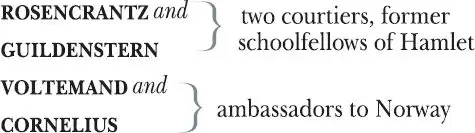
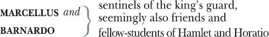

The Tragedy of Hamlet, Prince of Denmark
HAMLET , Prince of Denmark
KING 1 of Denmark, Hamlet's uncle
GHOST of old Hamlet, former King of Denmark, Hamlet's father
GERTRUDE , queen of Denmark, Hamlet's mother
POLONIUS , councillor to the state of Denmark
LAERTES , Polonius' son
OPHELIA , Polonius' daughter
REYNALDO , Polonius' servant
HORATIO , Hamlet's friend and fellow student


FRANCISCO , another sentinel of the king's guard
OSRIC , a courtier
PLAYERS , who take the roles of PROLOGUE, PLAYER KING, BAPTISTA and LUCIANUS
FORTINBRAS , Prince of Norway
A CAPTAIN in his army
Two CLOWNS , a gravedigger and his companion
Two MESSENGERS
A SAILOR
A PRIEST
AMBASSADOR from England
Lords, Soldiers, Attendants, Servants, Followers of Laertes
Act 1
Scene 1 2 / running scene 1
Enter Barnardo and Francisco, two sentinels
Meeting
BARNARDO Who's there?
FRANCISCO Nay, answer me 3 : stand and unfold 4 yourself.
BARNARDO Long live the king!
FRANCISCO Barnardo?
BARNARDO He.
FRANCISCO You come most carefully upon your hour 5 .
BARNARDO 'Tis now struck twelve: get thee to bed, Francisco.
FRANCISCO For this relief much thanks: 'tis bitter cold,
And I am sick at heart.
BARNARDO Have you had quiet guard?
FRANCISCO Not a mouse stirring.
BARNARDO Well, goodnight.
If you do meet Horatio and Marcellus,
The rivals 6 of my watch, bid them make haste.
Enter Horatio and Marcellus
FRANCISCO I think I hear them.— Stand! Who's there?
HORATIO Friends to this ground 7 .
MARCELLUS And liegemen to the Dane 8 .
FRANCISCO Give 9 you goodnight.
MARCELLUS O, farewell, honest soldier. Who hath relieved you?
FRANCISCO Barnardo has my place. Give you goodnight.
Exit Francisco
MARCELLUS Holla! Barnardo!
BARNARDO Say, what, is Horatio there?
HORATIO A piece of him.
BARNARDO Welcome, Horatio: welcome, good Marcellus.
MARCELLUS What, has this thing appeared again tonight?
BARNARDO I have seen nothing.
MARCELLUS Horatio says 'tis but our fantasy 10 ,
And will not let belief take hold of him
Touching 11 this dreaded sight twice seen of 12 us:
Therefore I have entreated him along 13
With us to watch 14 the minutes of this night,
That if again this apparition come,
He may approve 15 our eyes and speak to it.
HORATIO Tush, tush, 'twill not appear.
BARNARDO Sit down awhile,
And let us once again assail 16 your ears,
That are so fortified against our story,
What we two nights have seen.
HORATIO Well, sit we down,
And let us hear Barnardo speak of this.
BARNARDO Last night of all 17 ,
When yond 18 same star that's westward from the pole 19
Had made his course t'illume 20 that part of heaven
Where now it burns, Marcellus and myself,
The bell then beating one—
MARCELLUS Peace, break thee off.
Enter the Ghost
Look where it comes again.
BARNARDO In the same figure 21 like the king that's dead.
MARCELLUS Thou art a scholar 22 ; speak to it, Horatio.
BARNARDO Looks it not like the king? Mark it 23 , Horatio.
HORATIO Most like: it harrows 24 me with fear and wonder.
BARNARDO It would 25 be spoke to.
MARCELLUS Question it, Horatio.
HORATIO What art thou that usurp'st 26 this time of night,
Together with that fair and warlike form
In which the majesty of buried Denmark 27
Did sometimes 28 march? By heaven I charge 29 thee speak!
MARCELLUS It is offended.
BARNARDO See, it stalks away.
HORATIO Stay! Speak, speak! I charge thee, speak!
Exit the Ghost
MARCELLUS 'Tis gone and will not answer.
BARNARDO How now, Horatio? You tremble and look pale.
Is not this something more than fantasy?
What think you on't 30 ?
HORATIO Before my God, I might not this believe
Without the sensible 31 and true avouch 32
Of mine own eyes.
MARCELLUS Is it not like the king?
HORATIO As thou art to thyself.
Such was the very armour he had on
When he th'ambitious Norway 33 combated:
So frowned he once when, in an angry parle 34 ,
He smote the steelèd pole-axe 35 on the ice.
'Tis strange.
MARCELLUS Thus twice before, and just at this dead hour,
With martial stalk hath he gone by our watch.
HORATIO In what particular thought to work 36 I know not 37 ,
But in the gross and scope 38 of my opinion,
This bodes some strange eruption 39 to our state.
MARCELLUS Good now 40 , sit down and tell me, he that knows,
Why this same strict and most observant watch
So nightly toils 41 the subject 42 of the land,
And why such daily cast 43 of brazen 44 cannon
And foreign mart 45 for implements of war:
Why such impress 46 of shipwrights, whose sore task
Does not divide the Sunday from the week 47 :
What might be toward 48 , that this sweaty haste
Doth make the night joint-labourer with the day:
Who is't that can inform me?
HORATIO That can I,
At least, the whisper 49 goes so: our last king,
Whose image even but now appeared to us,
Was, as you know, by Fortinbras of Norway,
Thereto pricked 50 on by a most emulate 51 pride 52 ,
Dared to the combat, in which our valiant Hamlet —
For so this side of our known world esteemed him —
Did slay this Fortinbras, who by a sealed compact 53 ,
Well ratified by law and heraldry,
Did forfeit, with his life, all those his lands
Which he stood seized on 54 to the conqueror:
Against the which, a moiety competent 55
Was gagèd 56 by our king, which had returned 57
To the inheritance of Fortinbras,
Had he been vanquisher, as, by the same cov'nant 58 ,
And carriage of the article designed 59 ,
His fell to Hamlet. Now, sir, young Fortinbras,
Of unimprovèd 60 mettle 61 hot and full,
Hath in the skirts 62 of Norway here and there
Sharked up 63 a list 64 of landless resolutes 65
For food and diet to some enterprise 66
That hath a stomach 67 in't, which is no other —
And it doth well appear unto our state 68 —
But to recover of us, by strong hand
And terms compulsative 69 , those foresaid lands
So by his father lost: and this, I take it,
Is the main motive of our preparations,
The source of this our watch and the chief head 70
Of this post-haste 71 and rummage 72 in the land.
Enter Ghost again
But soft 73 , behold! Lo 74 , where it comes again!
I'll cross it 75 , though it blast 76 me. Stay, illusion!
If thou hast any sound or use of voice,
Speak to me:
If there be any good thing to be done
That may to thee do ease and grace to me,
Speak to me:
If thou art privy to thy country's fate —
Which, haply 77 , foreknowing may avoid — O, speak!
Or if thou hast uphoarded 78 in thy life
Extorted 79 treasure in the womb of earth —
↓A cock crows↓
For which, they say, you spirits oft walk in death —
Speak of it: stay and speak!— Stop it, Marcellus.
MARCELLUS Shall I strike at it with my partisan 80 ?
HORATIO Do, if it will not stand 81 .
They attempt to strike it
BARNARDO 'Tis here!
HORATIO 'Tis here!
MARCELLUS 'Tis gone!
Exit Ghost
We do it wrong, being so majestical,
To offer it the show of violence,
For it is as the air invulnerable,
And our vain blows malicious mockery.
BARNARDO It was about to speak when the cock crew.
HORATIO And then it started like a guilty thing
Upon a fearful summons. I have heard
The cock, that is the trumpet to the day,
Doth with his lofty and shrill-sounding throat
Awake the god of day, and at his warning,
Whether in sea or fire, in earth or air,
Th'extravagant and erring 82 spirit hies 83
To his confine 84 : and of the truth herein
This present object made probation 85 .
MARCELLUS It faded on the crowing of the cock.
Some say that ever gainst 86 that season comes
Wherein our Saviour 87 's birth is celebrated,
The bird of dawning 88 singeth all night long,
And then, they say, no spirit can walk abroad:
The nights are wholesome 89 , then no planets strike 90 ,
No fairy talks 91 , nor witch hath power to charm 92 ,
So hallowed 93 and so gracious 94 is the time.
HORATIO So have I heard and do in part believe it.
But, look, the morn in russet 95 mantle clad,
Walks o'er the dew of yon high eastern hill.
Break we our watch up, and by my advice,
Let us impart what we have seen tonight
Unto young Hamlet, for upon my life,
This spirit, dumb to us, will speak to him.
Do you consent we shall acquaint him with it,
As needful in our loves, fitting our duty?
MARCELLUS Let's do't, I pray, and I this morning know
Where we shall find him most conveniently.
Exeunt
Scene 2 96 / running scene 2
Enter Claudius King of Denmark, Gertrude the Queen, Hamlet, Polonius, Laertes and his sister Ophelia, Lords Attendant
KING Though yet of Hamlet our dear brother's death
The memory be green 97 , and that it us befitted
To bear our hearts in grief and our whole kingdom
To be contracted 98 in one brow of woe,
Yet so far hath discretion 99 fought with nature
That we with wisest sorrow think on him
Together with remembrance of ourselves.
Therefore our sometime 100 sister, now our queen,
Th'imperial jointress 101 of this warlike state,
Have we, as 'twere with a defeated joy,
With one auspicious and one dropping eye 102 ,
With mirth in funeral and with dirge in marriage,
In equal scale weighing delight and dole 103 ,
Taken to wife; nor have we herein barred 104
Your better wisdoms, which have freely gone
With this affair along. For all, our thanks.
Now follows that you know 105 young Fortinbras,
Holding a weak supposal 106 of our worth,
Or thinking by our late dear brother's death
Our state to be disjoint and out of frame,
Colleaguèd 107 with the dream of his advantage 108 ,
He hath not failed to pester us with message
Importing 109 the surrender of those lands
Lost by his father, with all bonds of law,
To our most valiant brother. So much for him.
Enter Voltemand and Cornelius
Now for ourself and for this time of meeting,
Thus much the business is: we have here writ
To Norway, uncle of young Fortinbras —
Who, impotent 110 and bedrid 111 , scarcely hears
Of this his nephew's purpose — to suppress
His 112 further gait 113 herein, in that the levies,
The lists and full proportions, are all made
Out of his subject 114 . And we here dispatch
You, good Cornelius, and you, Voltemand,
For bearing of this greeting to old Norway,
Giving to you no further personal power
To 115 business with the king, more than the scope
Of these dilated articles 116 allow.
Gives a paper
Farewell, and let your haste commend your duty 117 .
VOLTEMAND In that, and all things, will we show our duty.
KING We doubt it nothing 118 : heartily farewell.—
Exeunt Voltemand and Cornelius
And now, Laertes, what's the news with you?
You told us of some suit 119 : what is't, Laertes?
You cannot speak of reason to the Dane 120
And lose your voice 121 : what wouldst thou beg, Laertes,
That shall not be my offer, not thy asking 122 ?
The head is not more native 123 to the heart,
The hand more instrumental 124 to the mouth,
Than is the throne of Denmark to thy father.
What wouldst thou have, Laertes?
LAERTES Dread my lord 125 ,
Your leave and favour 126 to return to France,
From whence though willingly I came to Denmark
To show my duty in your coronation,
Yet now I must confess, that duty done,
My thoughts and wishes bend again towards France
And bow them 127 to your gracious leave and pardon 128 .
KING Have you your father's leave? What says Polonius?
POLONIUS He hath, my lord:
I do beseech you, give him leave to go.
KING Take thy fair hour, Laertes: time be thine,
And thy best graces 129 spend it at thy will.—
But now, my cousin 130 Hamlet, and my son—
HAMLET A little more than kin and less than kind 131 132 .
KING How is it that the clouds still hang on you?
HAMLET Not so, my lord:— I am too much i'th'sun.
Aside?
GERTRUDE Good Hamlet, cast thy nightly colour 133 off,
And let thine eye look like a friend on Denmark.
Do not forever with thy veilèd lids 134
Seek for thy noble father in the dust:
Thou know'st 'tis common 135 , all that lives must die,
Passing through nature to eternity.
HAMLET Ay, madam, it is common.
GERTRUDE If it be,
Why seems it so particular 136 with thee?
HAMLET 'Seems', madam? Nay it is: I know not 'seems'.
'Tis not alone my inky cloak, good mother,
Nor customary 137 suits of solemn black,
Nor windy suspiration 138 of forced breath,
No, nor the fruitful river in the eye,
Nor the dejected 'haviour of the visage 139 ,
Together with all forms, moods 140 , shows of grief,
That can denote 141 me truly: these indeed seem,
For they are actions that a man might play,
But I have that within which passeth 142 show;
These but the trappings and the suits of woe.
KING 'Tis sweet and commendable in your nature, Hamlet,
To give these mourning duties to your father:
But you must know your father lost a father,
That father lost, lost his, and the survivor bound
In filial obligation for some term
To do obsequious 143 sorrow. But to persever 144
In obstinate condolement 145 is a course
Of impious stubbornness: 'tis unmanly grief:
It shows a will most incorrect 146 to heaven,
A heart unfortified, a mind impatient 147 ,
An understanding simple and unschooled.
For what we know must be and is as common
As any the most vulgar thing to sense 148 ,
Why should we in our peevish 149 opposition
Take it to heart? Fie 150 , 'tis a fault to heaven,
A fault against the dead, a fault to nature,
To reason most absurd, whose common theme
Is death of fathers, and who still 151 hath cried,
From the first corpse till he that died today,
'This must be so.' We pray you throw to earth
This unprevailing 152 woe, and think of us
As of a father; for let the world take note,
You are the most immediate 153 to our throne,
And with no less nobility of love
Than that which dearest father bears his son,
Do I impart towards you. For 154 your intent
In going back to school in Wittenberg 155 ,
It is most retrograde 156 to our desire,
And we beseech you bend you 157 to remain
Here in the cheer and comfort of our eye,
Our chiefest courtier, cousin, and our son.
GERTRUDE Let not thy mother lose her prayers, Hamlet:
I prithee stay with us, go not to Wittenberg.
HAMLET I shall in all my best obey you, madam.
KING Why, 'tis a loving and a fair reply.
Be as ourself in Denmark.— Madam, come:
This gentle 158 and unforced accord 159 of Hamlet
Sits smiling to my heart, in grace whereof 160 ,
No jocund health 161 that Denmark 162 drinks today
But the great cannon to the clouds shall tell 163 ,
And the king's rouse 164 the heavens shall bruit 165 again,
Re-speaking 166 earthly thunder. Come away.
Exeunt. Hamlet remains
HAMLET O, that this too too solid flesh would melt,
Thaw and resolve 167 Everlasting 168 itself into a dew!
Or that the Everlasting had not fixed
His canon 169 gainst self-slaughter! O God, O God!
How weary, stale, flat and unprofitable
Seem to me all the uses 170 of this world!
Fie on't! O, fie, fie! 'Tis an unweeded garden
That grows to seed: things rank and gross 171 in nature
Possess it merely 172 . That it should come to 173 this!
But two months dead: nay, not so much, not two.
So excellent a king, that was to this
Hyperion 174 to a satyr 175 , so loving to my mother
That he might not beteem 176 the winds of heaven
Visit her face too roughly. Heaven and earth,
Must I remember? Why, she would hang on him
As if increase of appetite had grown
By what it fed on, and yet within a month —
Let me not think on't: frailty, thy name is woman! —
A little month, or ere 177 those shoes were old
With which she followed my poor father's body,
Like Niobe 178 , all tears: why she, even she —
O, heaven! A beast that wants discourse of reason 179
Would have mourned longer — married with mine uncle,
My father's brother but no more like my father
Than I to Hercules 180 . Within a month?
Ere yet the salt of most unrighteous 181 tears
Had left the flushing 182 of her gallèd 183 eyes,
She married. O, most wicked speed, to post 184
With such dexterity to incestuous sheets!
It is not nor it cannot come to good:
But break my heart, for I must hold my tongue.
Enter Horatio, Barnardo and Marcellus
HORATIO Hail to your lordship!
HAMLET I am glad to see you well:
Horatio — or I do forget myself.
Recognizes him
HORATIO The same, my lord, and your poor servant ever.
HAMLET Sir, my good friend, I'll change that name with you 185 .
And what make you from 186 Wittenberg, Horatio?— Marcellus.
MARCELLUS My good lord.
HAMLET I am very glad to see you.— Good even 187 , sir.—
To Barnardo
But what in faith make you from Wittenberg?
To Horatio
HORATIO A truant 188 disposition, good my lord.
HAMLET I would not have your enemy say so,
Nor shall you do mine ear that violence,
To make it truster of your own report
Against yourself: I know you are no truant.
But what is your affair in Elsinore?
We'll teach you to drink deep ere 189 you depart.
HORATIO My lord, I came to see your father's funeral.
HAMLET I pray thee do not mock me, fellow student:
I think it was to see my mother's wedding.
HORATIO Indeed, my lord, it followed hard 190 upon.
HAMLET Thrift 191 , thrift, Horatio! The funeral baked meats 192
Did coldly furnish forth the marriage tables.
Would I had met my dearest 193 foe in heaven
Ere I had ever seen that day, Horatio.
My father, methinks I see my father.
HORATIO O, where, my lord?
HAMLET In my mind's eye, Horatio.
HORATIO I saw him once; he was a goodly king.
HAMLET He was a man, take him for all in all:
I shall not look upon his like again.
HORATIO My lord, I think I saw him yesternight 194 .
HAMLET Saw who?
HORATIO My lord, the king your father.
HAMLET The king my father?
HORATIO Season your admiration 195 for a while
With an attent 196 ear till I may deliver 197 ,
Upon the witness of these gentlemen,
This marvel to you.
HAMLET For heaven's love, let me hear.
HORATIO Two nights together had these gentlemen,
Marcellus and Barnardo, on their watch,
In the dead waste 198 and middle of the night,
Been thus encountered. A figure like your father,
Armed at all points 199 exactly, cap-à-pie 200 ,
Appears before them, and with solemn march
Goes 201 slow and stately: by them thrice he walked,
By their oppressed and fear-surprisèd 202 eyes
Within his truncheon 203 's length, whilst they, distilled 204
Almost to jelly with the act 205 of fear
Stand dumb and speak not to him. This to me
In dreadful 206 secrecy impart they did,
And I with them the third night kept the watch,
Where, as they had delivered, both in time,
Form of the thing, each word made true and good,
The apparition comes. I knew your father:
These hands are not more like 207 .
HAMLET But where was this?
MARCELLUS My lord, upon the platform 208 where we watched.
HAMLET Did you not speak to it?
HORATIO My lord, I did;
But answer made it none. Yet once methought
It lifted up its head and did address
Itself to motion, like as it would speak 209 :
But even then the morning cock crew loud,
And at the sound it shrunk in haste away
And vanished from our sight.
HAMLET 'Tis very strange.
HORATIO As I do live, my honoured lord, 'tis true;
And we did think it writ down in our duty
To let you know of it.
HAMLET Indeed, indeed, sirs; but this troubles me.
Hold you the watch tonight?
MARCELLUS and BARNARDO We do, my lord.
HAMLET Armed, say you?
MARCELLUS and BARNARDO Armed, my lord.
HAMLET From top to toe?
MARCELLUS and BARNARDO My lord, from head to foot.
HAMLET Then saw you not his face?
HORATIO O, yes, my lord, he wore his beaver 210 up.
HAMLET What, looked he frowningly?
HORATIO A countenance 211 more in sorrow than in anger.
HAMLET Pale or red?
HORATIO Nay, very pale.
HAMLET And fixed his eyes upon you?
HORATIO Most constantly.
HAMLET I would I had been there.
HORATIO It would have much amazed you.
HAMLET Very like, very like. Stayed it long?
HORATIO While one with moderate haste might tell 212 a hundred.
MARCELLUS and BARNARDO Longer, longer.
HORATIO Not when I saw't.
HAMLET His beard was grizzly 213 , no?
HORATIO It was, as I have seen it in his life,
A sable silvered 214 .
HAMLET I'll watch tonight; perchance 'twill walk again.
HORATIO I warrant 215 you it will.
HAMLET If it assume my noble father's person,
I'll speak to it though hell itself should gape
And bid me hold my peace. I pray you all,
If you have hitherto concealed this sight,
Let it be tenable 216 in your silence still 217 ,
And whatsoever else shall hap tonight,
Give it an understanding but no tongue.
I will requite 218 your loves. So, fare ye well:
Upon the platform 'twixt eleven and twelve
I'll visit you.
ALL Our duty to your honour.
Exeunt [all but Hamlet]
HAMLET Your love, as mine to you: farewell.—
My father's spirit in arms? All is not well:
I doubt 219 some foul play. Would the night were come.
Till then, sit still my soul: foul deeds will rise,
Though all the earth o'erwhelm them, to men's eyes.
Exit
Scene 3 220 / running scene 3
Enter Laertes and Ophelia
LAERTES My necessaries are embarked, farewell:
And, sister, as 221 the winds give benefit
And convoy is assistant 222 , do not sleep
But let me hear from you.
OPHELIA Do you doubt that?
LAERTES For Hamlet and the trifling of his favours,
Hold it a fashion and a toy in blood 223 ,
A violet in the youth of primy 224 nature,
Froward 225 , not permanent, sweet, not lasting,
The suppliance 226 of a minute, no more.
OPHELIA No more but so 227 ?
LAERTES Think it no more,
For nature crescent 228 does not grow alone
In thews 229 and bulk, but as his temple 230 waxes,
The inward service of the mind and soul
Grows wide withal 231 . Perhaps he loves you now,
And now no soil nor cautel 232 doth besmirch
The virtue of his will 233 : but you must fear,
His greatness weighed 234 , his will is not his own;
For he himself is subject to his birth:
He may not, as unvalued 235 persons do,
Carve 236 for himself, for on his choice depends
The sanctity 237 and health of the whole state,
And therefore must his choice be circumscribed
Unto the voice and yielding 238 of that body
Whereof he is the head. Then if he says he loves you,
It fits your wisdom so far to believe it
As he in his peculiar sect and force 239
May give his saying deed, which is no further
Than the main voice 240 of Denmark goes withal 241 .
Then weigh what loss your honour may sustain
If with too credent 242 ear you list 243 his songs,
Or lose your heart, or your chaste treasure 244 open
To his unmastered importunity 245 .
Fear it, Ophelia, fear it, my dear sister,
And keep within the rear 246 of your affection 247 ,
Out of the shot 248 and danger of desire.
The chariest 249 maid is prodigal enough
If she 250 unmask her beauty to the moon 251 :
Virtue itself scapes 252 not calumnious strokes 253 :
The canker 254 galls 255 the infants of the spring 256
Too oft before the buttons be disclosed 257 ,
And in the morn and liquid dew of youth
Contagious blastments 258 are most imminent.
Be wary then: best safety lies in fear.
Youth to 259 itself rebels, though none else near.
OPHELIA I shall th'effect of this good lesson keep
As watchman to my heart. But, good my brother,
Do not, as some ungracious 260 pastors do,
Show me the steep and thorny way to heaven,
Whilst, like a puffed 261 and reckless libertine
Himself the primrose path of dalliance treads,
And recks 262 not his own rede 263 .
LAERTES O, fear me not 264 .
Enter Polonius
I stay 265 too long. But here my father comes.
A double blessing 266 is a double grace;
Occasion 267 smiles upon a second leave 268 .
POLONIUS Yet here, Laertes? Aboard, aboard, for shame!
The wind sits in the shoulder of your sail,
And you are stayed 269 for there. My blessing with you!
And these few precepts in thy memory
See thou character 270 . Give thy thoughts no tongue,
Nor any unproportioned 271 thought his 272 act.
Be thou familiar 273 , but by no means vulgar.
The friends thou hast, and their adoption tried 274 ,
Grapple 275 them to thy soul with hoops of steel,
But do not dull thy palm 276 with entertainment
Of each new-hatched, unfledged 277 comrade: beware
Of entrance to a quarrel, but being in,
Bear't that th'opposèd 278 may beware of thee.
Give every man thine ear, but few thy voice:
Take each man's censure 279 , but reserve thy judgement:
Costly thy habit 280 as thy purse can buy,
But not expressed in fancy 281 ; rich, not gaudy:
For the apparel oft proclaims the man,
And they in France of the best rank and station
Are of a most select and generous chief in that 282 .
Neither a borrower nor a lender be,
For loan oft loses both itself and friend,
And borrowing dulls the edge of husbandry 283 .
This above all: to thine own self be true,
And it must follow, as the night the day,
Thou canst not then be false 284 to any man.
Farewell: my blessing season 285 this 286 in thee!
LAERTES Most humbly do I take my leave, my lord.
POLONIUS The time invites you. Go, your servants tend 287 .
LAERTES Farewell, Ophelia, and remember well
What I have said to you.
OPHELIA 'Tis in my memory locked,
And you yourself shall keep the key of it.
LAERTES Farewell.
Exit Laertes
POLONIUS What is't, Ophelia, he hath said to you?
OPHELIA So please you, something touching 288 the lord Hamlet.
POLONIUS Marry 289 , well bethought 290 .
'Tis told me, he hath very oft of late
Given private time to you; and you yourself
Have of your audience 291 been most free and bounteous:
If it be so, as so 'tis put on 292 me,
And that in way of caution, I must tell you
You do not understand yourself so clearly
As it behoves 293 my daughter and your honour.
What is between you? Give me up the truth.
OPHELIA He hath, my lord, of late made many tenders 294
Of his affection to me.
POLONIUS Affection? Puh! You speak like a green 295 girl,
Unsifted 296 in such perilous circumstance.
Do you believe his tenders, as you call them?
OPHELIA I do not know, my lord, what I should think.
POLONIUS Marry, I'll teach you: think yourself a baby
That you have ta'en his tenders for true pay
Which are not sterling 297 . Tender yourself more dearly 298 ;
Or — not to crack the wind of 299 the poor phrase,
Running 300 it thus — you'll tender me a fool 301 .
OPHELIA My lord, he hath importuned 302 me with love
In honourable fashion 303 .
POLONIUS Ay, fashion you may call it. Go to 304 , go to.
OPHELIA And hath given countenance 305 to his speech,
My lord, with all the vows of heaven.
POLONIUS Ay, springes 306 to catch woodcocks 307 . I do know,
When the blood burns, how prodigal 308 the soul
Lends the tongue vows: these blazes, daughter,
Giving more light than heat, extinct in both
Even in their promise, as it is a-making 309 ,
You must not take for fire. For this time 310 , daughter,
Be somewhat scanter 311 of your maiden presence;
Set your entreatments 312 at a higher rate
Than a command to parley 313 . For Lord Hamlet,
Believe so much in him that he is young
And with a larger tether may he walk
Than may be given you: in few 314 , Ophelia,
Do not believe his vows, for they are brokers 315 ,
Not of the dye which their investments 316 show,
But mere implorators 317 of unholy suits 318 ,
Breathing like sanctified and pious bawds 319 ,
The better to beguile 320 . This is for all 321 :
I would not, in plain terms, from this time forth,
Have you so slander any moment 322 leisure,
As to give words or talk with the Lord Hamlet.
Look to't, I charge you. Come your ways 323 .
OPHELIA I shall obey, my lord.
Exeunt
Scene 4 324 / running scene 4
Enter Hamlet, Horatio, Marcellus
HAMLET The air bites shrewdly 325 : is it very cold?
HORATIO It is a nipping and an eager 326 air.
HAMLET What hour now?
HORATIO I think it lacks of 327 twelve.
HAMLET No, it is struck.
HORATIO Indeed? I heard it not: then it draws near the season
Wherein the spirit held his wont 328 to walk.
What does this mean, my lord?
A flourish 329 of trumpets and drums, perhaps also cannon
HAMLET The king doth wake 330 tonight and takes his rouse 331 ,
Keeps wassail 332 , and the swaggering upspring reels 333 :
And as he drains his draughts of Rhenish 334 down,
The kettledrum 335 and trumpet thus bray out
The triumph of his pledge 336 .
HORATIO Is it a custom?
HAMLET Ay, marry, is't:
And to my mind, though I am native here
And to the manner 337 born, it is a custom
More honoured in the breach than the observance 338 .
Enter Ghost
HORATIO Look, my lord, it comes!
HAMLET Angels and ministers of grace 339 defend us!
Be thou 340 a spirit of health 341 or goblin 342 damned,
Bring with thee airs from heaven or blasts from hell,
Be thy intents wicked or charitable,
Thou com'st in such a questionable shape 343
That I will speak to thee: I'll call thee Hamlet,
King, father, royal Dane. O, O, answer me!
Let me not burst in ignorance, but tell
Why thy canonized 344 bones, hearsèd 345 in death,
Have burst their cerements 346 , why the sepulchre 347
Wherein we saw thee quietly inurned 348 ,
Hath oped his ponderous 349 and marble jaws
To cast 350 thee up again. What may this mean,
That thou, dead corpse, again in complete steel 351
Revisits thus the glimpses of the moon 352 ,
Making night hideous 353 , and we fools of nature 354
So horridly 355 to shake our disposition 356 Wherefore? 357
With thoughts beyond the reaches of our souls?
Say, why is this? Wherefore? What should we do?
Ghost beckons Hamlet
HORATIO It beckons you to go away with it,
As if it some impartment 358 did desire
To you alone.
MARCELLUS Look, with what courteous action
It wafts 359 you to a more removèd ground:
But do not go with it.
HORATIO No, by no means.
HAMLET It will not speak; then will I follow it.
HORATIO Do not, my lord.
HAMLET Why, what should be the fear?
I do not set my life at a pin's fee 360 ;
And for my soul, what can it do to that,
Being a thing immortal as itself?
It waves me forth again: I'll follow it.
HORATIO What if it tempt you toward the flood 361 , my lord,
Or to the dreadful summit of the cliff
That beetles o'er 362 his base into the sea,
And there assumes some other horrible form
Which might deprive your sovereignty of reason 363
And draw you into madness? Think of it.
HAMLET It wafts me still.— Go on, I'll follow thee.
MARCELLUS You shall not go, my lord.
Holds him back
HAMLET Hold off your hand.
HORATIO Be ruled: you shall not go.
HAMLET My fate cries out,
And makes each petty artery 364 in this body
As hardy as the Nemean lion 365 's nerve 366 .—
Still am I called?— Unhand me, gentlemen.
By heav'n, I'll make a ghost of him that lets 367 me!
I say, away!— Go on, I'll follow thee.
Exeunt Ghost and Hamlet
HORATIO He waxes 368 desperate with imagination.
MARCELLUS Let's follow; 'tis not fit thus to obey him.
HORATIO Have after 369 . To what issue 370 will this come?
MARCELLUS Something is rotten in the state of Denmark.
HORATIO Heaven will direct it 371 .
MARCELLUS Nay, let's follow him.
Exeunt
Scene 5 / running scene 4 continues
Enter Ghost and Hamlet
HAMLET Where wilt thou lead me? Speak; I'll go no further.
GHOST Mark 372 me.
HAMLET I will.
GHOST My hour is almost come,
When I to sulphurous and tormenting flames
Must render up myself.
HAMLET Alas, poor ghost!
GHOST Pity me not, but lend thy serious hearing
To what I shall unfold 373 .
HAMLET Speak: I am bound 374 to hear.
GHOST So art thou to revenge, when thou shalt hear.
HAMLET What?
GHOST I am thy father's spirit,
Doomed for a certain term to walk the night,
And for the day confined to fast in fires,
Till the foul crimes done in my days of nature
Are burnt and purged away. But 375 that I am forbid
To tell the secrets of my prison-house,
I could a tale unfold whose lightest word
Would harrow up 376 thy soul, freeze thy young blood,
Make thy two eyes like stars start from their spheres 377 ,
Thy knotty and combinèd locks 378 to part
And each particular hair to stand on end
Like quills upon the fretful porpentine 379 .
But this eternal blazon 380 must not be
To ears of flesh and blood. List 381 , Hamlet, O, list!
If thou didst ever thy dear father love—
HAMLET O heaven!
GHOST Revenge his foul and most unnatural murder.
HAMLET Murder?
GHOST Murder most foul, as in the best 382 it is,
But this most foul, strange and unnatural.
HAMLET Haste, haste me to know it, that I with wings as swift
As meditation 383 or the thoughts of love
May sweep 384 to my revenge.
GHOST I find thee apt 385 ,
And duller shouldst thou be 386 than the fat weed
That roots itself in ease on Lethe wharf 387 ,
Wouldst thou not stir in this. Now, Hamlet, hear:
It's given out that, sleeping in mine orchard 388 ,
A serpent stung me, so the whole ear of Denmark
Is by a forgèd process 389 of my death
Rankly 390 abused. But know thou, noble youth,
The serpent that did sting thy father's life
Now wears his crown.
HAMLET O, my prophetic soul! Mine uncle!
GHOST Ay, that incestuous, that adulterate 391 beast,
With witchcraft of his wit, with traitorous gifts 392 —
O, wicked wit and gifts, that have the power
So to seduce! — won to his shameful lust
The will 393 of my most seeming-virtuous queen.
O Hamlet, what a falling-off was there!
From me, whose love was of that dignity 394
That it went hand in hand even with the vow
I made to her in marriage, and to decline
Upon 395 a wretch whose natural gifts were poor
To those of mine!
But virtue, as it 396 never will be moved,
Though lewdness court it in a shape of heaven,
So lust, though to a radiant angel linked,
Will sate itself 397 in a celestial bed,
And prey on garbage 398 .
But, soft, methinks I scent the morning's air;
Brief let me be. Sleeping within mine orchard,
My custom always in the afternoon,
Upon my secure 399 hour thy uncle stole,
With juice of cursèd hebenon 400 in a vial,
And in the porches of mine ears did pour
The leperous distilment 401 , whose effect
Holds such an enmity with blood of man
That swift as quicksilver 402 it courses through
The natural gates and alleys of the body,
And with a sudden vigour it doth posset
And curd 403 , like eager 404 droppings into milk,
The thin and wholesome blood: so did it mine,
And a most instant tetter 405 barked about 406 ,
Most lazar-like 407 , with vile and loathsome crust,
All my smooth body.
Thus was I, sleeping, by a brother's hand
Of life, of crown and queen, at once dispatched 408 :
Cut off even in the blossoms of my sin,
Unhouseled, disappointed, unaneled 409 ,
No reckoning 410 made, but sent to my account 411
With all my imperfections on my head.
O horrible, O horrible, most horrible!
If thou hast nature 412 in thee, bear it not;
Let not the royal bed of Denmark be
A couch for luxury 413 and damnèd incest.
But, howsoever thou pursuest this act,
Taint 414 not thy mind nor let thy soul contrive
Against thy mother aught 415 ; leave her to heaven
And to those thorns that in her bosom lodge,
To prick and sting her. Fare thee well at once;
The glow-worm shows the matin 416 to be near,
And 'gins 417 to pale his uneffectual 418 fire.
Adieu, adieu, Hamlet: remember me.
Exit
HAMLET O all you host 419 of heaven! O earth! What else?
And shall I couple 420 hell? O, fie! Hold, my heart;
And you, my sinews, grow not instant old,
But bear me stiffly up. Remember thee?
Ay, thou poor ghost, while memory holds a seat
In this distracted 421 globe 422 . Remember thee?
Yea, from the table 423 of my memory
I'll wipe away all trivial fond 424 records 425 ,
All saws 426 of books, all forms, all pressures 427 past
That youth and observation copied there;
And thy commandment all alone shall live
Within the book and volume of my brain,
Unmixed with baser matter: yes, yes, by heaven!
O most pernicious 428 woman!
O villain, villain, smiling, damnèd villain!
My tables,
My tables: meet 429 it is I set it down
That one may smile and smile and be a villain;
At least I'm sure it may be so in Denmark.
Writes
So, uncle, there you are. Now to my word 430 :
It is 'Adieu, adieu, remember me.'
I have sworn't.
HORATIO and MARCELLUS My lord, my lord!
Within
Enter Horatio and Marcellus
MARCELLUS Lord Hamlet!
HORATIO Heaven secure him.
HAMLET So be it.
HORATIO Hillo, ho, ho, my lord!
HAMLET Hillo, ho, ho, boy! Come, bird, come 431 .
MARCELLUS How is't 432 , my noble lord?
HORATIO What news, my lord?
HAMLET O, wonderful 433 !
HORATIO Good my lord, tell it.
HAMLET No, you'll reveal it.
HORATIO Not I, my lord, by heaven.
MARCELLUS Nor I, my lord.
HAMLET How say you, then, would heart of man once 434 think it?
But you'll be secret?
BOTH Ay, by heaven, my lord.
HAMLET There's ne'er a villain dwelling in all Denmark
But he's an arrant 435 knave.
HORATIO There needs no ghost, my lord, come from the grave
To tell us this.
HAMLET Why, right, you are i'th'right;
And so, without more circumstance 436 at all,
I hold it fit that we shake hands and part:
You, as 437 your business and desires shall point you,
For every man has business and desire,
Such as it is: and for mine own poor part,
Look you, I'll go pray.
HORATIO These are but wild and whirling words, my lord.
HAMLET I'm sorry they offend you, heartily:
Yes, faith, heartily.
HORATIO There's no offence, my lord.
HAMLET Yes, by Saint Patrick 438 , but there is, Horatio,
And much offence too. Touching this vision here,
It is an honest 439 ghost, that let me tell you:
For your desire to know what is between us,
O'ermaster't 440 as you may. And now, good friends,
As you are friends, scholars and soldiers,
Give me one poor request.
HORATIO What is't, my lord? We will.
HAMLET Never make known what you have seen tonight.
BOTH My lord, we will not.
HAMLET Nay, but swear't.
HORATIO In faith, my lord, not I 441 .
MARCELLUS Nor I, my lord, in faith.
HAMLET Upon my sword 442 .
Holds out his sword
MARCELLUS We have sworn, my lord, already.
HAMLET Indeed, upon my sword, indeed.
GHOST Swear.
Ghost cries under the stage 443
HAMLET Ah ha, boy, say'st thou so? Art thou there, truepenny 444 ?—
Come on, you hear this fellow in the cellarage 445 :
Consent to swear.
HORATIO Propose the oath, my lord.
HAMLET Never to speak of this that you have seen,
Swear by my sword.
GHOST Swear.
They swear
HAMLET Hic et ubique 446 ? Then we'll shift our ground.
Moves
Come hither, gentlemen,
And lay your hands again upon my sword:
Never to speak of this that you have heard,
Swear by my sword.
GHOST Swear.
They swear
HAMLET Well said, old mole. Canst work i'th'ground so fast?
A worthy pioneer 447 ! Once more remove 448 , good friends.
HORATIO O, day and night, but this is wondrous strange!
HAMLET And therefore as a stranger 449 give it welcome.
There are more things in heaven and earth, Horatio,
Aside to Horatio?
Than are dreamt of in our philosophy.— But come,
Here, as before, never, so help you mercy 450 ,
How strange or odd soe'er 451 I bear myself —
As I perchance hereafter shall think meet
To put an antic 452 disposition on —
That you, at such time seeing me, never shall,
With arms encumbered 453 thus, or thus headshake 454 ,
Or by pronouncing of some doubtful 455 phrase,
As 'Well, we know' or 'We could, an if 456 we would'
Or 'If we list 457 to speak' or 'There be, an if they might' 458
Or such ambiguous giving out 459 , to note 460
That you know aught of me: this not to do,
So grace and mercy at your most need help you. Swear.
GHOST Swear.
They swear
HAMLET Rest, rest, perturbèd spirit!— So, gentlemen,
With all my love I do commend me 461 to you:
And what 462 so poor a man as Hamlet is
May do t'express his love and friending 463 to you,
God willing, shall not lack. Let us go in together:
And still 464 your fingers on your lips, I pray.
The time 465 is out of joint 466 : O, cursèd spite
That ever I was born to set it right!
Nay, come, let's go together.
Exeunt
Act 2
Scene 1 467 / running scene 5
Enter Polonius and Reynaldo
POLONIUS Give him this money and these notes, Reynaldo.
Gives money and papers
REYNALDO I will, my lord.
POLONIUS You shall do marvellous 468 wisely, good Reynaldo,
Before you 469 visit him, you make inquiry
Of his behaviour.
REYNALDO My lord, I did intend it.
POLONIUS Marry, well said; very well said. Look you, sir,
Inquire me 470 first what Danskers 471 are in Paris,
And how, and who, what means and where they keep 472 ,
What company, at what expense, and finding
By this encompassment 473 and drift 474 of question
That they do know my son, come you more nearer
Than your particular demands will touch it 475 :
Take you 476 , as 'twere, some distant knowledge of him,
As thus, 'I know his father and his friends
And in part him.' Do you mark this, Reynaldo?
REYNALDO Ay, very well, my lord.
POLONIUS 'And in part him, but', you may say, 'not well,
But if't be he I mean, he's very wild;
Addicted 477 so and so', and there put on him
What forgeries 478 you please: marry, none so rank 479
As may dishonour him — take heed of that —
But, sir, such wanton 480 , wild and usual slips 481
As are companions noted and most known
To youth and liberty.
REYNALDO As gaming 482 , my lord.
POLONIUS Ay, or drinking, fencing, swearing, quarrelling,
Drabbing 483 : you may go so far.
REYNALDO My lord, that would dishonour him.
POLONIUS Faith, no, as you may season it in the charge 484 .
You must not put another scandal on him,
That he is open to incontinency 485 ;
That's not my meaning: but breathe his faults so quaintly 486
That they may seem the taints of liberty 487 ,
The flash and outbreak of a fiery mind,
A savageness 488 in unreclaimèd 489 blood,
Of general assault 490 .
REYNALDO But, my good lord—
POLONIUS Wherefore should you do this?
REYNALDO Ay, my lord, I would know that.
POLONIUS Marry, sir, here's my drift 491 ,
And I believe, it is a fetch of warrant 492 :
You laying these slight sullies on my son,
As 'twere 493 a thing a little soiled i'th'working 494 ,
Mark you, your party in converse 495 , him you would sound 496 ,
Having ever 497 seen in the prenominate 498 crimes
The youth you breathe of 499 guilty, be assured
He closes with you in this consequence 500 :
'Good sir' or so, or 'friend' or 'gentleman',
According to the phrase and the addition 501
Of man and country.
REYNALDO Very good, my lord.
POLONIUS And then, sir, does he this — he does — what was I about to say? I was about to say something: where did I leave?
REYNALDO At 'closes in the consequence', at 'friend or so' and 'gentleman'.
POLONIUS At 'closes in the consequence', ay, marry 502 .
He closes with you thus: 'I know the gentleman,
I saw him yesterday, or t'other day',
Or then, or then, with such and such; and, as you say,
There was he gaming, there o'ertook in's rouse 503 ,
There falling out at tennis, or perchance,
'I saw him enter such a house of sale',
Videlicet 504 , a brothel, or so forth.
See you now;
Your bait of falsehood takes this carp 505 of truth:
And thus do we of wisdom and of reach 506 ,
With windlasses 507 and with assays of bias 508 ,
By indirections 509 find directions out:
So by my former lecture 510 and advice,
Shall you my son. You have 511 me, have you not?
REYNALDO My lord, I have.
POLONIUS God buy 512 you; fare you well.
REYNALDO Good my lord.
POLONIUS Observe his inclination in yourself 513 .
REYNALDO I shall, my lord.
POLONIUS And let him ply his music 514 .
REYNALDO Well 515 , my lord.
Exit
Enter Ophelia
POLONIUS Farewell.— How now, Ophelia, what's the matter?
OPHELIA Alas, my lord, I have been so affrighted!
POLONIUS With what, in the name of heaven?
OPHELIA My lord, as I was sewing in my chamber,
Lord Hamlet, with his doublet 516 all unbraced 517 ,
No hat 518 upon his head, his stockings fouled,
Ungartered 519 , and down-gyvèd 520 to his ankle,
Pale as his shirt, his knees knocking each other,
And with a look so piteous in purport 521
As if he had been loosèd out of hell
To speak of horrors — he comes before me.
POLONIUS Mad for thy love?
OPHELIA My lord, I do not know, but truly I do fear it.
POLONIUS What said he?
OPHELIA He took me by the wrist and held me hard;
Then goes he to the length of all his arm 522 ,
And with his other hand thus o'er his brow
He falls to such perusal of my face
As 523 he would draw it. Long stayed he so.
At last, a little shaking of mine arm
And thrice his head thus waving up and down,
He raised a sigh so piteous and profound
That it did seem to shatter all his bulk
And end his being: that done, he lets me go,
And, with his head over his shoulders turned,
He seemed to find his way without his eyes,
For out o'doors he went without their help,
And to the last, bended their light 524 on me.
POLONIUS Go with me: I will go seek the king.
This is the very ecstasy 525 of love,
Whose violent property fordoes itself 526
And leads the will to desperate undertakings
As oft as any passion under heaven
That does afflict our natures. I am sorry.
What, have you given him any hard words of late?
OPHELIA No, my good lord, but as you did command,
I did repel his letters and denied
His access to me.
POLONIUS That hath made him mad.
I am sorry that with better speed 527 and judgement
I had not quoted 528 him: I feared he did but trifle,
And meant to wreck 529 thee. But beshrew my jealousy 530 !
It seems it is as proper to our age 531
To cast beyond ourselves 532 in our opinions
As it is common for the younger sort
To lack discretion. Come, go we to the king:
This must be known, which, being kept close 533 , might move
More grief to hide than hate to utter love 534 .
Exeunt
Scene 2 / running scene 6
Enter King, Queen, Rosencrantz and Guildenstern, with others
KING Welcome, dear Rosencrantz and Guildenstern.
Moreover that 535 we much did long to see you,
The need we have to use you did provoke
Our hasty sending. Something have you heard
Of Hamlet's transformation, so I call it,
Since not th'exterior nor the inward man
Resembles that it was. What it should be,
More than his father's death, that thus hath put him
So much from th'understanding of himself,
I cannot deem 536 of. I entreat you both,
That, being of so young days brought up with him,
And since so neighboured to 537 his youth and humour 538 ,
That you vouchsafe your rest 539 here in our court
Some little time, so by your companies
To draw him on to pleasures, and to gather
So much as from occasions 540 you may glean,
Whether aught, to us unknown, afflicts him thus,
That, opened 541 , lies within our remedy.
GERTRUDE Good gentlemen, he hath much talked of you,
And sure I am two men there are not living
To whom he more adheres 542 . If it will please you
To show us so much gentry 543 and good will
As to expend your time with us awhile,
For the supply and profit 544 of our hope,
Your visitation shall receive such thanks
As fits a king's remembrance.
ROSENCRANTZ Both your majesties
Might, by the sovereign power you have of 545 us,
Put your dread pleasures 546 more into command
Than to entreaty.
GUILDENSTERN We both obey,
And here give up ourselves in the full bent 547
To lay our services freely at your feet,
To be commanded.
KING Thanks, Rosencrantz and gentle Guildenstern.
GERTRUDE Thanks, Guildenstern and gentle Rosencrantz.
And I beseech you instantly to visit
My too much changèd son.— Go, some of ye,
And bring the gentlemen where Hamlet is.
GUILDENSTERN Heavens make our presence and our practices 548
Pleasant and helpful to him.
Exeunt [Ros. and Guild. with some Attendants]
GERTRUDE Amen.
Enter Polonius
POLONIUS Th'ambassadors from Norway, my good lord,
Are joyfully returned.
KING Thou still 549 hast been the father of good news.
POLONIUS Have I, my lord? I assure you, my good liege,
I hold 550 my duty, as I hold my soul,
Both to my God and to my gracious king:
And I do think, or else this brain of mine
Hunts not the trail of policy 551 so sure
As I have used to do, that I have found
The very cause of Hamlet's lunacy.
KING O, speak of that: that I do long to hear.
POLONIUS Give first admittance to th'ambassadors:
My news shall be the fruit 552 to that great feast.
KING Thyself do grace 553 to them and bring them in.—
[Exit Polonius]
He tells me, my sweet queen, that he hath found
The head and source of all your son's distemper 554 .
GERTRUDE I doubt 555 it is no other but the main 556 :
His father's death and our o'erhasty marriage.
Enter Polonius, Voltemand and Cornelius
KING Well, we shall sift him 557 .— Welcome, good friends.
Say, Voltemand, what from our brother Norway?
VOLTEMAND Most fair return of greetings and desires 558 .
Upon our first 559 , he sent out to suppress
His nephew's levies, which to him appeared
To be a preparation gainst the Polack 560 ,
But, better looked into, he truly found
It was against your highness: whereat grieved
That so his sickness, age and impotence 561
Was falsely borne in hand 562 , sends out arrests 563
On Fortinbras, which he, in brief, obeys,
Receives rebuke from Norway, and in fine 564
Makes vow before his uncle never more
To give th'assay of arms 565 against your majesty.
Whereon old Norway, overcome with joy,
Gives him three thousand crowns 566 in annual fee
And his commission 567 to employ those soldiers,
So levied as before, against the Polack,
With an entreaty, herein further shown,
Gives a paper
That it might please you to give quiet pass 568
Through your dominions for his enterprise
On such regards of safety and allowance 569
As therein are set down.
KING It likes 570 us well,
And at our more considered time 571 we'll read,
Answer and think upon this business.
Meantime we thank you for your well-took labour.
Go to your rest: at night we'll feast together.
Most welcome home!
Exeunt Ambassadors
POLONIUS This business is very well ended.
My liege, and madam, to expostulate 572
What majesty should be, what duty is,
Why day is day, night night, and time is time,
Were nothing but to waste night, day and time.
Therefore, since brevity is the soul of wit 573 ,
And tediousness the limbs and outward flourishes,
I will be brief: your noble son is mad:
Mad call I it, for, to define true madness,
What is't but to be nothing else but mad 574 ?
But let that go—
GERTRUDE More matter, with less art.
POLONIUS Madam, I swear I use no art at all.
That he is mad, 'tis true: 'tis true 'tis pity,
And pity it is true: a foolish figure 575 ,
But farewell it, for I will use no art.
Mad let us grant him, then, and now remains
That we find out the cause 576 of this effect,
Or rather say, the cause of this defect,
For this effect defective comes by cause.
Thus it remains, and the remainder thus 577 . Perpend 578 :
I have a daughter — have whilst she is mine —
Who, in her duty and obedience, mark,
Hath given me this: now gather, and surmise 579 .
Shows a letter
The letter
'To the celestial and my soul's idol, the most beautified Ophelia'— That's an ill phrase, a vile phrase: 'beautified' is a vile phrase. But you shall hear these 580 , 'in her excellent white bosom', these—
Reads
GERTRUDE Came this from Hamlet to her?
POLONIUS Good madam, stay awhile: I will be faithful 581 .
'Doubt 582 thou the stars are fire,
Reads
Doubt that the sun doth move,
Doubt truth to be a liar,
But never doubt I love.
O dear Ophelia, I am ill at these numbers 583 : I have not art to reckon my groans 584 ; but that I love thee best, O, most best, believe it. Adieu. Thine evermore, most dear
lady, whilst this machine is to 585 him, Hamlet.'
This in obedience hath my daughter showed me,
And more above 586 , hath his solicitings,
As they fell out 587 by time, by means and place,
All given to mine ear.
KING But how hath she received his love?
POLONIUS What do you think of me?
KING As of a man faithful and honourable.
POLONIUS I would fain 588 prove so. But what might you think,
When I had seen this hot love on the wing —
As I perceived it, I must tell you that,
Before my daughter told me — what might you,
Or my dear majesty your queen here, think,
If I had played the desk or table-book 589 ,
Or given my heart a winking 590 , mute and dumb,
Or looked upon this love with idle sight 591 ?
What might you think? No, I went round 592 to work,
And my young mistress thus I did bespeak 593 :
'Lord Hamlet is a prince, out of thy star 594 :
This must not be.' And then I precepts 595 gave her
That she should lock herself from his resort 596 ,
Admit no messengers, receive no tokens:
Which done, she took the fruits of my advice,
And he, repulsèd — a short tale to make —
Fell into a sadness, then into a fast,
Thence to a watch 597 , thence into a weakness,
Thence to a lightness 598 , and, by this declension 599
Into the madness whereon now he raves,
And all we wail for.
KING Do you think 'tis this?
To Gertrude
GERTRUDE It may be, very likely.
POLONIUS Hath there been such a time — I'd fain know that —
That I have positively said ''Tis so'
When it proved otherwise?
KING Not that I know.
POLONIUS Take this from this, if this be otherwise:
Points to his head and shoulders?
If circumstances 600 lead me, I will find
Where truth is hid, though it were hid indeed
Within the centre 601 .
KING How may we try 602 it further?
POLONIUS You know sometimes he walks four hours together
Here in the lobby.
GERTRUDE So he does indeed.
POLONIUS At such a time I'll loose 603 my daughter to him:
Be you and I behind an arras 604 then:
To the King
Mark the encounter: if he love her not
And be not from his reason fall'n thereon 605 ,
Let me be no assistant for a state 606 ,
But keep a farm and carters 607 .
KING We will try it.
Enter Hamlet reading on a book
GERTRUDE But look where sadly 608 the poor wretch comes reading.
POLONIUS Away, I do beseech you both away:
I'll board 609 him presently 610 . O, give me leave 611 .—
Exeunt King and Queen
How does my good lord Hamlet?
HAMLET Well, God-a-mercy 612 .
POLONIUS Do you know me, my lord?
HAMLET Excellent, excellent well: you're a fishmonger 613 .
POLONIUS Not I, my lord.
HAMLET Then I would you were so honest a man.
POLONIUS Honest, my lord?
HAMLET Ay, sir: to be honest, as this world goes, is to be one man picked out of two thousand.
POLONIUS That's very true, my lord.
HAMLET For if the sun breed maggots in a dead dog, being a good kissing carrion 614 — Have you a daughter?
POLONIUS I have, my lord.
HAMLET Let her not walk i'th'sun 615 : conception 616 is a blessing, but not as your daughter may conceive. Friend, look to't.
POLONIUS How say you by that? Still harping on my daughter: yet he knew me not at first; he said I was a fishmonger. He is far gone, far gone: and truly in my youth I suffered much extremity for love, very near this. I'll speak to him again.— What do you read, my lord?
Aside
HAMLET Words, words, words.
POLONIUS What is the matter 617 , my lord?
HAMLET Between who?
POLONIUS I mean, the matter that you read, my lord.
HAMLET Slanders, sir, for the satirical slave says here that old men have grey beards, that their faces are wrinkled, their eyes purging 618 thick amber or plum-tree gum 619 and that they have a plentiful lack of wit, together with weak hams 620 : all which, sir, though I most powerfully and potently believe, yet I hold it not honesty 621 to have it thus set down, for you yourself, sir, should be old 622 as I am, if like a crab you could go backward.
POLONIUS Though this be madness, yet there is method in't.— Will you walk out of the air, my lord?
Aside
HAMLET Into my grave?
POLONIUS Indeed, that is out o'th'air.— How pregnant 623 sometimes his replies are! A happiness 624 that often madness hits on, which reason and sanity could not so prosperously be delivered of. I will leave him and suddenly 625 contrive the means of meeting between him and my daughter.— My honourable lord, I will most humbly take my leave of you.
Aside
HAMLET You cannot, sir, take from me anything that I will more willingly part withal 626 : except my life, my life.
POLONIUS Fare you well, my lord.
HAMLET These tedious old fools.
Enter Rosencrantz and Guildenstern
POLONIUS You go to seek my lord Hamlet; there he is.
ROSENCRANTZ God save you, sir!
To Polonius
GUILDENSTERN Mine honoured lord!
[Exit Polonius]
ROSENCRANTZ My most dear lord!
HAMLET My excellent good friends! How dost thou, Guildenstern? O, Rosencrantz! Good lads, how do ye both?
ROSENCRANTZ As the indifferent 627 children of the earth.
GUILDENSTERN Happy 628 , in that we are not over-happy:
On fortune's cap we are not the very button 629 .
HAMLET Nor the soles of her shoe?
ROSENCRANTZ Neither, my lord.
HAMLET Then you live about her waist, or in the middle of her favours 630 ?
GUILDENSTERN Faith, her privates 631 we.
HAMLET In the secret parts of fortune? O, most true: she is a strumpet 632 . What's the news?
ROSENCRANTZ None, my lord, but that the world's grown honest.
HAMLET Then is doomsday near. But your news is not true. Let me question more in particular 633 : what have you, my good friends, deserved at the hands of fortune that she sends you to prison hither?
GUILDENSTERN Prison, my lord?
HAMLET Denmark's a prison.
ROSENCRANTZ Then is the world one.
HAMLET A goodly one, in which there are many confines 634 , wards 635 and dungeons, Denmark being one o'th'worst.
ROSENCRANTZ We think not so, my lord.
HAMLET Why, then, 'tis none to you; for there is nothing either good or bad but thinking makes it so: to me it is a prison.
ROSENCRANTZ Why then, your ambition makes it one: 'tis too narrow for your mind.
HAMLET O God, I could be bounded in a nutshell and count myself a king of infinite space, were it not that I have bad dreams.
GUILDENSTERN Which dreams indeed are ambition, for the very substance of the ambitious 636 is merely the shadow of a dream.
HAMLET A dream itself is but a shadow.
ROSENCRANTZ Truly, and I hold ambition of so airy and light a quality that it is but a shadow's shadow.
HAMLET Then are our beggars bodies, and our monarchs and outstretched heroes the beggars' shadows 637 . Shall we to th'court? For, by my fay 638 , I cannot reason.
BOTH We'll wait upon 639 you.
HAMLET No such matter 640 : I will not sort 641 you with the rest of my servants, for, to speak to you like an honest man, I am most dreadfully attended 642 . But, in the beaten way 643 of friendship, what make you at Elsinore?
ROSENCRANTZ To visit you, my lord, no other occasion.
HAMLET Beggar that I am, I am even poor in thanks; but I thank you, and sure, dear friends, my thanks are too dear a halfpenny 644 . Were you not sent for? Is it your own inclining? Is it a free visitation? Come, deal justly with me: come, come; nay, speak.
GUILDENSTERN What should we say, my lord?
HAMLET Why, anything, but to the purpose 645 . You were sent for, and there is a kind of confession in your looks which your modesties 646 have not craft enough to colour 647 : I know the good king and queen have sent for you.
ROSENCRANTZ To what end, my lord?
HAMLET That you must teach me. But let me conjure 648 you, by the rights of our fellowship, by the consonancy 649 of our youth, by the obligation of our ever-preserved love, and by what more dear 650 a better proposer 651 could charge 652 you withal, be even 653 and direct with me whether you were sent for or no?
ROSENCRANTZ What say you?
Aside to Guildenstern?
HAMLET Nay, then, I have an eye of 654 you.— If you love me, hold not off.
Aside?
GUILDENSTERN My lord, we were sent for.
HAMLET I will tell you why; so shall my anticipation prevent your discovery 655 , and your secrecy to the king and queen moult no feather 656 . I have of late — but wherefore I know not — lost all my mirth, forgone all custom of exercise 657 ; and indeed it goes so heavily 658 with my disposition that this goodly frame 659 , the earth, seems to me a sterile promontory 660 , this most excellent canopy, the air, look you, this brave 661 o'erhanging firmament 662 , this majestical roof fretted 663 with golden fire, why, it appears no other thing to me than a foul and pestilent congregation of vapours. What a piece of work is a man! How noble in reason, how infinite in faculty, in form and moving how express 664 and admirable, in action how like an angel, in apprehension 665 how like a god! The beauty of the world, the paragon of animals — and yet, to me, what is this quintessence 666 of dust? Man delights not me — no, nor woman neither, though by your smiling you seem to say so.
ROSENCRANTZ My lord, there was no such stuff in my thoughts.
HAMLET Why did you laugh when I said 'Man delights not me'?
ROSENCRANTZ To think, my lord, if you delight not in man, what Lenten entertainment 667 the players shall receive from you: we coted 668 them on the way, and hither are they coming to offer you service.
HAMLET He that plays the king shall be welcome; his majesty shall have tribute 669 of me: the adventurous knight shall use his foil and target 670 : the lover shall not sigh gratis 671 : the humorous 672 man shall end his part in peace: the clown shall make those laugh whose lungs are tickled o'th'sear 673 674 : and the lady shall say her mind freely, or the blank verse shall halt 675 for't. What players are they?
ROSENCRANTZ Even those you were wont 676 to take delight in, the tragedians of the city.
HAMLET How chances it they travel? Their residence 677 , both in reputation and profit, was better both ways.
ROSENCRANTZ I think their inhibition 678 comes by the means of the late innovation 679 .
HAMLET Do they hold the same estimation 680 they did when I was in the city? Are they so followed?
ROSENCRANTZ No, indeed, they are not.
HAMLET How comes it? Do they grow rusty?
ROSENCRANTZ Nay, their endeavour keeps in the wonted pace. But there is, sir, an eyrie 681 of children, little eyases 682 , that cry out on the top of question 683 and are most tyrannically 684 clapped for't: these are now the fashion, and so berattle the common stages 685 — so they call them — that many wearing rapiers are afraid of goose-quills and dare scarce come thither 686 .
HAMLET What, are they children? Who maintains 'em? How are they escoted 687 ? Will they pursue the quality 688 no longer than they can sing 689 ? Will they not say afterwards, if they should grow themselves to common 690 players — as it is most like 691 , if their means 692 are no better — their writers do them wrong, to make them exclaim against their own succession 693 ?
ROSENCRANTZ Faith, there has been much to-do on both sides, and the nation holds it no sin to tar 694 them to controversy. There was for a while no money bid for argument unless the poet and the player went to cuffs in the question 695 .
HAMLET Is't possible?
GUILDENSTERN O, there has been much throwing about of brains.
HAMLET Do the boys carry it away 696 ?
ROSENCRANTZ Ay, that they do, my lord: Hercules and his load 697 too.
HAMLET It is not strange, for mine uncle is King of Denmark, and those that would make mows 698 at him while my father lived, give twenty, forty, an hundred ducats 699 a-piece for his picture in little 700 . There is something in this more than natural 701 , if philosophy 702 could find it out.
Flourish 703 for the Players
GUILDENSTERN There are the players.
HAMLET Gentlemen, you are welcome to Elsinore. Your hands, come: the appurtenance 704 of welcome is fashion and ceremony: let me comply 705 with you in the garb 706 , lest my extent 707 to the players — which, I tell you, must show fairly 708 outward—should more appear like entertainment 709 than yours. You are welcome: but my uncle-father and aunt-mother are deceived.
GUILDENSTERN In what, my dear lord?
HAMLET I am but mad north-north-west 710 : when the wind is southerly I know a hawk from a handsaw 711 .
Enter Polonius
POLONIUS Well be with you, gentlemen.
HAMLET Hark you, Guildenstern, and you too — at each ear a hearer: that great baby you see there is not yet out of his swathing-clouts 712 .
ROSENCRANTZ Happily 713 he's the second time come to them, for they say an old man is twice a child.
HAMLET I will prophesy: he comes to tell me of the players, mark it.— You say right, sir: for a Monday morning, 'twas so indeed 714 .
POLONIUS My lord, I have news to tell you.
HAMLET My lord, I have news to tell you.
When Roscius 715 , an actor in Rome—
POLONIUS The actors are come hither, my lord.
HAMLET Buzz, buzz! 716
POLONIUS Upon mine honour—
HAMLET Then came each actor on his ass 717 —
POLONIUS The best actors in the world, either for tragedy, comedy, history, pastoral, pastorical-comical, historical-pastoral, tragical-historical, tragical-comical-historical-pastoral, scene individable 718 , or poem unlimited 719 . Seneca 720 cannot be too heavy 721 , nor Plautus 722 too light. For the law of writ and the liberty 723 , these are the only men.
HAMLET O Jephthah, judge of Israel, what a treasure hadst thou! 724
POLONIUS What a treasure had he, my lord?
HAMLET Why,
'One fair daughter and no more,
The which he loved passing well.' 725
POLONIUS Still on my daughter.
Aside
HAMLET Am I not i'th'right, old Jephthah?
POLONIUS If you call me Jephthah, my lord, I have a daughter that I love passing 726 well.
HAMLET Nay, that follows not 727 .
POLONIUS What follows, then, my lord?
HAMLET Why,
'As by lot 728 , God wot 729 ',
and then, you know,
'It came to pass, as most like 730 it was' —
the first row 731 of the pious chanson 732 will show you more, for look where my abridgements 733 come.—
Enter four or five Players
You're welcome, masters, welcome all.— I am glad to see thee well.— Welcome, good friends.— O, my old friend! Thy face is valanced 734 since I saw thee last: com'st thou to beard 735 me in Denmark?— What, my young lady and mistress! By'r lady 736 , your ladyship 737 is nearer heaven than when I saw you last, by the altitude of a chopine 738 . Pray God your voice, like a piece of uncurrent 739 gold, be not cracked within the ring 740 . Masters, you are all welcome. We'll e'en to't 741 like French falconers, fly at anything we see. We'll have a speech straight 742 : come, give us a
taste of your quality 743 : come, a passionate speech.
FIRST PLAYER What speech, my lord?
HAMLET I heard thee speak me a speech once, but it was never acted, or if it was, not above once, for the play, I remember, pleased not the million: 'twas caviar to the general 744 . But it was — as I received it, and others, whose judgement in such matters cried in the top of 745 mine — an excellent play, well digested 746 in the scenes, set down with as much modesty 747 as cunning 748 . I remember one said there was no sallets 749 in the lines to make the matter savoury 750 , nor no matter in the phrase that might indict 751 the author of affectation, but called it an honest method, as wholesome as sweet, and by very much more handsome than fine 752 753 . One speech in it I chiefly loved: 'twas Aeneas' tale to Dido 754 , and thereabout of it especially where he speaks of Priam 755 's slaughter: if it live in your memory, begin at this line — let me see, let me see —
'The rugged 756 Pyrrhus 757 , like th'Hyrcanian beast 758 '—
It is not so: it begins with Pyrrhus:
'The rugged Pyrrhus, he whose sable 759 arms,
Black as his purpose, did the night resemble
When he lay couchèd 760 in the ominous horse 761 ,
Hath now this dread and black complexion smeared
With heraldry more dismal 762 763 : head to foot
Now is he total gules 764 , horridly tricked 765
With blood of fathers, mothers, daughters, sons,
Baked and impasted 766 with the parching 767 streets
That lend a tyrannous 768 and damnèd light
To their vile murders: roasted in wrath and fire,
And thus o'er-sizèd 769 with coagulate 770 gore,
With eyes like carbuncles 771 , the hellish Pyrrhus
Old grandsire 772 Priam seeks.'
So, proceed you.
POLONIUS Fore God, my lord, well spoken, with good accent and good discretion 773 .
FIRST PLAYER 'Anon 774 he finds him
Striking too short 775 at Greeks: his antique 776 sword,
Rebellious to his arm, lies where it falls,
Repugnant 777 to command. Unequal matched,
Pyrrhus at Priam drives, in rage strikes wide,
But with the whiff and wind 778 of his fell 779 sword
Th'unnervèd 780 father falls. Then senseless 781 Ilium 782 ,
Seeming to feel this blow, with flaming top
Stoops to his base, and with a hideous crash
Takes prisoner Pyrrhus' ear 783 , for, lo, his sword,
Which was declining 784 on the milky 785 head
Of reverend Priam, seemed i'th'air to stick:
So as a painted 786 tyrant Pyrrhus stood,
And, like a neutral to his will and matter 787 ,
Did nothing.
But as we often see against 788 some storm
A silence in the heavens, the rack 789 stand still,
The bold winds speechless and the orb 790 below
As hush as death, anon the dreadful thunder
Doth rend the region 791 , so, after Pyrrhus' pause,
Arousèd vengeance sets him new a-work,
And never did the Cyclops 792 ' hammers fall
On Mars his 793 armours forged for proof eterne 794
With less remorse 795 than Pyrrhus' bleeding sword
Now falls on Priam.
Out, out, thou strumpet Fortune! All you gods
In general synod 796 take away her power,
Break all the spokes and fellies 797 from her wheel 798 ,
And bowl the round nave 799 down the hill of heaven,
As low as to the fiends!'
POLONIUS This is too long.
HAMLET It shall to th'barber's, with your beard.— Prithee, say on: he's for a jig 800 or a tale of bawdry, or he sleeps: say on; come to Hecuba 801 .
FIRST PLAYER 'But who 802 , O, who had seen the mobled 803 queen—'
HAMLET 'The mobled queen.'
POLONIUS That's good: 'mobled queen' is good.
FIRST PLAYER 'Run barefoot up and down, threat'ning the flame
With bisson rheum 804 , a clout 805 about that head
Where late 806 the diadem 807 stood, and for a robe,
About her lank 808 and all o'er-teemèd 809 loins
A blanket, in th'alarm of fear caught up.
Who this had seen 810 , with tongue in venom steeped,
Gainst Fortune's state 811 would treason have pronounced 812 :
But if the gods themselves did see her then
When she saw Pyrrhus make malicious sport
In mincing with his sword her husband's limbs,
The instant burst of clamour that she made —
Unless things mortal move them not at all —
Would have made milch 813 the burning eyes of heaven,
And passion 814 in the gods.'
POLONIUS Look, whe'er 815 he has not turned his colour and has tears in's eyes. Pray you no more.
HAMLET 'Tis well: I'll have thee speak out the rest soon.— Good my lord, will you see the players well bestowed 816 ? Do ye hear, let them be well used 817 , for they are the abstracts 818 and brief chronicles of the time: after your death you were better have a
bad epitaph than their ill report while you lived.
POLONIUS My lord, I will use them according to their desert 819 .
HAMLET God's bodikins 820 , man, better: use every man after 821 his desert, and who should scape whipping? Use them after your own honour and dignity: the less they deserve, the more merit is in your bounty 822 . Take them in.
POLONIUS Come, sirs.
Exit Polonius
HAMLET Follow him, friends: we'll hear a play tomorrow.—
Dost thou hear me, old friend? Can you play The Murder of Gonzago ?
To a Player
A PLAYER Ay, my lord.
HAMLET We'll ha't 823 tomorrow night. You could, for a need 824 , study 825 a speech of some dozen or sixteen lines which I would set down and insert in't, could ye not?
A PLAYER Ay, my lord.
HAMLET Very well. Follow that lord, and look you mock him not.—
[Exeunt Players]
My good friends, I'll leave you till night. You are welcome to Elsinore.
ROSENCRANTZ Good my lord.
Exeunt [Rosencrantz and Guildenstern]. Hamlet remains
HAMLET Ay, so, God buy ye.— Now I am alone.
O, what a rogue and peasant slave am I!
Is it not monstrous that this player here,
But 826 in a fiction, in a dream of passion,
Could force his soul so to his whole conceit 827
That from her 828 working all his visage wanned 829 ,
Tears in his eyes, distraction 830 in's aspect 831 ,
A broken voice, and his whole function suiting
With forms to his conceit 832 ? And all for nothing!
For Hecuba!
What's Hecuba to him, or he to Hecuba,
That he should weep for her? What would he do
Had he the motive 833 and the cue for passion
That I have? He would drown the stage with tears
And cleave the general ear with horrid 834 speech,
Make mad the guilty and appal 835 the free 836 ,
Confound 837 the ignorant 838 and amaze 839 indeed
The very faculty of eyes and ears. Yet I,
A dull and muddy-mettled 840 rascal, peak 841
Like John-a-dreams 842 , unpregnant of 843 my cause,
And can say nothing: no, not for a king
Upon whose property 844 and most dear life
A damned defeat 845 was made. Am I a coward?
Who calls me villain? Breaks my pate 846 847 across?
Plucks off my beard and blows it in my face?
Tweaks me by th'nose? Gives me the lie i'th'throat,
As deep as to the lungs? 848 Who does me this 849 ?
Ha!
Why, I should take it, for it cannot be
But I am pigeon-livered 850 and lack gall
To make oppression bitter, or ere this
I should have fatted all the region kites 851
With this slave's offal 852 : bloody, bawdy villain!
Remorseless 853 , treacherous, lecherous, kindless 854 villain!
O, vengeance!
Why, what an ass am I! Ay, sure, this is most brave 855 ,
That I, the son of the dear murderèd,
Prompted to my revenge by heaven and hell,
Must like a whore unpack my heart with words
And fall a-cursing, like a very drab 856 , a scullion 857 !
Fie upon't, foh! About 858 , my brain! I have heard
That guilty creatures sitting at a play
Have by the very cunning 859 of the scene
Been struck so to the soul that presently 860
They have proclaimed their malefactions 861 :
For murder, though it have no tongue, will speak
With most miraculous organ. I'll have these players
Play something like the murder of my father
Before mine uncle: I'll observe his looks,
I'll tent 862 him to the quick: if he but blench 863 ,
I know my course. The spirit that I have seen
May be the devil, and the devil hath power
T'assume a pleasing shape, yea, and perhaps,
Out of my weakness and my melancholy,
As he is very potent with such spirits 864 ,
Abuses me to damn me. I'll have grounds
More relative 865 than this: the play's the thing
Wherein I'll catch the conscience of the king.
Exit
Act 3
Scene 1 / running scene 7
Enter King, Queen, Polonius, Ophelia, Rosencrantz, Guildenstern and Lords
KING And can you by no drift of circumstance 866
Get from him why he puts on this confusion,
Grating 867 so harshly all his days of quiet
With turbulent and dangerous lunacy?
ROSENCRANTZ He does confess he feels himself distracted,
But from what cause he will by no means speak.
GUILDENSTERN Nor do we find him forward 868 to be sounded 869 ,
But with a crafty madness keeps aloof
When we would bring him on to some confession
Of his true state.
GERTRUDE Did he receive you well?
ROSENCRANTZ Most like a gentleman.
GUILDENSTERN But with much forcing of his disposition 870 .
ROSENCRANTZ Niggard of question 871 , but of our demands 872
Most free in his reply.
GERTRUDE Did you assay 873 him to any pastime?
ROSENCRANTZ Madam, it so fell out that certain players
We o'erraught 874 on the way: of these we told him,
And there did seem in him a kind of joy
To hear of it: they are about the court,
And, as I think, they have already order
This night to play before him.
POLONIUS 'Tis most true:
And he beseeched me to entreat your majesties
To hear and see the matter.
KING With all my heart, and it doth much content me
To hear him so inclined.
Good gentlemen, give him a further edge 875
And drive his purpose on to these delights.
ROSENCRANTZ We shall, my lord.
Exeunt [Rosencrantz and Guildenstern]
KING Sweet Gertrude, leave us too.
↓Exit Lords↓
For we have closely 876 sent for Hamlet hither,
That he, as 'twere by accident, may here
Affront 877 Ophelia:
Her father and myself, lawful espials 878 ,
Will so bestow ourselves that, seeing unseen,
We may of their encounter frankly judge,
And gather by him, as he is behaved,
If't be th'affliction of his love or no
That thus he suffers for.
GERTRUDE I shall obey you.—
And for your part, Ophelia, I do wish
That your good beauties be the happy cause
Of Hamlet's wildness: so shall I hope your virtues
Will bring him to his wonted way again,
To both your honours.
OPHELIA Madam, I wish it may.
[Exit Gertrude]
POLONIUS Ophelia, walk you here.— Gracious 879 , so please you,
We will bestow ourselves.— Read on this book,
To Ophelia
That show of such an exercise 880 may colour
Gives a book
Your loneliness 881 . We are oft to blame in this —
'Tis too much proved — that with devotion's visage 882
And pious action we do sugar o'er
The devil himself.
KING O, 'tis true!
Aside
How smart a lash that speech doth give my conscience!
The harlot's cheek, beautied with plast'ring art 883 ,
Is not more ugly to the thing that helps it 884
Than is my deed to my most painted word.
O, heavy burden!
POLONIUS I hear him coming: let's withdraw, my lord.
Exeunt [King and Polonius]
To a place from where they eavesdrop, while Ophelia pretends to read
Enter Hamlet
HAMLET To be, or not to be, that is the question:
Whether 'tis nobler in the mind to suffer
The slings 885 and arrows of outrageous 886 fortune,
Or to take arms against a sea of troubles,
And by opposing end them? To die, to sleep —
No more — and by a sleep to say we end
The heartache and the thousand natural shocks 887
That flesh is heir to: 'tis a consummation 888
Devoutly to be wished. To die, to sleep:
To sleep, perchance to dream: ay, there's the rub 889 ,
For in that sleep of death what dreams may come
When we have shuffled off 890 this mortal coil 891 ,
Must give us pause: there's the respect 892
That makes calamity of so long life 893 ,
For who would bear the whips and scorns 894 of time,
The oppressor's wrong, the proud man's contumely 895 ,
The pangs of disprized 896 love, the law's delay,
The insolence of office 897 and the spurns 898
That patient merit of the unworthy takes 899 ,
When he himself might his quietus 900 make
With a bare 901 bodkin 902 ? Who would these fardels 903 bear,
To grunt and sweat under a weary life,
But that the dread of something after death,
The undiscovered country from whose bourn 904
No traveller returns, puzzles 905 the will,
And makes us rather bear those ills we have
Than fly to others that we know not of?
Thus conscience 906 does make cowards of us all:
And thus the native hue 907 of resolution
Is sicklied o'er with the pale cast 908 of thought,
And enterprises of great pith and moment 909
With this regard their currents turn away,
And lose the name of action. Soft you 910 now,
The fair Ophelia.— Nymph, in thy orisons 911
Be all my sins remembered.
OPHELIA Good my lord,
How does your honour for this many a day?
HAMLET I humbly thank you: well, well, well.
OPHELIA My lord, I have remembrances 912 of yours,
That I have longèd long to re-deliver:
I pray you now receive them.
Offers love tokens
HAMLET No, no: I never gave you aught.
OPHELIA My honoured lord, I know right well you did,
And with them words of so sweet breath composed
As made the things more rich: their perfume lost,
Take these again, for to the noble mind
Rich gifts wax poor when givers prove unkind.
There, my lord.
Tries to hand over tokens
HAMLET Ha, ha! Are you honest 913 ?
OPHELIA My lord?
HAMLET Are you fair 914 ?
OPHELIA What means your lordship?
HAMLET That if you be honest and fair, your honesty should admit no discourse to your beauty 915 .
OPHELIA Could beauty, my lord, have better commerce 916 than with honesty?
HAMLET Ay, truly, for the power of beauty will sooner transform honesty from what it is to a bawd than the force of honesty can translate beauty into his 917 likeness: this was sometime 918 a paradox 919 , but now the time gives it proof. I did love you once.
OPHELIA Indeed, my lord, you made me believe so.
HAMLET You should not have believed me, for virtue cannot so inoculate our old stock but we shall relish of it 920 : I loved you not.
OPHELIA I was the more deceived.
HAMLET Get thee to a nunnery 921 . Why wouldst thou be a breeder of sinners? I am myself indifferent honest 922 , but yet I could accuse me of such things that it were better my mother had not borne me: I am very proud, revengeful, ambitious, with more offences at my beck 923 than I have thoughts to put them in, imagination to give them shape, or time to act them in. What should such fellows as I do
crawling between heaven and earth? We are arrant knaves all: believe none of us. Go thy ways to a nunnery. Where's your father?
OPHELIA At home, my lord.
HAMLET Let the doors be shut upon him, that he may play the fool nowhere but in's own house. Farewell.
OPHELIA O, help him, you sweet heavens!
HAMLET If thou dost marry, I'll give thee this plague for thy dowry: be thou as chaste as ice, as pure as snow, thou shalt not escape calumny 924 . Get thee to a nunnery: go, farewell. Or, if thou wilt needs marry, marry a fool, for wise men know well enough what monsters 925 you make of them. To a nunnery, go, and quickly too. Farewell.
OPHELIA O heavenly powers, restore him!
HAMLET I have heard of your paintings 926 too, well enough. God has given you one face and you make yourself another: you jig, you amble 927 and you lisp 928 , and nickname God's creatures, and make your wantonness your ignorance 929 . Go to, I'll no more on't 930 : it hath made me mad. I say we will have no more marriages: those that are married already, all but one shall live: the rest shall keep as they are. To a nunnery, go.
Exit Hamlet
OPHELIA O, what a noble mind is here o'erthrown!
The courtier's, soldier's, scholar's, eye, tongue, sword,
Th'expectancy 931 and rose of the fair state,
The glass of fashion 932 and the mould of form 933 ,
Th'observed of all observers, quite, quite down!
And I, of ladies most deject and wretched,
That sucked the honey of his music vows,
Now see that noble and most sovereign reason
Like sweet bells jangled out of tune and harsh,
That unmatched form and feature of blown 934 youth
Blasted with ecstasy 935 . O, woe is me,
T'have seen what I have seen, see what I see!
Enter King and Polonius
From their hiding place
KING Love? His affections 936 do not that way tend,
Nor what he spake, though it lacked form a little,
Was not like madness. There's something in his soul
O'er which his melancholy sits on brood 937 ,
And I do doubt 938 the hatch and the disclose 939
Will be some danger, which to prevent,
I have in quick determination
Thus set it down 940 : he shall with speed to England
For the demand of our neglected tribute 941 .
Haply 942 the seas and countries different
With variable objects 943 shall expel
This something-settled matter 944 in his heart,
Whereon his brains still beating puts him thus
From fashion of himself 945 . What think you on't?
POLONIUS It shall do well. But yet do I believe
The origin and commencement of this grief
Sprung from neglected love.— How now, Ophelia?
You need not tell us what Lord Hamlet said:
We heard it all. My lord, do as you please,
But, if you hold it fit, after the play
Let his queen mother all alone entreat him
To show his griefs: let her be round 946 with him,
And I'll be placed, so please you, in the ear
Of all their conference. If she find him not 947 ,
To England send him, or confine him where
Your wisdom best shall think.
KING It shall be so:
Madness in great ones must not unwatched go.
Exeunt
Scene 2 / running scene 8
Enter Hamlet and two or three of the Players
HAMLET Speak the speech, I pray you, as I pronounced it to you, trippingly 948 on the tongue: but if you mouth 949 it, as many of your players do, I had as lief 950 the town- crier had spoke my lines. Nor do not saw the air too much with your hand, thus, but use all gently; for in the very torrent, tempest, and, as I may say, the whirlwind of passion, you must acquire and beget a temperance that may give it smoothness. O, it offends me to the soul to see a robustious 951 periwig-pated 952 fellow tear a passion to tatters, to very rags, to split the ears of the groundlings 953 , who for the most part are capable of 954 nothing but inexplicable dumb shows 955 and noise: I could have such a fellow whipped for o'erdoing Termagant 956 : it out-Herods Herod 957 . Pray you avoid it.
A PLAYER I warrant 958 your honour.
HAMLET Be not too tame neither, but let your own discretion 959 be your tutor: suit the action to the word, the word to the action, with this special observance: that you o'erstep not the modesty 960 of nature; for anything so overdone is from 961 the purpose of playing, whose end, both at the first and now, was and is to hold as 'twere the mirror up to nature, to show virtue her own feature, scorn her own image, and the very age and body of the time his form and pressure 962 . Now this overdone or come tardy off 963 , though it make the unskilful 964 laugh, cannot but make the judicious grieve; the censure 965 of the which one 966 must in your allowance 967 o'erweigh a whole theatre of others. O, there be players that I have seen play, and heard others praise, and that highly — not to speak it profanely — that, neither having the accent of Christians nor the gait of Christian, pagan, nor no man, have so strutted and bellowed that I have thought some of nature's journeymen 968 had made men and not made them well, they imitated humanity so abominably 969 .
A PLAYER I hope we have reformed that indifferently 970 with us, sir.
HAMLET O, reform it altogether. And let those that play your clowns speak no more than is set down for them, for there be of 971 them that will themselves laugh, to set on some quantity of barren 972 spectators to laugh too, though in the meantime some necessary question 973 of the play be then to be considered: that's villainous, and shows a most pitiful ambition in the fool that uses 974 it. Go, make you ready.—
Exeunt Players
Enter Polonius, Rosencrantz and Guildenstern
How now, my lord, will the king hear this piece of work?
POLONIUS And the queen too, and that presently 975 .
HAMLET Bid the players make haste.—
Exit Polonius
Will you two help to hasten them?
BOTH We will, my lord.
Exeunt [Rosencrantz and Guildenstern]
Enter Horatio
HAMLET What ho, Horatio!
HORATIO Here, sweet lord, at your service.
HAMLET Horatio, thou art e'en as just a man
As e'er my conversation coped withal 976 .
HORATIO O, my dear lord—
HAMLET Nay, do not think I flatter,
For what advancement may I hope from thee
That no revenue hast but thy good spirits
To feed and clothe thee? Why should the poor be flattered?
No, let the candied 977 tongue lick absurd pomp,
And crook 978 the pregnant 979 hinges of the knee
Where thrift 980 may follow fawning. Dost thou hear?
Since my dear soul was mistress of her choice
And could of men distinguish, her election 981
Hath sealed 982 thee for herself, for thou hast been
As one, in suffering 983 all, that suffers nothing 984 ,
A man that fortune's buffets 985 and rewards
Hath ta'en with equal thanks: and blest are those
Whose blood 986 and judgement are so well commingled
That they are not a pipe for fortune's finger
To sound what stop 987 she please. Give me that man
That is not passion's slave, and I will wear him
In my heart's core 988 , ay, in my heart of heart,
As I do thee. Something too much of this.
There is a play tonight before the king:
One scene of it comes near the circumstance
Which I have told thee of my father's death:
I prithee, when thou see'st that act afoot,
Even with the very comment of thy soul 989
Observe mine uncle: if his occulted 990 guilt
Do not itself unkennel 991 in one speech,
It is a damnèd 992 ghost that we have seen,
And my imaginations are as foul 993
As Vulcan's stithy 994 . Give him heedful note 995 ,
For I mine eyes will rivet to his face,
And after we will both our judgements join
In censure of his seeming 996 .
HORATIO Well, my lord.
If he steal aught 997 the whilst this play is playing
And scape detecting, I will pay the theft.
Enter King, Queen, Polonius, Ophelia, Rosencrantz, Guildenstern and other Lords Attendant with his Guard carrying torches. Danish march 998 . Sound a flourish
HAMLET They are coming to the play: I must be idle 999 .
Get you a place.
KING How fares 1000 our cousin Hamlet?
HAMLET Excellent, i'faith, of the chameleon's dish 1001 : I eat the air, promise-crammed: you cannot feed capons 1002 so.
KING I have nothing with 1003 this answer, Hamlet: these words are not mine 1004 .
HAMLET No, nor mine now.— My lord, you played once i'th'university, you say?
To Polonius
POLONIUS That I did, my lord, and was accounted a good actor.
HAMLET And what did you enact?
POLONIUS I did enact Julius Caesar: I was killed i'th'Capitol 1005 : Brutus killed me.
HAMLET It was a brute 1006 part 1007 of him to kill so capital a calf 1008 there.— Be the players ready?
ROSENCRANTZ Ay, my lord: they stay upon your patience 1009 .
GERTRUDE Come hither, my good Hamlet, sit by me.
HAMLET No, good mother, here's metal more attractive 1010 .
POLONIUS O, ho! Do you mark that?
To King
HAMLET Lady, shall I lie in your lap 1011 ?
OPHELIA No, my lord.
HAMLET I mean, my head upon your lap?
OPHELIA Ay, my lord.
HAMLET Do you think I meant country matters 1012 ?
OPHELIA I think nothing, my lord.
HAMLET That's a fair thought to lie between maids' legs.
OPHELIA What is, my lord?
HAMLET Nothing 1013 .
OPHELIA You are merry, my lord.
HAMLET Who, I?
OPHELIA Ay, my lord.
HAMLET O, God, your only jig-maker 1014 . What should a man do but be merry? For look you how cheerfully my mother looks, and my father died within's two hours.
OPHELIA Nay, 'tis twice two months, my lord.
HAMLET So long? Nay then, let the devil wear black, for I'll have a suit of sables 1015 . O heavens! Die two months ago, and not forgotten yet? Then there's hope a great man's memory may outlive his life half a year: but, by'r lady, he must build churches, then, or else shall he suffer not thinking on 1016 , with the hobby-horse 1017 , whose epitaph is 'For, O, for, O, the hobby-horse is forgot.'
Hautboys 1018 play. The dumb show enters
Enter a King and Queen very lovingly, the Queen embracing him. She kneels, and makes show of protestation 1019 unto him. He takes her up, and declines his head upon her neck: lays him down upon a bank of flowers: she, seeing him asleep, leaves him. Anon comes in a fellow, takes off his crown, kisses it, and pours poison in the King's ears, and exits. The Queen returns, finds the King dead, and makes passionate action 1020 . The Poisoner, with some two or three Mutes 1021 , comes in again, seeming to lament with her. The dead body is carried away. The Poisoner woos the Queen with gifts: she seems loath and unwilling awhile, but in the end accepts his love.
Exeunt
OPHELIA What means this, my lord?
HAMLET Marry, this is miching malicho 1022 : that means mischief.
OPHELIA Belike 1023 this show imports the argument 1024 of the play.
HAMLET We shall know by these fellows: the players cannot keep counsel 1025 , they'll tell all.
OPHELIA Will they tell us what this show 1026 meant?
HAMLET Ay, or any show that you'll show him: be not you 1027 ashamed to show, he'll not shame to tell you what it means.
OPHELIA You are naught 1028 , you are naught: I'll mark the play.
Enter Prologue
PROLOGUE For us, and for our tragedy,
Here stooping to your clemency,
We beg your hearing patiently.
[Exit]
HAMLET Is this a prologue, or the posy of a ring 1029 ?
OPHELIA 'Tis brief, my lord.
HAMLET As woman's love.
Enter [two Players as]
King and his Queen [Baptista]
PLAYER KING Full thirty times hath Phoebus' cart 1030 gone round
Neptune's salt wash 1031 and Tellus' orbèd ground 1032 ,
And thirty dozen moons with borrowed sheen 1033
About the world have times twelve thirties been,
Since love our hearts and Hymen 1034 did our hands
Unite commutual in most sacred bands 1035 .
BAPTISTA So many journeys may the sun and moon
Make us again count o'er ere love be done!
But, woe is me, you are so sick of late,
So far from cheer and from your former state,
That I distrust 1036 you: yet, though I distrust,
Discomfort 1037 you, my lord, it nothing must,
For women's fear and love holds quantity 1038 ,
In neither aught, or in extremity 1039 .
Now, what my love is, proof 1040 hath made you know,
And as my love is sized, my fear is so 1041 .
PLAYER KING Faith, I must leave thee, love, and shortly too:
My operant 1042 powers my functions leave to do 1043 .
And thou shalt live in this fair world behind,
Honoured, beloved: and haply one as kind
For husband shalt thou—
BAPTISTA O, confound 1044 the rest!
Such love must needs be treason in my breast:
In second husband let me be accurst!
None 1045 wed the second but who killed the first.
HAMLET Wormwood 1046 , wormwood.
Aside?
BAPTISTA The instances 1047 that second marriage move 1048
Are base respects of thrift 1049 , but none of love:
A second time I kill my husband dead,
When second husband kisses me in bed.
PLAYER KING I do believe you think what now you speak,
But what we do determine oft we break.
Purpose is but the slave to memory,
Of violent birth, but poor validity 1050 ,
Which 1051 now, like fruit unripe, sticks on the tree,
But fall unshaken when they mellow be.
Most necessary 'tis that we forget
To pay ourselves what to ourselves is debt 1052 :
What to ourselves in passion we propose,
The passion ending, doth the purpose lose.
The violence of either grief or joy
Their own enactures 1053 with themselves destroy:
Where joy most revels, grief doth most lament;
Grief joys, joy grieves, on slender accident 1054 .
This world is not for aye 1055 , nor 'tis not strange
That even our loves should with our fortunes change,
For 'tis a question left us yet to prove,
Whether love lead fortune, or else fortune love.
The great man down 1056 , you mark his favourites flies:
The poor advanced 1057 makes friends of enemies.
And hitherto 1058 doth love on fortune tend 1059 ,
For who not needs 1060 shall never lack a friend,
And who in want 1061 a hollow friend doth try 1062 ,
Directly seasons him 1063 his enemy.
But, orderly to end where I begun,
Our wills and fates do so contrary run
That our devices 1064 still 1065 are overthrown:
Our thoughts are ours, their ends 1066 none of our own.
So think thou wilt no second husband wed,
But die thy thoughts when thy first lord is dead.
BAPTISTA Nor 1067 earth to me give food, nor heaven light,
Sport and repose lock from me day and night 1068 ,
Each opposite 1069 that blanks 1070 the face of joy
Meet what I would have well and it destroy 1071 !
Both here and hence 1072 pursue me lasting strife,
If, once a widow, ever I be wife!
HAMLET If she should break it now!
PLAYER KING 'Tis deeply sworn. Sweet, leave me here awhile:
My spirits grow dull, and fain 1073 I would beguile 1074
The tedious day with sleep.
BAPTISTA Sleep rock thy brain,
[He] sleeps
And never come mischance between us twain.
Exit
HAMLET Madam, how like you this play?
GERTRUDE The lady protests 1075 too much, methinks.
HAMLET O, but she'll keep her word.
KING Have you heard the argument? Is there no offence 1076 in't?
HAMLET No, no, they do but jest 1077 , poison in jest: no offence i'th'world.
KING What do you call the play?
HAMLET The Mousetrap . Marry, how? Tropically 1078 . This play is the image of a murder done in Vienna: Gonzago is the duke's 1079 name, his wife, Baptista. You shall see anon: 'tis a knavish piece of work, but what o'that? Your majesty and we that have free souls, it touches us not: let the galled jade 1080 wince 1081 , our withers 1082 are unwrung 1083 .
Enter Lucianus
This is one Lucianus, nephew to the king.
OPHELIA You are a good chorus 1084 , my lord.
HAMLET I could interpret 1085 between you and your love, if I could see the puppets 1086 dallying 1087 .
OPHELIA You are keen 1088 , my lord, you are keen.
HAMLET It would cost you a groaning 1089 to take off my edge 1090 .
OPHELIA Still better, and worse 1091 .
HAMLET So 1092 you mis-take your husbands 1093 .— Begin, murderer: pox 1094 , leave thy damnable faces, and begin. Come, the croaking raven 1095 doth bellow for revenge 1096 .
LUCIANUS Thoughts black, hands apt, drugs fit and time agreeing,
Confederate season, else no creature seeing 1097 ,
Thou mixture rank 1098 , of midnight weeds collected,
With Hecate's ban 1099 thrice blasted, thrice infected,
Thy natural magic and dire property 1100 ,
On wholesome 1101 life usurp immediately.
Pours the poison in his ears
HAMLET He poisons him i'th'garden for's 1102 estate. His 1103 name's Gonzago: the story is extant and writ in choice Italian. You shall see anon how the murderer gets the love of Gonzago's wife.
King stands
OPHELIA The king rises.
HAMLET What, frighted with false fire 1104 ?
GERTRUDE How fares my lord?
POLONIUS Give o'er the play.
KING Give me some light. Away!
ALL Lights, lights, lights!
Exeunt. Hamlet and Horatio remain
HAMLET Why, let the strucken 1105 deer go weep,
The hart ungallèd 1106 play,
For some must watch 1107 , while some must sleep:
So runs the world away.
Would not this 1108 , sir, and a forest of feathers 1109 — if the rest of my fortunes turn Turk with 1110 me — with two Provincial roses 1111 on my razed shoes 1112 , get me a fellowship in a cry 1113 of players, sir?
HORATIO Half a share 1114 .
HAMLET A whole one, I.
For thou dost know, O Damon 1115 dear,
This realm dismantled 1116 was
Of Jove 1117 himself, and now reigns here
A very, very — pajock 1118 .
HORATIO You might have rhymed 1119 .
HAMLET O, good Horatio, I'll take the ghost's word for a thousand pound. Didst perceive?
HORATIO Very well, my lord.
HAMLET Upon the talk of the poisoning?
HORATIO I did very well note him.
HAMLET O, ha! Come, some music. Come, the recorders.
For if the king like not the comedy,
Why then, belike, he likes it not, perdy 1120 .
Come, some music!
Enter Rosencrantz and Guildenstern
GUILDENSTERN Good my lord, vouchsafe 1121 me a word with you.
HAMLET Sir, a whole history.
GUILDENSTERN The king, sir—
HAMLET Ay, sir, what of him?
GUILDENSTERN Is in his retirement 1122 marvellous distempered 1123 .
HAMLET With drink, sir?
GUILDENSTERN No, my lord, rather with choler 1124 .
HAMLET Your wisdom should show itself more richer to signify 1125 this to his doctor, for for me to put him to his purgation 1126 would perhaps plunge him into far more choler.
GUILDENSTERN Good my lord, put your discourse into some frame 1127 and start 1128 not so wildly from my affair.
HAMLET I am tame, sir: pronounce.
GUILDENSTERN The queen, your mother, in most great affliction of spirit, hath sent me to you.
HAMLET You are welcome.
GUILDENSTERN Nay, good my lord, this courtesy is not of the right breed 1129 . If it shall please you to make me a wholesome 1130 answer, I will do your mother's commandment: if not, your pardon 1131 and my return shall be the end of my business.
HAMLET Sir, I cannot.
GUILDENSTERN What, my lord?
HAMLET Make you a wholesome answer: my wit's diseased. But, sir, such answers as I can make, you shall command, or rather, as you say, my mother: therefore no more, but to the matter: my mother, you say—
ROSENCRANTZ Then thus she says: your behaviour hath struck her into amazement 1132 and admiration 1133 .
HAMLET O, wonderful 1134 son, that can so astonish a mother! But is there no sequel at the heels of this mother's admiration?
ROSENCRANTZ She desires to speak with you in her closet 1135 ere you go to bed.
HAMLET We shall obey, were she ten times our mother. Have you any further trade 1136 with us?
ROSENCRANTZ My lord, you once did love me.
HAMLET So I do still, by these pickers and stealers 1137 .
ROSENCRANTZ Good my lord, what is your cause of distemper? You do freely bar the door of your own liberty 1138 , if you deny 1139 your griefs to your friend.
HAMLET Sir, I lack advancement.
ROSENCRANTZ How can that be, when you have the voice of the king himself for your succession in Denmark?
HAMLET Ay, but 'While the grass grows' 1140 — the proverb is something musty.
Enter one with a recorder
O, the recorder! Let me see.
Takes the recorder
To withdraw 1141 with you: why do you go about to recover the wind of me, as if you would drive me into a toil 1142 ?
To Rosencrantz and Guildenstern
GUILDENSTERN O, my lord, if my duty be too bold, my love is too unmannerly 1143 .
HAMLET I do not well understand that. Will you play upon this pipe?
GUILDENSTERN My lord, I cannot.
HAMLET I pray you.
GUILDENSTERN Believe me, I cannot.
HAMLET I do beseech you.
GUILDENSTERN I know no touch of it, my lord.
HAMLET 'Tis as easy as lying: govern these ventages 1144 with your finger and thumb, give it breath with your mouth and it will discourse most excellent music. Look you, these are the stops.
GUILDENSTERN But these cannot I command to any utterance of harmony: I have not the skill.
HAMLET Why, look you now, how unworthy a thing you make of me! You would play upon me; you would seem to know my stops, you would pluck out the heart of my mystery 1145 , you would sound 1146 me from my lowest note to the top of my compass 1147 , and there is much music, excellent voice, in this little organ, yet cannot you make it speak. Why, do you think that I am easier to be played on than a pipe? Call me what instrument you will, though you can fret 1148 me, you cannot play upon me.— God bless you, sir!
To the entering Polonius
Enter Polonius
POLONIUS My lord, the queen would speak with you, and presently 1149 .
HAMLET Do you see that cloud that's almost in shape like a camel?
POLONIUS By th'mass 1150 , and it's like a camel indeed.
HAMLET Methinks it is like a weasel.
POLONIUS It is backed like a weasel.
HAMLET Or like a whale?
POLONIUS Very like a whale.
HAMLET Then will I will come to my mother by and by.— They fool me to the top of my bent 1151 .— I will come by and by.
Aside
POLONIUS I will say so.
Exit
HAMLET 'By and by' is easily said.
Leave me, friends.
[Exeunt all but Hamlet]
'Tis now the very witching time of night,
When churchyards yawn and hell itself breathes out
Contagion to this world: now could I drink hot blood
And do such bitter business as the day
Would quake to look on. Soft, now to my mother.
O heart, lose not thy nature 1152 ; let not ever
The soul of Nero 1153 enter this firm bosom:
Let me be cruel, not unnatural.
I will speak daggers to her, but use none.
My tongue and soul in this be hypocrites:
How in my words somever 1154 she be shent 1155 ,
To give them seals 1156 never my soul consent!
[Exit]
Scene 3 / running scene 9
Enter King, Rosencrantz and Guildenstern
KING I like him 1157 not, nor stands it safe with us
To let his madness range. Therefore prepare you:
I your commission will forthwith dispatch 1158 ,
And he to England shall along with you.
The terms of our estate 1159 may not endure
Hazard so dangerous as doth hourly grow
Out of his lunacies.
GUILDENSTERN We will ourselves provide 1160 :
Most holy and religious fear 1161 it is
To keep those many many bodies safe
That live and feed upon your majesty.
ROSENCRANTZ The single and peculiar 1162 life is bound
With all the strength and armour of the mind
To keep itself from noyance 1163 , but much more
That spirit upon whose weal 1164 depends and rests
The lives of many. The cease 1165 of majesty
Dies not alone, but like a gulf 1166 doth draw
What's near it with it: it is a massy 1167 wheel
Fixed on the summit of the highest mount,
To whose huge spokes ten thousand lesser things
Are mortised 1168 and adjoined, which, when it falls,
Each small annexment 1169 , petty consequence 1170 ,
Attends 1171 the boist'rous 1172 ruin. Never alone
Did the king sigh, but with a general groan.
KING Arm you 1173 , I pray you, to this speedy voyage,
For we will fetters put upon this fear,
Which now goes too free-footed.
BOTH We will haste us.
Exeunt Gentlemen [Rosencrantz and Guildenstern]
Enter Polonius
POLONIUS My lord, he's going to his mother's closet:
Behind the arras I'll convey myself
To hear the process 1174 . I'll warrant she'll tax him home 1175 ,
And, as you said, and wisely was it said,
'Tis meet 1176 that some more audience than a mother,
Since nature makes them partial, should o'erhear
The speech, of vantage 1177 . Fare you well, my liege:
I'll call upon you ere you go to bed,
And tell you what I know.
KING Thanks, dear my lord.—
[Exit Polonius]
O, my offence is rank 1178 , it smells to heaven:
It hath the primal eldest curse 1179 upon't,
A brother's murder. Pray can I not,
Though inclination be as sharp as will 1180 :
My stronger guilt defeats my strong intent,
And like a man to double business bound 1181 ,
I stand in pause where I shall first begin,
And both neglect. What if this cursèd hand
Were thicker than itself with brother's blood,
Is there not rain enough in the sweet heavens
To wash it white as snow? Whereto serves mercy
But to confront the visage of offence? 1182
And what's in prayer but this two-fold force,
To be forestallèd 1183 ere we come to fall,
Or pardoned being down? Then I'll look up:
My fault is past. But, O, what form of prayer
Can serve my turn 1184 ? 'Forgive me my foul murder'?
That cannot be, since I am still possessed
Of those effects 1185 for which I did the murder:
My crown, mine own ambition and my queen.
May one be pardoned and retain th'offence 1186 ?
In the corrupted currents 1187 of this world
Offence's gilded 1188 hand may shove by 1189 justice,
And oft 'tis seen the wicked prize itself
Buys out the law. But 'tis not so above:
There 1190 is no shuffling 1191 , there the action lies 1192
In his true nature, and we ourselves compelled,
Even to the teeth and forehead 1193 of our faults,
To give in 1194 evidence. What then? What rests 1195 ?
Try what repentance can. What can it not?
Yet what can it, when one cannot repent?
O, wretched state! O, bosom black as death!
O, limèd 1196 soul that, struggling to be free,
Art more engaged! Help, angels, make assay 1197 !
Bow, stubborn knees, and heart with strings of steel,
Kneels
Be soft as sinews of the newborn babe!
All may be well.
Enter Hamlet
HAMLET Now might I do it pat 1198 , now he is praying:
Draws
And now I'll do't. And so he goes to heaven,
And so am I revenged. That would be scanned 1199 :
A villain kills my father, and for that,
I, his foul 1200 son, do this same villain send
To heaven.
O, this is hire and salary 1201 , not revenge.
He took my father grossly, full of bread 1202 ,
With all his crimes broad blown 1203 , as fresh as May,
And how his audit 1204 stands who knows save heaven?
But in our circumstance and course of thought 1205
'Tis heavy 1206 with him: and am I then revenged,
To take him 1207 in the purging of his soul,
When he is fit and seasoned 1208 for his passage 1209 ?
No.
Puts up his sword
Up, sword, and know thou a more horrid hent 1210 :
When he is drunk asleep 1211 , or in his rage,
Or in th'incestuous pleasure of his bed,
At gaming, swearing, or about some act
That has no relish 1212 of salvation in't,
Then trip him, that his heels may kick at heaven,
And that his soul may be as damned and black
As hell, whereto it goes. My mother stays 1213 .
This physic 1214 but prolongs thy sickly days.
Exit
KING My words fly up, my thoughts remain below:
Words without thoughts never to heaven go.
Exit
Scene 4 / running scene 10
Enter Queen and Polonius
POLONIUS He will come straight 1215 . Look you lay home 1216 to him:
Tell him his pranks have been too broad 1217 to bear with,
And that your grace hath screened and stood between
Much heat 1218 and him. I'll silence me e'en here.
Pray you, be round 1219 with him.
HAMLET Mother, mother, mother!
Within
GERTRUDE I'll warrant you,
Fear me not: withdraw, I hear him coming.
Enter Hamlet
Polonius hides behind the arras
HAMLET Now, mother, what's the matter?
GERTRUDE Hamlet, thou hast thy father much offended.
HAMLET Mother, you have my father much offended.
GERTRUDE Come, come, you answer with an idle tongue.
HAMLET Go, go, you question with a wicked tongue.
GERTRUDE Why, how now, Hamlet?
HAMLET What's the matter now?
GERTRUDE Have you forgot me?
HAMLET No, by the rood 1220 , not so:
You are the queen 1221 , your husband's brother's wife,
But — would you were not so — you are my mother.
GERTRUDE Nay, then, I'll set those to you that can speak.
HAMLET Come, come, and sit you down, you shall not budge:
You go not till I set you up a glass 1222
Where you may see the inmost part of you.
GERTRUDE What wilt thou do? Thou wilt not murder me?
Help, help, ho!
POLONIUS What, ho? Help, help, help!
Behind the arras
HAMLET How now? A rat? Dead, for a ducat 1223 , dead!
Draws
POLONIUS O, I am slain!
[Hamlet] kills Polonius
GERTRUDE O me, what hast thou done?
HAMLET Nay, I know not: is it the king?
GERTRUDE O, what a rash and bloody deed is this!
HAMLET A bloody deed: almost as bad, good mother,
As kill a king and marry with his brother.
GERTRUDE As kill a king?
HAMLET Ay, lady, 'twas my word.—
Discovers Polonius
Thou wretched, rash, intruding fool, farewell.
I took thee for thy better: take thy fortune;
Thou find'st to be too busy 1224 is some danger.—
Leave wringing of your hands. Peace. Sit you down,
And let me wring your heart, for so I shall,
If it be made of penetrable stuff,
If damnèd custom have not brazed 1225 it so
That it is proof 1226 and bulwark against sense 1227 .
GERTRUDE What have I done, that thou dar'st wag thy tongue
In noise so rude 1228 against me?
HAMLET Such an act
That blurs the grace and blush of modesty,
Calls virtue hypocrite, takes off the rose
From the fair forehead of an innocent love
And sets a blister there, makes marriage vows
As false as dicers' oaths: O, such a deed
As from the body of contraction 1229 plucks
The very soul, and sweet religion makes
A rhapsody 1230 of words. Heaven's face doth glow 1231 :
Yea, this solidity and compound mass 1232
With tristful 1233 visage, as against the doom 1234 ,
Is thought-sick at the act.
GERTRUDE Ay me, what act,
That roars so loud and thunders in the index 1235 ?
HAMLET Look here, upon this picture, and on this,
Shows her two pictures
The counterfeit presentment 1236 of two brothers.
See what a grace was seated on his brow:
Hyperion 1237 's curls, the front 1238 of Jove himself,
An eye like Mars 1239 to threaten or command,
A station 1240 like the herald Mercury 1241
New-lighted 1242 on a heaven-kissing hill,
A combination and a form indeed
Where every god did seem to set his seal 1243
To give the world assurance of a man:
This was your husband. Look you now, what follows:
Here is your husband, like a mildewed ear 1244 ,
Blasting 1245 his wholesome brother. Have you eyes?
Could you on this fair mountain leave 1246 to feed
And batten 1247 on this moor 1248 ? Ha! Have you eyes?
You cannot call it love, for at your age
The heyday in the blood 1249 is tame, it's humble,
And waits upon the judgement: and what judgement
Would step from this to this? What devil was't
That thus hath cozened 1250 you at hoodman-blind 1251 ?
O, shame, where is thy blush? Rebellious hell,
If thou canst mutine 1252 in a matron 1253 's bones,
To flaming youth let virtue be as wax
And melt in her own fire. Proclaim no shame
When the compulsive ardour gives the charge 1254 ,
Since frost 1255 itself as actively doth burn
And reason panders 1256 will 1257 .
GERTRUDE O Hamlet, speak no more:
Thou turn'st mine eyes into my very soul,
And there I see such black and grainèd 1258 spots
As will not leave their tinct 1259 .
HAMLET Nay, but to live
In the rank sweat of an enseamèd 1260 bed,
Stewed 1261 in corruption, honeying 1262 and making love 1263
Over the nasty 1264 sty 1265 —
GERTRUDE O, speak to me no more:
These words like daggers enter in mine ears.
No more, sweet Hamlet!
HAMLET A murderer and a villain,
A slave that is not twentieth part the tithe 1266
Of your precedent lord 1267 , a vice 1268 of kings,
A cutpurse 1269 of the empire and the rule,
That from a shelf the precious diadem 1270 stole,
And put it in his pocket!
GERTRUDE No more!
Enter Ghost
HAMLET A king of shreds and patches 1271 —
Save me, and hover o'er me with your wings,
Sees the Ghost
You heavenly guards!— What would you, gracious figure?
GERTRUDE Alas, he's mad!
HAMLET Do you not come your tardy son to chide,
That, lapsed in time and passion, lets go by
Th'important 1272 acting of your dread command? O, say!
GHOST Do not forget: this visitation
Is but to whet thy almost blunted purpose.
But look, amazement on thy mother sits.
O, step between her and her fighting soul:
Conceit 1273 in weakest bodies strongest works:
Speak to her, Hamlet.
HAMLET How is it with you, lady?
GERTRUDE Alas, how is't with you,
That you do bend your eye on vacancy
And with th'incorporal 1274 air do hold discourse?
Forth at your eyes your spirits 1275 wildly peep,
And, as the sleeping soldiers in th'alarm 1276 ,
Your bedded hair, like life in excrements 1277 ,
Start up and stand on end. O gentle son,
Upon the heat and flame of thy distemper
Sprinkle cool patience. Whereon do you look?
HAMLET On him, on him! Look you how pale he glares!
His form and cause conjoined 1278 , preaching to stones,
Would make them capable 1279 .— Do not look upon me,
To the Ghost
Lest with this piteous 1280 action you convert
My stern effects 1281 : then what I have to do
Will want 1282 true colour 1283 ; tears perchance for blood.
GERTRUDE To who do you speak this?
HAMLET Do you see nothing there?
GERTRUDE Nothing at all, yet all that is I see.
HAMLET Nor did you nothing hear?
GERTRUDE No, nothing but ourselves.
HAMLET Why, look you there: look, how it steals away.
My father, in his habit 1284 as 1285 he lived!
Look where he goes even now out at the portal.
Exit [Ghost]
GERTRUDE This is the very coinage 1286 of your brain:
This bodiless creation ecstasy is very cunning 1287 in.
HAMLET Ecstasy?
My pulse as yours doth temperately keep time,
And makes as healthful music: it is not madness
That I have uttered. Bring me to the test,
And I the matter will reword 1288 , which madness
Would gambol 1289 from. Mother, for love of grace,
Lay not a flattering unction 1290 to your soul
That not your trespass 1291 , but my madness speaks:
It will but skin and film 1292 the ulcerous place,
Whilst rank corruption, mining 1293 all within,
Infects unseen. Confess yourself to heaven,
Repent what's past, avoid what is to come,
And do not spread the compost o'er the weeds
To make them ranker 1294 . Forgive me this my virtue 1295 ,
For in the fatness of these pursy 1296 times
Virtue itself of vice must pardon beg,
Yea, curb and woo 1297 for leave to do him good.
GERTRUDE O Hamlet, thou hast cleft my heart in twain.
HAMLET O, throw away the worser part of it,
And live the purer with the other half.
Goodnight. But go not to mine uncle's bed:
Assume a virtue, if you have it not.
Refrain tonight,
And that shall lend a kind of easiness
To the next abstinence. Once more, goodnight:
And when you are desirous to be blessed,
I'll blessing beg of you. For this same lord,
Points to the body
I do repent, but heaven hath pleased it so
To punish me with this, and this with me,
That 1298 I must be their scourge and minister 1299 .
I will bestow 1300 him, and will answer well 1301
The death I gave him. So, again, goodnight.
I must be cruel, only to be kind:
Thus bad begins and worse remains behind 1302 .
GERTRUDE What shall I do?
HAMLET Not this by no means that I bid you do:
Let the bloat 1303 king tempt you again to bed,
Pinch wanton 1304 on your cheek, call you his mouse 1305 ,
And let him, for a pair of reechy 1306 kisses,
Or paddling in your neck with his damned fingers,
Make you to ravel all this matter out 1307 ,
That I essentially am not in madness,
But mad in craft 1308 . 'Twere good you let him know,
For who that's but a queen, fair, sober, wise,
Would from a paddock, from a bat, a gib 1309 ,
Such dear concernings 1310 hide? Who would do so?
No, in despite of sense and secrecy,
Unpeg 1311 the basket on the house's top,
Let the birds fly, and like the famous ape,
To try conclusions 1312 , in the basket creep,
And break your own neck down 1313 .
GERTRUDE Be thou assured, if words be made of breath
And breath of life, I have no life to breathe
What thou hast said to me.
HAMLET I must to England: you know that?
GERTRUDE Alack,
I had forgot: 'tis so concluded on.
HAMLET This man shall set me packing 1314 :
I'll lug the guts into the neighbour room.
Mother, goodnight. Indeed this counsellor
Is now most still, most secret and most grave 1315 ,
Who was in life a foolish prating 1316 knave.—
Come, sir, to draw toward an end with you 1317 .—
Goodnight, mother.
Exit Hamlet tugging in Polonius
Enter King
KING There's matter 1318 in these sighs, these profound heaves,
You must translate: 'tis fit we understand them.
Where is your son?
GERTRUDE Ah, my good lord, what have I seen tonight!
KING What, Gertrude? How does Hamlet?
GERTRUDE Mad as the seas and wind when both contend
Which is the mightier: in his lawless fit,
Behind the arras hearing something stir,
He whips his rapier out and cries, 'A rat, a rat!'
And in his brainish apprehension 1319 kills
The unseen good old man.
KING O, heavy 1320 deed!
It had been so with us, had we been there.
His liberty is full of threats to all:
To you yourself, to us, to everyone.
Alas, how shall this bloody deed be answered 1321 ?
It will be laid to us, whose providence 1322
Should have kept short 1323 , restrained and out of haunt 1324
This mad young man: but so much was our love,
We would not understand what was most fit,
But, like the owner of a foul disease,
To keep it from divulging 1325 , lets it feed
Even on the pith of life. Where is he gone?
GERTRUDE To draw apart 1326 the body he hath killed,
O'er whom his very madness, like some ore 1327
Among a mineral 1328 of metals base,
Shows itself pure: he weeps for what is done.
KING O Gertrude, come away!
The sun no sooner shall the mountains touch,
But we will ship him hence, and this vile deed
We must with all our majesty and skill,
Both countenance 1329 and excuse.—
Enter Rosencrantz and Guildenstern
Ho, Guildenstern!
Friends both, go join you with some further aid.
Hamlet in madness hath Polonius slain,
And from his mother's closet hath he dragged him:
Go seek him out, speak fair, and bring the body
Into the chapel. I pray you haste in this.
Exeunt Gentlemen [Ros. and Guild.]
Come, Gertrude, we'll call up our wisest friends
To let them know, both what we mean to do
And what's untimely done 1330 . O, come away!
My soul is full of discord and dismay.
Exeunt
Act 4
Scene 1 / running scene 11
Enter Hamlet
HAMLET Safely stowed 1331 .
GENTLEMEN 1332 Hamlet, Lord Hamlet!
Within
HAMLET What noise? Who calls on Hamlet? O, here they come.
Enter Rosencrantz and Guildenstern
With Attendants?
ROSENCRANTZ What have you done, my lord, with the dead body?
HAMLET Compounded 1333 it with dust, whereto 'tis kin.
ROSENCRANTZ Tell us where 'tis, that we may take it thence
And bear it to the chapel.
HAMLET Do not believe it.
ROSENCRANTZ Believe what?
HAMLET That I can keep your counsel and not mine own 1334 . Besides, to be demanded of 1335 a sponge, what replication 1336 should be made by the son of a king?
ROSENCRANTZ Take you me for a sponge, my lord?
HAMLET Ay, sir, that soaks up the king's countenance 1337 , his rewards, his authorities 1338 . But such officers do the king best service in the end: he keeps them, like an ape an apple, in the corner of his jaw, first mouthed 1339 to be last swallowed: when he needs what you have gleaned, it is but squeezing you, and, sponge, you shall be dry again.
ROSENCRANTZ I understand you not, my lord.
HAMLET I am glad of it: a knavish speech sleeps in 1340 a foolish ear.
ROSENCRANTZ My lord, you must tell us where the body 1341 is, and go with us to the king.
HAMLET The body is with the king, but the king is not with the body. The king is a thing —
GUILDENSTERN A thing, my lord?
HAMLET Of nothing. Bring me to him. Hide fox, and all after 1342 .
Exeunt
Running
Scene 2 / running scene 11 continues
Enter King
KING I have sent to seek him and to find the body.
How dangerous is it that this man goes loose!
Yet must not we put the strong law on him:
He's loved of 1343 the distracted 1344 multitude,
Who like not in their judgement, but their eyes,
And where 'tis so, th'offender's scourge 1345 is weighed 1346 ,
But ne'er the offence. To bear all smooth and even 1347 ,
This sudden sending him away must seem
Deliberate pause 1348 . Diseases desperate grown
By desperate appliance 1349 are relieved,
Or not at all.
Enter Rosencrantz
How now? What hath befall'n?
ROSENCRANTZ Where the dead body is bestowed, my lord,
We cannot get from him.
KING But where is he?
ROSENCRANTZ Without 1350 , my lord, guarded, to know your pleasure.
KING Bring him before us.
ROSENCRANTZ Ho, Guildenstern! Bring in my lord.
Calls
Enter Hamlet and Guildenstern
With Attendants?
KING Now, Hamlet, where's Polonius?
HAMLET At supper.
KING At supper? Where?
HAMLET Not where he eats, but where he is eaten: a certain convocation 1351 of worms are e'en 1352 at him. Your worm is your only emperor for diet 1353 : we fat all creatures else to fat us, and we fat ourselves for maggots: your fat king and your lean beggar is but variable service 1354 , two dishes, but to one table. That's the end.
KING Alas, alas!
HAMLET A man may fish with the worm that hath eat 1355 of a king, and eat of the fish that hath fed of that worm.
KING What dost thou mean by this?
HAMLET Nothing but to show you how a king may go a progress 1356 through the guts of a beggar.
KING Where is Polonius?
HAMLET In heaven, send thither to see. If your messenger find him not there, seek him i'th'other place yourself. But indeed, if you find him not this month, you shall nose him as you go up the stairs into the lobby.
KING Go seek him there.
To Rosencrantz or Attendants
HAMLET He will stay till ye come.
[Exit Rosencrantz or Attendants]
KING Hamlet, this deed of thine, for thine especial safety —
Which we do tender 1357 , as we dearly grieve
For that which thou hast done — must send thee hence
With fiery quickness: therefore prepare thyself.
The bark 1358 is ready and the wind at help,
Th'associates tend 1359 and everything at bent 1360
For England.
HAMLET For England?
KING Ay, Hamlet.
HAMLET Good.
KING So is it, if thou knew'st our purposes.
HAMLET I see a cherub 1361 that sees them. But come, for England! Farewell, dear mother.
KING Thy loving father, Hamlet.
HAMLET My mother. Father and mother is man and wife: man and wife is one flesh, and so, my mother. Come, for England!
Exit
KING Follow him at foot 1362 , tempt him with speed aboard:
Delay it not, I'll have him hence tonight.
Away! For everything is sealed and done
That else leans on 1363 th'affair: pray you make haste.
[Exit Guildenstern and perhaps Rosencrantz]
And, England, if my love thou hold'st at aught 1364 —
As my great power thereof may give thee sense 1365 ,
Since yet thy cicatrice 1366 looks raw and red
After the Danish sword, and thy free awe 1367
Pays homage to us — thou mayst not coldly set 1368
Our sovereign process 1369 , which imports at full 1370 ,
By letters conjuring 1371 to that effect,
The present 1372 death of Hamlet. Do it, England,
For like the hectic 1373 in my blood he rages,
And thou must cure me. Till I know 'tis done,
Howe'er my haps 1374 , my joys were ne'er begun.
Exit
Scene 3 1375 / running scene 12
Enter Fortinbras with an army
FORTINBRAS Go, captain, from me greet the Danish king:
Tell him that by his licence 1376 Fortinbras
Claims the conveyance of 1377 a promised march
Over his kingdom. You know the rendezvous.
If that his majesty would aught with us,
We shall express our duty 1378 in his eye 1379 ,
And let him know so.
CAPTAIN I will do't, my lord.
FORTINBRAS Go softly 1380 on.
Exeunt
Scene 4 1381 / running scene 13
Enter Queen and Horatio
GERTRUDE I will not speak with her.
HORATIO She is importunate 1382 , indeed distract 1383 :
Her mood will needs be pitied.
GERTRUDE What would she have?
HORATIO She speaks much of her father; says she hears
There's tricks i'th'world, and hems 1384 , and beats her heart,
Spurns enviously at straws 1385 , speaks things in doubt 1386
That carry but half sense: her speech is nothing,
Yet the unshapèd use 1387 of it doth move
The hearers to collection 1388 ; they aim 1389 at it,
And botch 1390 the words up fit to their own thoughts,
Which 1391 , as her winks and nods and gestures yield 1392 them,
Indeed would make one think there might be thought 1393 ,
Though nothing sure, yet much unhappily 1394 .
GERTRUDE 'Twere good she were spoken with, for she may strew
Dangerous conjectures in ill-breeding 1395 minds.
Let her come in.
Horatio goes to the door or may exit
To my sick soul — as sin's true nature is —
Aside
Each toy 1396 seems prologue to some great amiss 1397 :
So full of artless jealousy 1398 is guilt,
It spills itself in fearing to be spilt 1399 .
Enter Ophelia, distracted
With Horatio?
OPHELIA Where is the beauteous majesty of Denmark?
GERTRUDE How now, Ophelia!
OPHELIA How should I your true love know
Sings
From another one?
By his cockle hat 1400 and staff,
And his sandal shoon 1401 .
GERTRUDE Alas, sweet lady, what imports this song?
OPHELIA Say you? Nay, pray you, mark.
He is dead and gone, lady,
Sings
He is dead and gone.
At his head a grass-green turf,
At his heels a stone.
Enter King
GERTRUDE Nay, but, Ophelia—
OPHELIA Pray you, mark.
White his shroud as the mountain snow—
Sings
GERTRUDE Alas, look here, my lord.
OPHELIA Larded 1402 with sweet flowers
Sings
Which bewept to the grave did not go
With true-love showers 1403 .
KING How do ye, pretty lady?
OPHELIA Well, God yield 1404 you! They say the owl was a baker's daughter 1405 . Lord, we know what we are, but know not what we may be. God be at your table!
KING Conceit upon 1406 her father.
OPHELIA Pray you let's have no words of this, but when they ask you what it means, say you this:
Tomorrow is Saint Valentine's day,
Sings
All in the morning betime 1407 ,
And I a maid at your window,
To be your Valentine 1408 .
Then up he rose 1409 , and donned his clothes,
And dupped 1410 the chamber door 1411 :
Let in the maid 1412 , that out a maid
Never departed more.
KING Pretty Ophelia.
OPHELIA Indeed, la, without an oath, I'll make an end on't:
By Gis 1413 and by Saint Charity,
Sings
Alack, and fie for shame!
Young men will do't 1414 , if they come to't,
By cock 1415 , they are to blame.
Quoth she, 'Before you tumbled 1416 me,
You promised me to wed.'
'So would I ha' done, by yonder sun,
An 1417 thou hadst not come to my bed.'
KING How long hath she been thus?
OPHELIA I hope all will be well. We must be patient, but I cannot choose but weep to think they should lay him i'th'cold ground. My brother shall know of it: and so I thank you for your good counsel. Come, my coach! Goodnight, ladies, goodnight, sweet ladies, goodnight, goodnight.
Exit
KING Follow her close: give her good watch, I pray you.
To Horatio
[Exit Horatio]
O, this is the poison of deep grief: it springs
All from her father's death. O Gertrude, Gertrude,
When sorrows come, they come not single spies 1418
But in battalions. First, her father slain:
Next, your son gone, and he most violent author
Of his own just remove 1419 : the people muddied 1420 ,
Thick and unwholesome in their thoughts and whispers
For good Polonius' death, and we have done but greenly 1421
In hugger-mugger 1422 to inter him: poor Ophelia
Divided from herself and her fair judgement,
Without the which we are pictures or mere beasts:
Last, and as much containing 1423 as all these,
Her brother is in secret come from France,
Feeds on his wonder 1424 , keeps himself in clouds 1425 ,
And wants 1426 not buzzers 1427 to infect his ear
With pestilent speeches of his father's death,
Wherein necessity, of matter beggared 1428 ,
Will nothing stick our persons to arraign
In ear 1429 and ear. O, my dear Gertrude, this,
Like to a murdering-piece 1430 , in many places
Gives me superfluous death 1431 .
A noise within
Enter a Messenger
GERTRUDE Alack, what noise is this?
KING Where are my Switzers 1432 ? Let them guard the door.—
What is the matter?
MESSENGER Save yourself, my lord.
The ocean, overpeering of his list 1433 ,
Eats not the flats 1434 with more impiteous haste
Than young Laertes, in a riotous head 1435 ,
O'erbears your officers. The rabble call him lord,
And, as 1436 the world were now but to begin,
Antiquity 1437 forgot, custom not known,
The ratifiers and props of every word 1438 ,
They cry 'Choose we! Laertes shall be king.'
Caps 1439 , hands and tongues, applaud it to the clouds:
'Laertes shall be king, Laertes king!'
GERTRUDE How cheerfully on the false trail they cry!
O, this is counter 1440 , you false 1441 Danish dogs!
Noise within
Enter Laertes
His followers remain at the door
KING The doors are broke.
LAERTES Where is the king?— Sirs, stand you all without 1442 .
ALL FOLLOWERS No, let's come in.
At the door
LAERTES I pray you give me leave.
ALL We will, we will.
LAERTES I thank you: keep 1443 the door.— O thou vile king,
Give me my father!
GERTRUDE Calmly, good Laertes.
Restrains him or blocks his way
LAERTES That drop of blood that's calm proclaims me bastard,
Cries cuckold 1444 to my father, brands the harlot
Even here, between 1445 the chaste unsmirchèd 1446 brow
Of my true 1447 mother.
KING What is the cause, Laertes,
That thy rebellion looks so giant-like?—
Let him go, Gertrude: do not fear 1448 our person:
There's such divinity doth hedge 1449 a king
That treason can but peep to what it would,
Acts little of his will 1450 .— Tell me, Laertes,
Why thou art thus incensed.— Let him go, Gertrude.—
Speak, man.
LAERTES Where's my father?
KING Dead.
GERTRUDE But not by him.
KING Let him demand his fill.
LAERTES How came he dead? I'll not be juggled with 1451 :
To hell, allegiance! Vows, to the blackest devil!
Conscience and grace, to the profoundest pit!
I dare damnation. To this point I stand 1452 ,
That both the worlds I give to negligence 1453 ,
Let come what comes, only I'll be revenged
Most throughly 1454 for my father.
KING Who shall stay 1455 you?
LAERTES My will, not all the world 1456 :
And for my means, I'll husband 1457 them so well,
They shall go far with little.
KING Good Laertes,
If you desire to know the certainty
Of your dear father's death, is't writ in your revenge,
That, sweepstake 1458 , you will draw 1459 both friend and foe,
Winner and loser?
LAERTES None but his enemies.
KING Will you know them then?
LAERTES To his good friends thus wide I'll ope my arms,
And like the kind life-rend'ring pelican 1460 ,
Repast 1461 them with my blood.
KING Why, now you speak
Like a good child and a true gentleman.
That I am guiltless of your father's death,
And am most sensible 1462 in grief for it,
It shall as level 1463 to your judgement pierce
As day does to your eye.
A noise within
ALL FOLLOWERS Let her come in!
Enter Ophelia
LAERTES How now? What noise is that?
O, heat dry up my brains, tears seven times salt
Sees Ophelia
Burn out the sense and virtue 1464 of mine eye!
By heaven, thy madness shall be paid by weight,
Till our scale turns the beam 1465 . O rose of May,
Dear maid, kind sister, sweet Ophelia!
O heavens, is't possible a young maid's wits
Should be as mortal as an old man's life?
Nature 1466 is fine in 1467 love, and where 'tis fine,
It sends some precious instance 1468 of itself
After the thing it loves 1469 .
OPHELIA They bore him barefaced on the bier 1470 ,
Sings
Hey non nonny 1471 , nonny, hey nonny,
And on his grave rains many a tear—
Fare you well, my dove.
LAERTES Hadst thou thy wits and didst persuade revenge,
It could not move 1472 thus 1473 .
OPHELIA You 1474 must sing 'a-down a-down', and you call him 'a-down-a' 1475 . O, how the wheel 1476 becomes it! It is the false steward that stole his master's daughter 1477 .
LAERTES This nothing's more than matter 1478 .
OPHELIA There's rosemary 1479 , that's for remembrance: pray, love, remember: and there is pansies 1480 , that's for thoughts.
Gives real or imaginary flowers
LAERTES A document 1481 in madness, thoughts and remembrance fitted 1482 .
OPHELIA There's fennel 1483 for you, and columbines 1484 : there's rue 1485 for you, and here's some for me: we may call it herb-grace o'Sundays 1486 : O, you must wear your rue with a difference 1487 . There's a daisy 1488 : I would give you some violets 1489 , but they withered all when my father died: they say he made a good end—
For bonny sweet Robin is all my joy 1490 .
Sings
LAERTES Thought 1491 and affliction, passion 1492 , hell itself,
She turns to favour 1493 and to prettiness.
OPHELIA And will he not come again?
Sings
And will he not come again?
No, no, he is dead:
Go to thy death-bed,
He never will come again.
His beard as white as snow,
All flaxen 1494 was his poll 1495 :
He is gone, he is gone,
And we cast away moan 1496 .
Gramercy 1497 on his soul!
And of all Christian souls, I pray God. God buy ye 1498 .
Exeunt Ophelia [and Gertrude?]
LAERTES Do you see this, you gods?
KING Laertes, I must commune with your grief,
Or you deny me right. Go but apart,
Make choice of whom 1499 your wisest friends you will,
And they shall hear and judge 'twixt 1500 you and me:
If by direct or by collateral 1501 hand
They find us touched 1502 , we will our kingdom give,
Our crown, our life, and all that we call ours
To you in satisfaction. But if not,
Be you content to lend your patience to us,
And we shall jointly labour with your soul
To give it due content.
LAERTES Let this be so:
His means of death, his obscure burial —
No trophy 1503 , sword, nor hatchment 1504 o'er his bones,
No noble rite nor formal ostentation 1505 —
Cry to be heard, as 'twere from heaven to earth,
That 1506 I must call in question 1507 .
KING So you shall,
And where th'offence is, let the great axe fall.
I pray you go with me.
Exeunt
Scene 5 / running scene 14
Enter Horatio with an Attendant
HORATIO What are they that would speak with me?
SERVANT Sailors, sir: they say they have letters for you.
HORATIO Let them come in.
[Exit Servant]
I do not know from what part of the world
I should be greeted, if not from Lord Hamlet.
Enter Sailor
SAILOR God bless you, sir.
HORATIO Let him bless thee too.
SAILOR He shall, sir, an't 1508 please him. There's a letter for you, sir: it comes from th'ambassador that was bound for England, if your name be Horatio, as I am let to know it is.
Gives a letter
HORATIO Reads the letter 'Horatio, when thou shalt have overlooked 1509 this, give these fellows some means 1510 to the king: they have letters for him. Ere we were two days old at sea, a pirate of very warlike appointment 1511 gave us chase. Finding ourselves too slow of sail, we put on a compelled 1512 valour, in the grapple 1513 I boarded them: on the instant they got clear of our ship, so I alone became their prisoner. They have dealt with me like thieves of mercy 1514 , but they knew what they did: I am to do a good turn for them. Let the king have the letters I have sent, and repair 1515 thou to me with as much haste as thou wouldst fly death. I have words to speak in your ear will make thee dumb, yet are they much too light for the bore 1516 . of the matter 1517 . These good fellows will bring thee where I am. Rosencrantz and Guildenstern hold their course for England: of them I have much to tell thee. Farewell. He that thou knowest thine, Hamlet.'—
Come, I will give you way 1518 for these your letters,
And do't the speedier that you may direct me
To him from whom you brought them.
Exeunt
Scene 6 / running scene 15
Enter King and Laertes
KING Now must your conscience my acquittance seal 1519 ,
And you must put me in your heart for friend,
Sith 1520 you have heard, and with a knowing 1521 ear,
That he which hath your noble father slain
Pursued my life.
LAERTES It well appears. But tell me
Why you proceeded not 1522 against these feats 1523
So crimeful and so capital 1524 in nature,
As by your safety, wisdom, all things else,
You mainly were stirred up 1525 .
KING O, for two special reasons,
Which may to you, perhaps, seem much unsinewed 1526 ,
And yet to me they are strong. The queen his mother
Lives almost by his looks, and for myself —
My virtue or my plague, be it either which —
She's so conjunctive 1527 to my life and soul,
That, as the star moves not but in his sphere 1528 ,
I could not but 1529 by her. The other motive,
Why to a public count 1530 I might not go,
Is the great love the general gender 1531 1532 bear him,
Who, dipping all his faults in their affection,
Would like the spring that turneth wood to stone 1533 ,
Convert his gyves 1534 to graces, so that my arrows,
Too slightly timbered 1535 for so loud a wind,
Would have reverted to my bow again
And not where I had aimed them.
LAERTES And so have I a noble father lost,
A sister driven into desperate terms 1536 ,
Who has — if praises may go back again 1537 —
Stood challenger on mount 1538 of all the age
For her perfections: but my revenge will come.
KING Break not your sleeps for that: you must not think
That we are made of stuff so flat and dull
That we can let our beard be shook with 1539 danger
And think it pastime. You shortly shall hear more:
I loved your father, and we love ourself,
And that, I hope, will teach you to imagine—
Enter a Messenger
How now? What news?
MESSENGER Letters, my lord, from Hamlet:
This to your majesty, this to the queen.
Gives letters
KING From Hamlet? Who brought them?
MESSENGER Sailors, my lord, they say: I saw them not.
They were given me by Claudio 1540 : he received them.
KING Laertes, you shall hear them.— Leave us.
Exit Messenger
'High and mighty, you shall know I am set naked 1541 on your kingdom. Tomorrow shall I beg leave to see your kingly eyes, when I shall, first asking your pardon 1542 thereunto, recount th'occasions of my sudden and more strange return. Hamlet.' What should this mean? Are all the rest come back?
Or is it some abuse 1543 ? Or no such thing 1544 ?
LAERTES Know you the hand?
KING 'Tis Hamlet's character 1545 . 'Naked' —
And in a postscript here, he says 'alone'.
Can you advise me?
LAERTES I'm lost in it, my lord. But let him come:
It warms the very sickness in my heart
That I shall live and tell him to his teeth,
'Thus diest thou.'
KING If it be so, Laertes —
As how should it be so? How otherwise? —
Will you be ruled by me?
LAERTES If so 1546 you'll not o'errule me to a peace.
KING To thine own peace. If he be now returned,
As checking at 1547 his voyage, and that he means
No more to undertake it, I will work him
To an exploit, now ripe in my device 1548 ,
Under the which he shall not choose but fall;
And for his death no wind of blame shall breathe,
But even his mother shall uncharge the practice 1549
And call it accident. Some two months since,
Here was a gentleman of Normandy.
I've seen myself, and served against, the French,
And they can well 1550 on horseback; but this gallant 1551
Had witchcraft in't; he grew into his seat,
And to such wondrous doing brought his horse
As 1552 had he been incorpsed 1553 and demi-natured 1554
With the brave 1555 beast: so far he passed my thought 1556 ,
That I in forgery of shapes and tricks 1557
Come short of what he did.
LAERTES A Norman was't?
KING A Norman.
LAERTES Upon my life, Lamond 1558 .
KING The very same.
LAERTES I know him well: he is the brooch 1559 indeed
And gem of all our nation.
KING He made confession of you 1560 ,
And gave you such a masterly report
For art and exercise in your defence 1561 ,
And for your rapier most especially,
That he cried out, 'twould be a sight indeed
If one could match you. Sir, this report of his
Did Hamlet so envenom 1562 with his envy
That he could nothing do but wish and beg
Your sudden 1563 coming o'er, to play 1564 with him.
Now, out of this—
LAERTES What out of this, my lord?
KING Laertes, was your father dear to you?
Or are you like the painting of a sorrow,
A face without a heart?
LAERTES Why ask you this?
KING Not that I think you did not love your father,
But that I know love is begun by time 1565 ,
And that I see, in passages of proof 1566 ,
Time qualifies 1567 the spark and fire of it.
Hamlet comes back: what would you undertake
To show yourself your father's son in deed
More than in words?
LAERTES To cut his throat i'th'church.
KING No place, indeed, should murder sanctuarize 1568 ;
Revenge should have no bounds. But, good Laertes,
Will you 1569 do this, keep close 1570 within your chamber.
Hamlet returned shall know you are come home:
We'll put on 1571 those shall praise your excellence
And set a double varnish on the fame
The Frenchman gave you, bring you in fine 1572 together
And wager on your heads: he, being remiss 1573 ,
Most generous 1574 and free from all contriving,
Will not peruse 1575 the foils 1576 , so that with ease,
Or with a little shuffling, you may choose
A sword unbated 1577 , and in a pass of practice 1578
Requite 1579 him for your father.
LAERTES I will do't,
And for that purpose I'll anoint my sword.
I bought an unction 1580 of a mountebank 1581
So mortal I but dipped a knife in it 1582 ,
Where it draws blood no cataplasm 1583 so rare 1584 ,
Collected from all simples 1585 that have virtue
Under the moon 1586 , can save the thing from death
That is but scratched withal 1587 : I'll touch my point
With this contagion 1588 , that if I gall 1589 him slightly,
It may be death.
KING Let's further think of this,
Weigh what convenience both of time and means
May fit us to our shape 1590 : if this should fail,
And that our drift 1591 look 1592 through our bad performance,
'Twere better not assayed: therefore this project
Should have a back or second, that might hold,
If this should blast in proof 1593 . Soft, let me see:
We'll make a solemn wager on your cunnings 1594 .
I ha't 1595 :
When in your motion you are hot and dry —
As 1596 make your bouts 1597 more violent to the end —
And that he calls for drink, I'll have prepared him
A chalice for the nonce 1598 , whereon but sipping,
If he by chance escape your venomed stuck 1599 ,
Our purpose may hold there.—
Enter Queen
How now, sweet queen?
GERTRUDE One woe doth tread upon another's heel,
So fast they'll follow: your sister's drowned, Laertes.
LAERTES Drowned? O, where?
GERTRUDE There is a willow 1600 grows aslant a brook,
That shows his hoar 1601 leaves in the glassy stream:
There with fantastic 1602 garlands did she come
Of crow-flowers 1603 , nettles, daisies and long purples 1604
That liberal 1605 shepherds give a grosser 1606 name,
But our cold 1607 maids do dead men's fingers call them:
There on the pendent 1608 boughs her coronet weeds
Clamb'ring to hang, an envious sliver 1609 broke,
When down the weedy 1610 trophies and herself
Fell in the weeping brook. Her clothes spread wide,
And mermaid-like awhile they bore her up,
Which time she chanted snatches of old tunes,
As one incapable 1611 of her own distress 1612 ,
Or like a creature native and indued 1613
Unto that element: but long it could not be
Till that her garments, heavy with their drink,
Pulled the poor wretch from her melodious lay 1614
To muddy death.
LAERTES Alas, then, is she drowned?
GERTRUDE Drowned, drowned.
LAERTES Too much of water hast thou, poor Ophelia,
And therefore I forbid my tears. But yet
It is our trick 1615 : nature her custom holds,
Let shame say what it will: when these 1616 are gone,
Weeps
The woman will be out 1617 .— Adieu, my lord:
I have a speech of fire that fain would blaze,
But that this folly 1618 douts 1619 it.
Exit
KING Let's follow, Gertrude:
How much I had to do to calm his rage!
Now fear I this will give it start again;
Therefore let's follow.
Exeunt
Act 5
Scene 1 1620 / running scene 16
Enter two Clowns 1621
With a spade and a pickaxe
FIRST CLOWN Is she to be buried in Christian burial 1622 that wilfully seeks her own salvation 1623 ?
SECOND CLOWN I tell thee she is: and therefore make her grave straight 1624 : the crowner 1625 hath sat 1626 on her, and finds it Christian burial.
FIRST CLOWN How can that be, unless she drowned herself in her own defence?
SECOND CLOWN Why, 'tis found so.
FIRST CLOWN It must be se offendendo 1627 , it cannot be else. For here lies the point: if I drown myself wittingly, it argues an act, and an act hath three branches: it is to act, to do and to perform: argal 1628 , she drowned herself wittingly.
SECOND CLOWN Nay, but hear you, goodman 1629 delver—
FIRST CLOWN Give me leave: here lies the water; good: here stands the man; good: if the man go to this water, and drown himself, it is, will he 1630 , nill he, he goes — mark you that. But if the water come to him and drown him, he drowns not himself: argal, he that is not guilty of his own death shortens not his own life.
SECOND CLOWN But is this law?
FIRST CLOWN Ay, marry, is't: crowner's quest 1631 law.
SECOND CLOWN Will you ha' the truth on't? If this had not been a gentlewoman, she should have been buried out of Christian burial.
FIRST CLOWN Why, there thou say'st 1632 : and the more pity that great folk should have countenance 1633 in this world to drown or hang themselves, more than their even Christian 1634 . Come, my spade. There is no ancient gentlemen but gardeners, ditchers 1635 and grave-makers: they hold up Adam's profession 1636 .
SECOND CLOWN Was he a gentleman?
FIRST CLOWN He was the first that ever bore arms 1637 .
SECOND CLOWN Why, he had none.
FIRST CLOWN What, art a heathen? How dost thou understand the Scripture? The Scripture says 'Adam digged'. Could he dig without arms? I'll put another question to thee: if thou answerest me not to the purpose, confess thyself 1638 —
SECOND CLOWN Go to.
FIRST CLOWN What is he that builds stronger than either the mason, the shipwright, or the carpenter?
SECOND CLOWN The gallows-maker, for that frame outlives a thousand tenants.
FIRST CLOWN I like thy wit well, in good faith: the gallows does well 1639 ; but how does it well? It does well to those that do ill: now thou dost ill to say the gallows is built stronger than the church: argal, the gallows may do well to thee. To't again, come.
SECOND CLOWN Who builds stronger than a mason, a shipwright, or a carpenter?
FIRST CLOWN Ay, tell me that, and unyoke 1640 .
SECOND CLOWN Marry, now I can tell.
FIRST CLOWN To't.
SECOND CLOWN Mass, I cannot tell.
Enter Hamlet and Horatio afar off
Hamlet cloaked?
FIRST CLOWN Cudgel thy brains no more about it, for your dull ass will not mend 1641 his pace with beating; and when you are asked this question next, say 'A gravemaker: the houses that he makes lasts till doomsday.' Go, get thee to Yaughan 1642 : fetch me a stoup 1643 of liquor.
[Exit Second Clown]
In youth, when I did love 1644 , did love,
Sings
Methought it was very sweet,
To contract-O-the time, for-a-my behove 1645 ,
O, methought there was nothing meet 1646 .
HAMLET Has this fellow no feeling of his business that he sings at grave-making?
HORATIO Custom hath made it in him a property of easiness 1647 .
HAMLET 'Tis e'en so: the hand of little employment hath the daintier sense 1648 .
FIRST CLOWN But age with his stealing steps
Sings
Hath caught me in his clutch,
And hath shipped me intil 1649 the land 1650 ,
As if I had never been such 1651 .
Throws up a skull
HAMLET That skull had a tongue in it and could sing once: how the knave jowls 1652 it to th'ground, as if it were Cain 1653 's jaw-bone, that did the first murder. It might be the pate of a politician 1654 , which this ass o'er-offices 1655 , one that could circumvent 1656 God, might it not?
HORATIO It might, my lord.
HAMLET Or of a courtier, which could say 'Good morrow, sweet lord! How dost thou, good lord?' This might be my lord Such-a-one, that praised my lord Such-a- one's horse when he meant to beg it, might it not?
HORATIO Ay, my lord.
HAMLET Why, e'en so, and now my lady Worm's, chapless 1657 , and knocked about the mazzard 1658 with a sexton's spade: here's fine revolution 1659 , if we had the trick 1660 to see't. Did these bones cost no more the breeding, but to play at loggats 1661 with 'em? 1662 Mine ache to think on't.
FIRST CLOWN A pickaxe and a spade, a spade,
Sings
For and 1663 a shrouding sheet 1664 :
O, a pit of clay for to be made
For such a guest is meet.
Throws up another skull
HAMLET There's another: why may not that be the skull of a lawyer? Where be his quiddities now, his quillets 1665 , his cases, his tenures 1666 , and his tricks? Why does he suffer this rude 1667 knave now to knock him about the sconce 1668 with a dirty shovel, and will not tell him of his action of battery 1669 ? Hum. This fellow might be in's time a great buyer of land, with his statutes 1670 , his recognizances 1671 , his fines, his double vouchers, his recoveries 1672 : is this the fine of his fines 1673 and the recovery of his recoveries, to have his fine pate full of fine dirt? Will his vouchers vouch 1674 him no more of his purchases, and double ones too, than the length and breadth of a pair of indentures 1675 1676 ? The very conveyances 1677 of his lands will hardly lie in this box 1678 ; and must the inheritor 1679 himself have no more, ha?
HORATIO Not a jot more, my lord.
HAMLET Is not parchment made of sheepskins?
HORATIO Ay, my lord, and of calf-skins too.
HAMLET They are sheep and calves that seek out assurance in that 1680 . I will speak to this fellow.— Whose grave's this, sirrah 1681 ?
FIRST CLOWN Mine, sir.
O, a pit of clay for to be made
Sings
For such a guest is meet.
HAMLET I think it be thine, indeed, for thou liest in't.
FIRST CLOWN You lie out on't, sir, and therefore it is not yours. For my part, I do not lie 1682 in't, and yet it is mine.
HAMLET Thou dost lie in't, to be in't and say 'tis thine: 'tis for the dead, not for the quick 1683 : therefore thou liest.
FIRST CLOWN 'Tis a quick lie, sir: 'twill away again, from me to you.
HAMLET What man dost thou dig it for?
FIRST CLOWN For no man, sir.
HAMLET What woman, then?
FIRST CLOWN For none, neither.
HAMLET Who is to be buried in't?
FIRST CLOWN One that was a woman, sir; but, rest her soul, she's dead.
HAMLET How absolute 1684 the knave is! We must speak by the card 1685 , or equivocation 1686 will undo us. By the Lord, Horatio, these three years I have taken note of it: the age is grown so picked 1687 that the toe of the peasant comes so near the heels of our courtier, he galls his kibe 1688 .— How long hast thou been a grave-maker?
FIRST CLOWN Of all the days i'th'year, I came to't that day that our last king Hamlet o'ercame Fortinbras.
HAMLET How long is that since?
FIRST CLOWN Cannot you tell that? Every fool can tell that: it was the very day that young Hamlet was born — he that was mad and sent into England.
HAMLET Ay, marry, why was he sent into England?
FIRST CLOWN Why, because he was mad: he shall recover his wits there, or if he do not, it's no great matter there.
HAMLET Why?
FIRST CLOWN 'Twill not be seen in him: there the men are as mad as he.
HAMLET How came he mad?
FIRST CLOWN Very strangely, they say.
HAMLET How strangely?
FIRST CLOWN Faith, e'en with losing his wits.
HAMLET Upon what ground 1689 ?
FIRST CLOWN Why, here in Denmark: I have been sexton here, man and boy, thirty years.
HAMLET How long will a man lie i'th'earth ere he rot?
FIRST CLOWN I'faith, if he be not rotten before he die — as we have many pocky 1690 corpses now-a-days, that will scarce hold the laying in 1691 — he will last you some eight year or nine year: a tanner 1692 will last you nine year.
HAMLET Why he more than another?
FIRST CLOWN Why, sir, his hide is so tanned with his trade that he will keep out water a great while, and your water is a sore decayer of your whoreson 1693 dead body. Here's a skull 1694 now: this skull has lain in the earth three-and-twenty years.
HAMLET Whose was it?
FIRST CLOWN A 1695 whoreson mad fellow's it was: whose do you think it was?
HAMLET Nay, I know not.
FIRST CLOWN A pestilence on him for a mad rogue! A poured a flagon of Rhenish 1696 on my head once. This same skull, sir, this same skull, sir, was Yorick's skull, the king's jester.
HAMLET This?
FIRST CLOWN E'en that.
HAMLET Let me see.— Alas, poor Yorick! I knew him, Horatio: a fellow of infinite jest, of most excellent fancy 1697 . He hath borne me on his back a thousand times — and how abhorred 1698 my imagination is! My gorge 1699 rises 1700 at it. Here hung those lips that I have kissed I know not how oft.— Where be your gibes now, your gambols, your songs, your flashes of merriment that were wont to set the table on a roar? No one now to mock your own jeering? 1701 Quite chop-fallen 1702 ? Now get you to my lady's chamber and tell her, let her paint an inch thick, to this favour 1703 she must come. Make her laugh at that.— Prithee, Horatio, tell me one thing.
Takes the skull
HORATIO What's that, my lord?
HAMLET Dost thou think Alexander 1704 looked o'this fashion i'th'earth?
HORATIO E'en so.
HAMLET And smelt so? Puh!
Places the skull on the ground or throws it down
HORATIO E'en so, my lord.
HAMLET To what base uses we may return, Horatio! Why may not imagination trace the noble dust of Alexander till he find it stopping a bung-hole 1705 ?
HORATIO 'Twere to consider too curiously 1706 to consider so.
HAMLET No, faith, not a jot, but to follow him thither with modesty 1707 enough, and likelihood to lead it, as thus: Alexander died, Alexander was buried, Alexander returneth into dust; the dust is earth; of earth we make loam 1708 , and why of that loam whereto he was converted might they not stop a beer-barrel?
Imperial Caesar, dead and turned to clay,
Might stop a hole to keep the wind away.
O, that that earth, which kept the world in awe,
Should patch a wall t'expel the winter's flaw 1709 !
But soft, but soft, aside: here comes the king.
Enter King, Queen, Laertes, [a Priest] and a coffin with Lords Attendant
The queen, the courtiers — who is that they follow?
And with such maimèd 1710 rites? This doth betoken
The corpse they follow did with desperate 1711 hand
Fordo 1712 it own life: 'twas of some estate 1713 .
Couch 1714 we awhile and mark.
LAERTES What ceremony else?
They hide
HAMLET That is Laertes, a very noble youth. Mark.
Aside to Horatio
LAERTES What ceremony else?
PRIEST Her obsequies 1715 have been as far enlarged
As we have warrantise 1716 : her death was doubtful 1717 ,
And but that great command o'ersways 1718 the order
She should in ground unsanctified 1719 have lodged
Till the last trumpet 1720 . For 1721 charitable prayer,
Shards 1722 , flints and pebbles should be thrown on her.
Yet here she is allowed her virgin rites,
Her maiden strewments 1723 and the bringing home
Of bell and burial 1724 .
LAERTES Must there no more be done?
PRIEST No more be done:
We should profane the service of the dead
To sing sage requiem 1725 and such rest 1726 to her
As to peace-parted 1727 souls.
LAERTES Lay her i'th'earth:
And from her fair and unpolluted flesh
May violets 1728 spring! I tell thee, churlish priest,
A minist'ring angel shall my sister be
When thou liest howling 1729 .
HAMLET What, the fair Ophelia!
Aside to Horatio
GERTRUDE Sweets to the sweet. Farewell!
Scatters flowers
I hoped thou shouldst have been my Hamlet's wife:
I thought thy bride-bed to have decked, sweet maid,
And not t'have strewed thy grave.
LAERTES O, treble woe
Fall ten times treble on that cursèd head
Whose wicked deed thy most ingenious sense 1730
Deprived thee of!— Hold off the earth awhile,
Till I have caught her once more in mine arms:
Leaps in the grave
Now pile your dust upon the quick 1731 and dead,
Till of this flat a mountain you have made,
To o'ertop old Pelion 1732 or the skyish head
Of blue Olympus.
HAMLET What is he whose grief
Comes forward
Bears such an emphasis 1733 ? Whose phrase of sorrow
Conjures the wand'ring stars 1734 , and makes them stand
Like wonder-wounded hearers? This is I,
Removes cloak?
Hamlet the Dane.
Leaps into the grave
LAERTES The devil take thy soul!
They fight
HAMLET Thou pray'st not well.
I prithee take thy fingers from my throat,
Sir: though I am not splenitive 1735 and rash,
Yet have I something in me dangerous,
Which let thy wiseness fear: away thy hand!
KING Pluck them asunder.
GERTRUDE Hamlet, Hamlet!
HORATIO Good my lord, be quiet 1736 .
Attendants part them, and they come out of the grave
HAMLET Why I will fight with him upon this theme
Until my eyelids will no longer wag 1737 .
GERTRUDE O my son, what theme?
HAMLET I loved Ophelia: forty thousand brothers
Could not — with all their quantity of love —
Make up my sum. What wilt thou do for her?
KING O, he is mad, Laertes.
GERTRUDE For love of God, forbear him 1738 .
HAMLET Come, show me what thou'lt do:
Woo't 1739 weep? Woo't fight? Woo't fast? Woo't tear 1740 thyself?
Woo't drink up eisel 1741 ? Eat a crocodile 1742 ?
I'll do't. Dost thou come here to whine?
To outface 1743 me with leaping in her grave?
Be buried quick with her, and so will I:
And if thou prate of mountains, let them throw
Millions of acres on us, till our ground 1744 ,
Singeing his pate against the burning zone 1745 ,
Make Ossa 1746 like a wart! Nay, an 1747 thou'lt mouth 1748 ,
I'll rant as well as thou.
KING This is mere 1749 madness,
And thus awhile the fit will work on him:
Anon, as patient as the female dove
When that her golden couplets 1750 are disclosed 1751 ,
His silence will sit drooping.
HAMLET Hear you, sir:
To Laertes
What is the reason that you use 1752 me thus?
I loved you ever: but it is no matter.
Let Hercules himself do what he may,
The cat will mew and dog will have his day 1753 .
Exit
KING I pray you, good Horatio, wait upon him.—
[Exit Horatio]
Strengthen your patience in 1754 our last night's speech:
To Laertes
We'll put the matter to the present push 1755 .—
Good Gertrude, set some watch over your son.—
This grave shall have a living 1756 monument:
An hour of quiet shortly shall we see;
Till then, in patience our proceeding be.
Exeunt
Scene 2 1757 / running scene 17
Enter Hamlet and Horatio
HAMLET So much for this 1758 , sir; now let me see the other 1759 :
You do remember all the circumstance 1760 ?
HORATIO Remember it, my lord?
HAMLET Sir, in my heart there was a kind of fighting
That would not let me sleep: methought I lay
Worse than the mutines in the bilboes 1761 . Rashly 1762 —
And praise be rashness for it — let us know 1763
Our indiscretion 1764 sometimes serves us well,
When our dear 1765 plots do pall 1766 , and that should teach us
There's a divinity that shapes our ends,
Rough-hew 1767 them how we will—
HORATIO That is most certain.
HAMLET Up from my cabin,
My sea-gown 1768 scarfed 1769 about me, in the dark
Groped I to find out them 1770 , had my desire,
Fingered 1771 their packet, and in fine 1772 withdrew
To mine own room again, making so bold —
My fears forgetting manners — to unseal
Their grand commission, where I found, Horatio —
O, royal knavery! — an exact command,
Larded 1773 with many several 1774 sorts of reason
Importing 1775 Denmark's health and England's too,
With, ho, such bugs 1776 and goblins in my life 1777 ,
That on the supervise 1778 , no leisure bated 1779 ,
No, not to stay 1780 the grinding of the axe,
My head should be struck off.
HORATIO Is't possible?
HAMLET Here's the commission: read it at more leisure.
Gives a paper
But wilt thou hear me how I did proceed?
HORATIO I beseech you.
HAMLET Being thus benetted round 1781 with villainies —
Ere I could make a prologue to my brains,
They had begun the play 1782 — I sat me down,
Devised a new commission, wrote it fair 1783 :
I once did hold it, as our statists 1784 do,
A baseness to write fair and laboured much
How to forget that learning, but, sir, now
It did me yeoman's 1785 service. Wilt thou know
The effect 1786 of what I wrote?
HORATIO Ay, good my lord.
HAMLET An earnest conjuration 1787 from the king,
As England was his faithful tributary 1788 ,
As love between them as the palm should flourish,
As peace should still 1789 her wheaten garland 1790 wear
And stand a comma 1791 'tween their amities 1792 ,
And many such-like 'As'es 1793 of great charge 1794 ,
That on the view and know of these contents,
Without debatement further, more or less,
He should the bearers put to sudden death,
Not shriving-time 1795 allowed.
HORATIO How was this sealed?
HAMLET Why, even in that was heaven ordinant 1796 .
I had my father's signet 1797 in my purse,
Which was the model of that Danish seal 1798 :
Folded the writ 1799 up in form of the other,
Subscribed 1800 it, gave't th'impression 1801 , placed it safely,
The changeling 1802 never known. Now, the next day
Was our sea-fight, and what to this was sequent 1803
Thou know'st already.
HORATIO So Guildenstern and Rosencrantz go to't.
HAMLET Why, man, they did make love to 1804 this employment:
They are not near my conscience; their defeat 1805
Doth by their own insinuation 1806 grow.
'Tis dangerous when the baser 1807 nature comes
Between the pass 1808 and fell 1809 incensèd points 1810
Of mighty opposites 1811 .
HORATIO Why, what a king is this!
HAMLET Does it not, think'st thee, stand me now upon 1812 —
He that hath killed my king and whored my mother,
Popped in between th'election 1813 and my hopes,
Thrown out his angle 1814 for my proper 1815 life,
And with such cozenage 1816 — is't not perfect conscience
To quit 1817 him with this arm? And is't not to be damned,
To let this canker 1818 of our nature come
In 1819 further evil?
HORATIO It must be shortly known to him from England
What is the issue 1820 of the business there.
HAMLET It will be short: the interim is mine,
And a man's life's no more than to say 'one' 1821 .
But I am very sorry, good Horatio,
That to Laertes I forgot myself;
For by the image of my cause I see
The portraiture of his 1822 . I'll count his favours.
But, sure, the bravery 1823 of his grief did put me
Into a tow'ring passion.
HORATIO Peace, who comes here?
Enter young Osric
Takes off his hat
OSRIC Your lordship is right welcome back to Denmark.
HAMLET I humbly thank you, sir.— Dost know this water-fly 1824 ?
HORATIO No, my good lord.
HAMLET Thy state is the more gracious 1825 , for 'tis a vice to know him. He hath much land, and fertile: let a beast be lord of beasts, and his crib 1826 shall stand at the king's mess 1827 ; 'tis a chough 1828 , but, as I say, spacious in the possession of dirt.
OSRIC Sweet lord, if your friendship were at leisure 1829 , I should impart a thing to you from his majesty.
HAMLET I will receive it with all diligence of spirit. Put your bonnet 1830 to his right use: 'tis for the head.
OSRIC I thank your lordship, 'tis very hot.
HAMLET No, believe me, 'tis very cold: the wind is northerly.
OSRIC It is indifferent 1831 cold, my lord, indeed.
HAMLET Methinks it is very sultry and hot for my complexion 1832 .
OSRIC Exceedingly, my lord: it is very sultry, as 'twere, I cannot tell how. But, my lord, his majesty bade me signify to you that he has laid a great wager on your head: sir, this is the matter—
HAMLET I beseech you remember 1833 —
Gestures towards hat
OSRIC Nay, in good faith, for mine ease 1834 , in good faith. Sir, you are not ignorant of what excellence Laertes is at his weapon.
HAMLET What's his weapon?
OSRIC Rapier 1835 and dagger.
HAMLET That's two of his weapons; but, well 1836 .
OSRIC The king, sir, has waged with him six Barbary horses 1837 , against the which he imponed 1838 , as I take it, six French rapiers and poniards 1839 , with their assigns 1840 , as 1841 girdle 1842 , hangers 1843 or so. Three of the carriages 1844 , in faith, are very dear to fancy 1845 , very responsive to the hilts 1846 , most delicate 1847 carriages, and of very liberal conceit 1848 .
HAMLET What call you 1849 the carriages?
OSRIC The carriages, sir, are the hangers.
HAMLET The phrase would be more germane 1850 to the matter, if we could carry cannon by our sides 1851 : I would it might be hangers till then. But, on: six Barbary horses against six French swords, their assigns, and three liberal-conceited carriages: that's the French bet against the Danish. Why is this 'imponed' as you call it?
OSRIC The king, sir, hath laid 1852 , that in a dozen passes 1853 between you and him 1854 , he shall not exceed you three hits: he hath laid on twelve for nine 1855 , and that would come to immediate trial, if your lordship would vouchsafe the answer 1856 .
HAMLET How if I answer 'no'?
OSRIC I mean, my lord, the opposition of your person in trial 1857 .
HAMLET Sir, I will walk here in the hall: if it please his majesty, 'tis the breathing time 1858 of day with me; let the foils be brought, the gentleman willing, and the king hold his purpose, I will win for him if I can: if not, I'll gain nothing but my shame and the odd 1859 hits.
OSRIC Shall I redeliver you 1860 e'en so?
HAMLET To this effect, sir, after what flourish 1861 your nature will.
OSRIC I commend 1862 my duty to your lordship.
HAMLET Yours, yours.—
[Exit Osric]
He does well to commend it himself, there are no tongues else for's turn 1863 .
HORATIO This lapwing 1864 runs away with the shell on his head 1865 .
HAMLET He did comply with his dug 1866 , before he sucked it. Thus has he — and many more of the same bevy 1867 that I know the drossy 1868 age dotes on — only got the tune 1869 of the time and outward habit of encounter 1870 , a kind of yeasty 1871 collection 1872 , which carries them through 1873 and through the most fond 1874 and winnowed 1875 opinions; and do but blow them to their trials, the bubbles are out 1876 .
HORATIO You will lose this wager, my lord.
HAMLET I do not think so: since he went into France, I have been in continual practice; I shall win at the odds 1877 . But thou wouldst not think how ill all's here about my heart, but it is no matter.
HORATIO Nay, good my lord—
HAMLET It is but foolery; but it is such a kind of gain-giving 1878 as would perhaps trouble a woman.
HORATIO If your mind dislike anything, obey it: I will forestall their repair 1879 hither, and say you are not fit.
HAMLET Not a whit, we defy augury 1880 : there's a special providence in the fall of a sparrow 1881 . If it 1882 be now, 'tis not to come: if it be not to come, it will be now: if it be not now, yet it will come: the readiness 1883 is all. Since no man has aught of 1884 what he leaves, what is't to leave betimes 1885 ?
Enter King, Queen, Laertes and Lords, with [Osric and] other Attendants with foils and gauntlets 1886 , a table and flagons of wine on it
KING Come, Hamlet, come and take this hand from me.
Puts Laertes' hand into Hamlet's
HAMLET Give me your pardon, sir: I've done you wrong,
But pardon't, as you are a gentleman.
This presence 1887 knows,
And you must needs have heard, how I am punished
With sore distraction. What I have done
That might your nature 1888 , honour and exception 1889
Roughly awake, I here proclaim was madness.
Was't Hamlet wronged Laertes? Never Hamlet:
If Hamlet from himself be ta'en away,
And when he's not himself does wrong Laertes,
Then Hamlet does it not, Hamlet denies it.
Who does it, then? His madness. If't be so,
Hamlet is of the faction 1890 that is wronged,
His madness is poor Hamlet's enemy.
Sir, in this audience,
Let my disclaiming from 1891 a purposed 1892 evil
Free me so far in your most generous 1893 thoughts
That I have 1894 shot mine arrow o'er the house,
And hurt my brother.
LAERTES I am satisfied in nature,
Whose motive in this case should stir me most
To my revenge: but in my terms of honour 1895
I stand aloof, and will 1896 no reconcilement
Till by some elder masters, of known honour
I have a voice 1897 and precedent of peace 1898 ,
To keep my name ungored 1899 . But till that time,
I do receive your offered love like love,
And will not wrong it.
HAMLET I do embrace it freely,
And will this brother's wager frankly 1900 play.—
Give us the foils. Come on.
LAERTES Come, one for me.
HAMLET I'll be your foil 1901 , Laertes: in mine ignorance
Your skill shall, like a star i'th'darkest night,
Stick fiery off 1902 indeed.
LAERTES You mock me, sir.
HAMLET No, by this hand.
KING Give them the foils, young Osric. Cousin Hamlet,
You know the wager?
HAMLET Very well, my lord:
Your grace hath laid the odds 1903 o'th'weaker side.
KING I do not fear it: I have seen you both:
But since he is bettered 1904 , we have therefore odds 1905 .
LAERTES This is too heavy, let me see another.
Looks over the foils
HAMLET This likes 1906 me well. These foils have all a length 1907 ?
Prepare to play
OSRIC Ay, my good lord.
KING Set me the stoups 1908 of wine upon that table:
If Hamlet give the first or second hit,
Or quit in answer of the third exchange 1909 ,
Let all the battlements their ordnance 1910 fire:
The king shall drink to Hamlet's better breath 1911 ,
And in the cup an union 1912 shall he throw
Richer than that which four successive kings
In Denmark's crown have worn. Give me the cups,
And let the kettle 1913 to the trumpets speak,
The trumpet to the cannoneer without,
The cannons to the heavens, the heaven to earth,
'Now the king drinks to Hamlet.' Come, begin:
And you, the judges, bear a wary eye.
HAMLET Come on, sir.
LAERTES Come on, sir.
They play
HAMLET One.
LAERTES No.
HAMLET Judgement.
OSRIC A hit, a very palpable hit.
LAERTES Well, again.
KING Stay, give me drink.— Hamlet, this pearl is thine:
Drinks, then puts the pearl in the cup?
Here's to thy health.— Give him the cup.
Trumpets sound and shot goes off
HAMLET I'll play this bout first: set by awhile.— Come.
They play
Another hit; what say you?
LAERTES A touch, a touch, I do confess.
KING Our son shall win.
GERTRUDE He's fat 1914 , and scant of breath.—
Here's a napkin 1915 , rub thy brows:
To Hamlet
The queen carouses to 1916 thy fortune, Hamlet.
HAMLET Good madam.
KING Gertrude, do not drink!
GERTRUDE I will, my lord; I pray you, pardon me.
Drinks
KING It is the poisoned cup: it is too late.
Aside
HAMLET I dare not drink yet, madam: by and by.
GERTRUDE Come, let me wipe thy face.
LAERTES My lord, I'll hit him now.
To the King
KING I do not think't.
LAERTES And yet 'tis almost gainst my conscience.
Aside
HAMLET Come, for the third: Laertes, you but dally.
I pray you pass 1917 with your best violence:
I am afeard you make a wanton 1918 of me 1919 .
LAERTES Say you so? Come on.
Play
OSRIC Nothing, neither way.
LAERTES Have at you now!
In scuffling 1920 they change 1921 rapiers
KING Part them: they are incensed.
HAMLET Nay, come, again.
Gertrude falls?
OSRIC Look to the queen there, ho!
HORATIO They bleed on both sides.— How is it, my lord?
To Hamlet
OSRIC How is't, Laertes?
LAERTES Why, as a woodcock 1922 to mine own springe 1923 , Osric:
I am justly killed with mine own treachery.
HAMLET How does the queen?
KING She swoons to see them bleed.
GERTRUDE No, no, the drink, the drink — O my dear Hamlet —
The drink, the drink! I am poisoned.
Dies
HAMLET O, villainy! Ho! Let the door be locked:
Treachery! Seek it out.
LAERTES It is here, Hamlet. Hamlet, thou art slain:
No medicine in the world can do thee good,
In thee there is not half an hour of life;
The treacherous instrument is in thy hand,
Unbated and envenomed. The foul practice 1924
Hath turned itself on me: lo, here I lie,
Never to rise again. Thy mother's poisoned.
I can no more. The king, the king's to blame.
HAMLET The point envenomed too!
Then, venom, to thy work.
Hurts the King
ALL Treason! Treason!
KING O, yet defend me, friends, I am but hurt.
HAMLET Here, thou incestuous, murd'rous, damnèd Dane,
Drink off 1925 this potion. Is thy union 1926 here?
Follow my mother.
King dies
LAERTES He is justly served:
It is a poison tempered 1927 by himself.
Exchange forgiveness with me, noble Hamlet:
Mine and my father's death come not upon thee,
Nor thine on me.
Dies
HAMLET Heaven make thee free of it! I follow thee.—
I am dead, Horatio.— Wretched queen, adieu!—
You that look pale and tremble at this chance 1928 ,
That are but mutes 1929 or audience to this act 1930 ,
Had I but time — as this fell 1931 sergeant, death,
Is strict 1932 in his arrest 1933 — O, I could tell you.
But let it be.— Horatio, I am dead:
Thou liv'st: report me and my causes 1934 right
To the unsatisfied 1935 .
HORATIO Never believe it.
I am more an antique Roman 1936 than a Dane:
Here's yet some liquor left.
HAMLET As thou'rt a man,
Give me the cup: let go, by heaven, I'll have't.
O, good Horatio, what a wounded name —
Things standing thus unknown — shall live behind me!
If thou didst ever hold me in thy heart,
Absent thee from felicity 1937 awhile,
And in this harsh world draw thy breath in pain,
To tell my story.
March afar off and shot within
What warlike noise is this?
Enter Osric
OSRIC Young Fortinbras, with conquest come from Poland,
To th'ambassadors of England gives
This warlike volley.
HAMLET O, I die, Horatio:
The potent poison quite o'er-crows 1938 my spirit.
I cannot live to hear the news from England,
But I do prophesy th'election 1939 lights
On Fortinbras: he has my dying voice 1940 ,
So tell him, with the occurrents 1941 more and less
Which have solicited 1942 . The rest is silence. O, o, o, o! 1943
Dies
HORATIO Now cracks a noble heart. Goodnight, sweet prince,
And flights of angels sing thee to thy rest!—
Why does the drum come hither?
Enter Fortinbras and English Ambassador, with Drum, Colours 1944 and Attendants
FORTINBRAS Where is this sight?
HORATIO What is it ye would 1945 see?
If aught of woe or wonder, cease your search.
FORTINBRAS This quarry 1946 cries on havoc 1947 . O proud death,
What feast is toward 1948 in thine eternal cell 1949 ,
That thou so many princes at a shot
So bloodily hast struck?
AMBASSADOR The sight is dismal 1950 ,
And our affairs from England come too late:
The ears 1951 are senseless that should give us hearing,
To tell him his commandment is fulfilled,
That Rosencrantz and Guildenstern are dead.
Where should we have our thanks?
HORATIO Not from his mouth,
Had it th'ability of life to thank you:
He never gave commandment for their death.
But since, so jump 1952 upon this bloody question 1953 ,
You from the Polack wars, and you from England,
Are here arrived, give order that these bodies
High on a stage 1954 be placèd to the view 1955 ,
And let me speak to th'yet unknowing world
How these things came about: so shall you hear
Of carnal, bloody and unnatural acts,
Of accidental judgements 1956 , casual 1957 slaughters,
Of deaths put on 1958 by cunning and forced cause 1959 ,
And, in this upshot 1960 , purposes mistook
Fall'n on the inventors' heads: all this can I
Truly deliver 1961 .
FORTINBRAS Let us haste to hear it,
And call the noblest to the audience.
For me, with sorrow I embrace my fortune:
I have some rights of memory 1962 in this kingdom,
Which now to claim my vantage 1963 doth invite me.
HORATIO Of that I shall have also cause to speak,
And from his mouth whose voice 1964 will draw on 1965 more:
But let this same 1966 be presently 1967 performed,
Even while men's minds are wild 1968 , lest more mischance
On 1969 plots and errors happen.
FORTINBRAS Let four captains
Bear Hamlet, like a soldier, to the stage,
For he was likely, had he been put on 1970 ,
To have proved most royally: and for his passage 1971 ,
The soldiers' music and the rites of war
Speak 1972 loudly for him.
Take up the body: such a sight as this
Becomes the field 1973 , but here shows much amiss 1974 .
Go, bid the soldiers shoot.
Exeunt marching. After the which a peal of ordnance are shot off
Textual Notes
Q1 = First Quarto text of 1603 (of uncertain authority)
Q2 = Second Quarto text of 1604–05
Q1/Q2 = a reading in which the First Quarto and Second Quarto texts agree
F = First Folio text of 1623
F2 = a correction introduced in the Second Folio text of 1632
Ed = a correction introduced by a later editor
SD = stage direction
SH = speech heading (i.e. speaker's name)
List of parts = Ed
1.1.70 he = Q1/Q2. Not in F 72 steelèd = Ed. Q1/Q2 = sleaded. F = sledded pole-axe = F ( Pollax). Sometimes emended to Polacks 104 designed = F2. F = designe 126 haply spelled happily in F 151 say = Q1/Q2. F = sayes 167 Let's = Q1/Q2. F = Let
1.2.8 sometime = Q2. F = sometimes 67 SH GERTRUDE = Ed. F = Queen. 129 solid = F. Q2 = sallied, sometimes emended to sullied 134 Seem = Q2. F = Seemes 141 beteem = Q2. F = beteene 207 distilled = Q1/Q2. F = bestil'd 212 Where, as = Ed. F = Whereas 221 its = Q4. F = it 232 S MARCELLUSH and BARNARDO = Ed. F = Both. 249 SH MARCELLUS and BARNARDO = Ed. F = All. 254 walk = Q1/Q2. F = wake 260 tenable = Q1/Q2. F = treble
1.3.18 will = Q2. F = feare 23 sanctity = F. Q2 = safety. Ed = sanity whole = Q2. F = weole 48 watchman Q2. F = watchmen 68 new-hatched = Q2. F = vnhatch't 77 chief spelled cheff in F 113 Running = Ed. F = Roaming 121 Lends = Q1/Q2. F = Giues 132 dye = Q2. F = eye 134 bawds = Ed. F = bonds
1.4.10 wassail = Q1/Q2. F = wassels 23 intents = Q1/Q2. F = euents 37 the = Q1/Q2. F = thee; 54 summit = Ed. F = Sonnet 64 artery = Ed. F = Artire
1.5.23 on spelled an in F 33 I = Q2. Not in F 38 roots = Q1/Q2. F = rots 48 wit = Ed. F = wits with = Q1/Q2. F = hath 50 to his = Q1/Q2. F = to to this 74 eager spelled Aygre in F 76 barked = Q1/Q2. F = bak'd 112–13 My tables, My tables = F (in one line) . Q1/Q2 does not repeat 122 SH HAMLET = Q2. F = Mar. 123 Hillo spelled Ilio in F 146 whirling spelled hurling in F 150 Horatio = Q2. F = my Lord 174 our = Q1/Q2. F = for 194 they = Q1/Q2. F = there
2.1.1 this = Q1/Q2. F = his 3 marvellous spelled maruels in F 15 As = Q2. F = And 65 carp = Q2. F = Cape 118 feared = Q2. F = feare
2.2.0 SD with others F has the Latin 'Cum alijs' 17 Whether ... thus = Q2. Not in F (compositor's eyeskip?) 46 lord? I = Q2. F = lord? 48 and = Q1/Q2. F = one 55 fruit = Q2. F = Newes 127 solicitings = Q2. F = soliciting 167 does = Q2. F = ha's 200 that you read = Q2. F = you meane 203 lack = Q2. F = locke 218 SD Enter ... Guildenstern placed one line later in F 230 favours = Q2. F = fauour 267 of = Q1/Q2. Not in F 277 discovery, and = Q2. F = discouery of 280 heavily = Q2. F = heauenly 282 firmament = Q2. Not in F 309 berattle = F2. F = be-ratled 314–315 most like = Ed. F = like most 346 Roscius, an = F (Rossius an) . Q1/Q2 = Rossius was an 350 came = Q2. F = can 353 individable = Q2. F = indiuible 371 pious = Q2. F = Pons 374 valanced = Q2. F = valiant 383 caviar spelled Caviarie in F 388–389 as ... fine = Q2. Not in F 389 One = Q2. F = One cheefe 400 total = Q1/Q2. F = to take 408 So, proceed you. = Q2. Not in F 413 matched = Q2. F = match 417 this = Q2. F = his 437 fellies spelled Fallies in F 443 mobled = Q1/Q2. F = inobled (throughout) 485 wanned = Q2. F = warm'd 512 bawdy = Q2. F = a Bawdy 515 Why = Q2. F = Who
3.1.33 here = Q2. F = there 48 please you = Q2. F = please ye 53 sugar = Q2. F = surge 77 proud = Q2. F = poore 82 would these = F. Q2 = would 93 away = F. Q2 = awry 104 I know = F. Q2 = you know 106 their perfume lost = Q2. F = then perfume left 116 with = Q1/Q2. F = your 133 nowhere = Q2. F = no way 142 paintings = Q1/Q2. F = pratlings 143 face = Q1/Q2. F = pace jig spelled gidge in F 153 And = Q2. F = Haue 175 this = F. Q2 = his
3.2.3 with = Q2. Not in F 14 o'erstep = Q2. F = ore-stop 22 nor no man = Ed. F = or Norman 45 lick = Q2. F = like 47 fawning = Q2. F = faining 48 her = Q2. F = my 64 thy = Q2. F = my 69 stithy spelled Stythe in F heedful = Q2. F = needfull 82 mine now. = Ed. F = mine. Now 122 SH PROLOGUE = Ed. Not in F 128 SH PLAYER KING = Ed. F = King. 137 former = Q2. F = forme 157 you think = Q2. F = you. Think 167 either = Q2. F = other 168 enactures = Q2. F = ennactors 208 wince spelled winch in F 217 mis-take = Ed. F = mistake your = Q1/Q2. Not in F 256 SD Enter … Guildenstern occurs four lines earlier in F 280 as you = Q2. F = you 316 speak = Q2. Not in F 321 mass = Q2. F = Misse
3.3.15 weal = Q2. F = spirit 19 summit = Ed. F = Somnet
3.4.4 silence = F. Sometimes emended to sconce = conceal 13 a wicked = Q2. F = an idle (probably picked up by compositor from previous line) 37 better = Q2. F = Betters 50 sets = Q2. F = makes 72 brother = Q2. F = breath 86 And = Q2. F = As 120 do = Q2. Not in F 121 th'incorporal = Q2. F = their corporall 125 on = Ed. F = an 150 a = F. Q2 = that 157 ranker = Q2. F = ranke 158 these = Q2. F = this 180 bloat = Ed. F = blunt. Q2 = blowt 242 mother's closet = Q2. F = Mother Clossets
4.1.14–15 ape an apple = Ed. F = Ape. Q = an apple
4.2.7 ne'er spelled neerer in F 23 ourselves = Q2. F = our selfe 25 SH KING Alas … worm = Q2. Not in F (probably due to printer's error) 48 them = Q2. F = him
4.4.13 might = Q2. F = would 42 yield spelled dil'd in F 73 sorrows come = Q2. F = sorrows comes 74 battalions = Q2. F = Battaliaes 84 Feeds = Q2. F = Keepes 110 SH ALL FOLLOWERS = Ed. F = All. 116 that's calm = Q2. F = that calmes 145 is't = Q2. F = if 146 sweepstake spelled Soop-stake in F 151 pelican = Q2. F = Politician 159 SH ALL FOLLOWERS = Ed. Not in F 177 sing a-down = Q2. F = sing downe 181 pansies = Q2. F = Paconcies 202 commune = Q2. F = common
4.5.9 ambassador = Q2. F = Ambassadours 11 SH HORATIO = Ed. Not in F
4.6.26 aimed = Q2. F = arm'd 29 has = Ed. F = was 57 diest = Ed. F = diddest 69 since = Q2. F = hence 72 can = Q2. F = ran 95 What = Q2. F = Why 138 cunnings = Q2. F = commings 145 How now = F2. F = how 164 their = Q1/Q2. F = her 165 lay = Q2. F = buy
5.1.1 SH FIRST CLOWN = Ed. F = Clown 3 SH SECOND CLOWN = Ed. F = Other 8 to = Q2. F = an 74 of = Q2. F = of of 75 quiddities = Q2. F = Quiddits 88 sirrah = Q2. F = Sir 123 sexton = Q2. F = sixeteene 169 of = Q2. Not in F 198 treble woe = Q2. F = terrible woer 207 grief = Q2. F = griefes 209 Conjures = Q2. F = Coniure 220 SH HORATIO = Q2. F = Gen. 230 Woo't fast? = Q2. Not in F 243 couplets = Q2. F = Cuplet 251 your = Q2. F = you
5.2.31 villainies = Ed. F = Villaines 39 effect = Q2. F = effects 52 ordinant = Q2. F = ordinate 58 sequent = Q2. F = sement 62 defeat = Q2. F = debate 78 interim is = Q2. F = interim's 92 say = Q2. F = saw 110 king, sir = Q2. F = sir King 119 bet = Q2. F = but 122 laid on = Q2. F = one nine = Q2. F = mine 134 turn = Q2. F = tongue 136 has = Q2. F = had many = Q2. F = mine 143 ill all's = Q2. F = all 148 it = Q2. Not in F 173 brother = Q2. F = Mother 180 ungored = Q2. F = vngorg'd 250 own = Q2. Not in F 253 swoons spelled sounds in F 256 Ho! spelled How! in F 297 SD shot = Ed. F = shout 308 cracks = Q2. F = cracke 314 This = Q2. F = His 316 shot = Q2. F = shoote 343 now = Q1/Q2. F = are 344 also = Q2. F = alwayes 347 while = Q2. F = whiles
Second Quarto Passages That Do Not Appear in the Folio
Following 1.1 here :
BARNARDO I think it be no other but e'en so:
Well may it sort that this portentous figure
Comes armèd through our watch, so like the king
That was and is the question of these wars.
HORATIO A mote it is to trouble the mind's eye.
In the most high and palmy state of Rome,
A little ere the mightiest Julius fell,
The graves stood tenantless and the sheeted dead
Did squeak and gibber in the Roman streets:
As stars with trains of fire and dews of blood,
Disasters in the sun, and the moist star
Upon whose influence Neptune's empire stands
Was sick almost to doomsday with eclipse:
And even the like precurse of feared events,
As harbingers preceding still the fates
And prologue to the omen coming on,
Have heaven and earth together demonstrated
Unto our climatures and countrymen.—
Following 1.2 here :
wrung from me my slow leave
By laboursome petition, and at last
Upon his will I sealed my hard consent.
Following 1.4 here :
This heavy-headed revel east and west
Makes us traduced and taxed of other nations:
They clepe us drunkards, and with swinish phrase
Soil our addition: and indeed it takes
From our achievements, though performed at height,
The pith and marrow of our attribute.
So, oft it chances in particular men
That for some vicious mole of nature in them,
As in their birth — wherein they are not guilty,
Since nature cannot choose his origin —
By their o'ergrowth of some complexion,
Oft breaking down the pales and forts of reason,
Or by some habit that too much o'erleavens
The form of plausive manners, that these men,
Carrying, I say, the stamp of one defect,
Being nature's livery, or fortune's star,
His virtues else — be they as pure as grace,
As infinite as man may undergo —
Shall in the general censure take corruption
From that particular fault: the dram of eale
Doth all the noble substance often douse,
To his own scandal.
Following 1.4 here :
The very place puts toys of desperation,
Without more motive, into every brain
That looks so many fathoms to the sea
And hears it roar beneath.
Following 3.2 here :
Where love is great, the littlest doubts are fear:
Where little fears grow great, great love grows there.
Following 3.2 here :
To desperation turn my trust and hope!
An anchor's cheer in prison be my scope,
Following 3.4 here (before ' What devil was't') :
Sense sure, you have,
Else could you not have motion: but sure that sense
Is apoplexed, for madness would not err
Nor sense to ecstasy was ne'er so thralled
But it reserved some quantity of choice,
To serve in such a difference.
Following 3.4 here :
Eyes without feeling, feeling without sight,
Ears without hands or eyes, smelling sans all,
Or but a sickly part of one true sense
Could not so mope.
Following 3.4 here :
That monster, custom, who all sense doth eat
Of habits devil, is angel yet in this,
That to the use of actions fair and good
He likewise gives a frock or livery,
That aptly is put on.
Following 3.4 here (before ' Once more, goodnight') :
the next more easy,
For use almost can change the stamp of nature,
And either [ ] the devil, or throw him out
With wondrous potency.
Following 3.4 here :
One word more, good lady.
Following 3.4 here :
HAMLET There's letters sealed: and my two schoolfellows,
Whom I will trust as I will adders fanged,
They bear the mandate, they must sweep my way,
And marshal me to knavery. Let it work:
For 'tis the sport to have the enginer
Hoist with his own petard: and't shall go hard
But I will delve one yard below their mines
And blow them at the moon. O, 'tis most sweet
When in one line two crafts directly meet.
Following 4.3 here :
Exeunt all [but the Captain]
Enter Hamlet, Rosencrantz and others
HAMLET Good sir, whose powers are these?
CAPTAIN They are of Norway, sir.
HAMLET How purposed, sir, I pray you?
CAPTAIN Against some part of Poland.
HAMLET Who commands them, sir?
CAPTAIN The nephew to old Norway, Fortinbras.
HAMLET Goes it against the main of Poland, sir, Or for some frontier?
CAPTAIN Truly to speak, and with no addition,
We go to gain a little patch of ground
That hath in it no profit but the name.
To pay five ducats, five, I would not farm it:
Nor will it yield to Norway or the Pole
A ranker rate, should it be sold in fee.
HAMLET Why, then the Polack never will defend it.
CAPTAIN Yes, it is already garrisoned.
HAMLET Two thousand souls and twenty thousand ducats
Will not debate the question of this straw!
This is th'imposthume of much wealth and peace,
That inward breaks, and shows no cause without
Why the man dies. I humbly thank you, sir.
CAPTAIN God buy you, sir.
[Exit]
ROSENCRANTZ Will't please you go, my lord?
HAMLET I'll be with you straight: go a little before.
[Exeunt all but Hamlet]
How all occasions do inform against me,
And spur my dull revenge. What is a man,
If his chief good and market of his time
Be but to sleep and feed? A beast, no more.
Sure he that made us with such large discourse,
Looking before and after, gave us not
That capability and godlike reason
To fust in us unused. Now, whether it be
Bestial oblivion, or some craven scruple
Of thinking too precisely on th'event —
A thought which, quartered, hath but one part wisdom
And ever three parts coward — I do not know
Why yet I live to say this thing's to do,
Sith I have cause and will and strength and means
To do't. Examples gross as earth exhort me:
Witness this army of such mass and charge
Led by a delicate and tender prince,
Whose spirit with divine ambition puffed
Makes mouths at the invisible event,
Exposing what is mortal and unsure
To all that fortune, death and danger dare,
Even for an eggshell. Rightly to be great
Is not to stir without great argument,
But greatly to find quarrel in a straw
When honour's at the stake. How stand I then,
That have a father killed, a mother stained,
Excitements of my reason and my blood,
And let all sleep, while to my shame I see
The imminent death of twenty thousand men
That, for a fantasy and trick of fame,
Go to their graves like beds, fight for a plot
Whereon the numbers cannot try the cause,
Which is not tomb enough and continent
To hide the slain? O, from this time forth,
My thoughts be bloody, or be nothing worth!
Exit
Following 4.6 here :
Of him that brought them.
Following 4.6 here (before ' Some two months since') :
LAERTES My lord, I will be ruled,
The rather, if you could devise it so
That I might be the organ.
KING It falls right.
You have been talked of since your travel much,
And that in Hamlet's hearing, for a quality
Wherein they say you shine: your sum of parts
Did not together pluck such envy from him
As did that one, and that, in my regard,
Of the unworthiest siege.
LAERTES What part is that, my lord?
KING A very ribbon in the cap of youth,
Yet needful too, for youth no less becomes
The light and careless livery that it wears
Than settled age his sables and his weeds
Importing health and graveness.
Following 4.6 here (before ' Sir, this report') :
The scrimers of their nation,
He swore had neither motion, guard, nor eye,
If you opposed them.
Following 4.6 here :
There lives within the very flame of love
A kind of wick or snuff that will abate it:
And nothing is at a like goodness still,
For goodness, growing to a pleurisy,
Dies in his own too much. That we would do,
We should do when we would, for this 'would' changes
And hath abatements and delays as many
As there are tongues, are hands, are accidents,
And then this 'should' is like a spendthrift sigh
That hurts by easing. But, to the quick of th'ulcer:
Following 5.2 here (before ' Sir, you are not ignorant of') :
Sir, here is newly come to court Laertes — believe me, an absolute gentleman, full of most excellent differences, of very soft society and great showing: indeed, to speak feelingly of him, he is the card or calendar of gentry, for you shall find in him the continent of what part a gentleman would see.
HAMLET Sir, his definement suffers no perdition in you, though I know, to divide him inventorially would dizzy th'arithmetic of memory, and yet but yaw neither, in respect of his quick sail. But, in the verity of extolment, I take him to be a soul of great article and his infusion of such dearth and rareness as, to make true diction of him, his semblable is his mirror and who else would trace him his umbrage, nothing more.
OSRIC Your lordship speaks most infallibly of him.
HAMLET The concernancy, sir? Why do we wrap the gentleman in our more rawer breath?
OSRIC Sir?
HORATIO Is't not possible to understand in another tongue? You will do't, sir, really.
HAMLET What imports the nomination of this gentleman?
OSRIC Of Laertes?
HORATIO His purse is empty already: all's golden words are spent.
HAMLET Of him, sir.
OSRIC I know you are not ignorant—
HAMLET I would you did, sir. Yet in faith if you did, it would not much approve me. Well, sir?
OSRIC You are not ignorant of what excellence Laertes is—
HAMLET I dare not confess that, lest I should compare with him in excellence: but to know a man well were to know himself.
OSRIC I mean, sir, for his weapon: but in the imputation laid on him, by them in his meed, he's unfellowed.
Following 5.2 here :
HORATIO I knew you must be edified by the margent ere you had done.
Following 5.2 here :
Enter a Lord
LORD My lord, his majesty commended him to you by young Osric, who brings back to him that you attend him in the hall: he sends to know if your pleasure hold to play with Laertes or that you
will take longer time.
HAMLET I am constant to my purposes, they follow the king's pleasure: if his fitness speaks, mine is ready. Now or whensoever, provided I be so able as now.
LORD The king and queen and all are coming down.
HAMLET In happy time.
LORD The queen desires you to use some gentle entertainment to Laertes before you fall to play.
HAMLET She well instructs me.
[Exit Lord]
Textual Notes
Q2 = Second Quarto text of 1604/05
Q3 = a correction introduced in the Third Quarto text of 1611
Ed = a correction introduced by a later editor
5 mote =spelled moth in Q2 14 feared = Ed. Q2 = feare 24 clepe spelled clip in Q2 42 often douse = Ed. Q2 = of a doubt 51 An anchor's = Ed. Q2 = And Anchors 168 spendthrift = Ed. Q2 = spend thirfts 173 feelingly = Q3. Q2 = fellingly (in some copies) sellingly (in other copies) 178 dizzy = Q3. Q2 = dosie (in some copies) dazzie (in other copies) 185 SH OSRIC = F. Q2 = Cour. (for courtier)
NOTES
1 KING called Claudius in his first entry direction, but never named in the dialogue, so a theatre audience would not know what he is called
2 Location: the gun terrace of the royal castle at Elsinore, Denmark
3 me Francisco asserts that, as the sentry on guard, he is the one who should be making the challenge
4 unfold reveal/identify
5 carefully … hour responsibly at your appointed time
6 rivals partners
7 ground country
8 liegemen … Dane sworn servants of the Danish king
9 Give God give
10 fantasy imagination
11 Touching concerning
12 of by
13 along to come along
14 watch remain awake during/keep guard through
15 approve corroborate the reliability of
16 assail attack
17 Last … all this very night past
18 yond yonder, that
19 pole Pole Star (i.e. North Star)
20 t'illume to illuminate
21 figure appearance/likeness
22 scholar i.e. one knowledgeable enough to know how to address a ghost; a ghost was thought to be unable to speak until spoken to
23 Mark it observe it closely
24 harrows wounds/distresses
25 would wants to
26 usurp'st wrongfully occupies (both the night and the form of the dead king)
27 Denmark the King of Denmark
28 sometimes formerly
29 charge order
30 on't of it
31 sensible perceptible to the senses
32 avouch assurance
33 Norway King of Norway
34 parle negotiation
35 steelèd pole-axe halberd or similar long-handled weapon (tempered with steel) carried by the bodyguard of a king
36 work occupy myself, engage
37 In … not i.e. I don't know exactly what to think
38 gross and scope general drift
39 eruption disturbance, turmoil
40 Good now a polite entreaty for attention
41 toils causes to toil
42 subject subjects
43 cast casting, manufacturing
44 brazen brass
45 mart trading
46 impress conscription
47 Does … week i.e. they work seven days a week including Sundays
48 toward impending/afoot
49 whisper rumour
50 pricked spurred
51 emulate ambitious, rivalrous
52 Thereto … pride refers to Fortinbras, not Hamlet, the Danish king
53 sealed compact formally certified agreement
54 seized on legally possessed of
55 moiety competent sufficient portion
56 gagèd pledged
57 had returned would have gone
58 cov'nant i.e. the sealed compact
59 carriage … designed carrying out of the clause that had been drawn up in it
60 unimprovèd untested/undisciplined/uncensured
61 mettle temperament, spirit
62 skirts outlying parts
63 sharked up gathered up indiscriminately, as a shark does fish/seized upon like a predator
64 list troop
65 resolutes resolved people/desperadoes
66 For … enterprise i.e. men who will serve in return for food/men who will serve to feed the enterprise
67 a stomach courage/an appetite
68 state governing powers
69 compulsative compulsory
70 head origin
71 post-haste great speed
72 rummage turmoil, bustle
73 soft wait a moment
74 Lo look
75 cross it challenge it/make the sign of the cross at it/cross its path (believed to expose one to evil influence)
76 blast wither/destroy
77 haply perhaps
78 uphoarded hoarded up
79 Extorted wrongfully obtained
80 partisan long-handled spear
81 stand stop, remain
82 Th'extravagant and erring the wandering and straying (out of bounds)
83 hies hastens
84 confine specific region/place of confinement
85 probation proof
86 gainst in anticipation of/just before
87 our Saviour i.e. Jesus Christ
88 bird of dawning i.e. the cock
89 wholesome healthy (damp night air was usually viewed as noxious)
90 strike destroy with evil influence
91 talks whispers spells (some editors prefer Quarto's 'takes', enchants/steals)
92 charm cast spells
93 hallowed holy
94 gracious full of divine grace
95 russet reddish-brown (from the coarse cloth of that colour)
96 Location: the royal castle at Elsinore
97 green fresh
98 contracted knit together
99 discretion good judgement, reason
100 sometime former
101 jointress widow with rights to property that she formerly owned with her husband
102 one … eye one eye looking cheerfully to the future and the other downcast and tearful
103 dole sorrow
104 barred ignored/excluded
105 that you know what you should know, that/what you already know
106 supposal estimate
107 Colleaguèd joined, allied
108 dream … advantage illusion of his superior position/dream of what he might gain
109 Importing concerning
110 impotent powerless, frail
111 bedrid bedridden
112 His i.e. Fortinbras'
113 gait proceeding
114 in … subject since the full number of troops mustered is drawn from his (the king's) subjects
115 To for
116 dilated articles detailed, fully expressed terms
117 haste … duty speedy departure, rather than words, convey your dutifulness
118 nothing not at all
119 suit formal request
120 Dane Danish king
121 lose your voice waste your words
122 That … asking that I shall not give you rather than have you ask for it
123 native closely related
124 instrumental serviceable
125 Dread my lord my revered lord
126 leave and favour kind permission
127 bow them submit themselves
128 leave and pardon indulgent permission
129 graces qualities/virtues
130 cousin a general term for a relative
131 A … kind i.e. after his marriage to Gertrude, Claudius has become more closely (too closely) related to Hamlet, but the relationship is lacking in natural feeling
132 kind natural/familial/affectionate
133 nightly colour dark mourning clothes/gloomy demeanour
134 veilèd lids lowered eyes
135 common universal; in his reply, Hamlet engineers a dig at Gertrude by playing on the senses of 'vulgar/whorish'
136 particular specific, personal
137 customary habitual to me/socially conventional
138 suspiration sighing
139 'haviour … visage facial expression
140 moods outward expressions of mood
141 denote depict
142 passeth surpasses, exceeds
143 obsequious relating to obsequies (commemorative rites for the dead)
144 persever persevere
145 condolement grieving
146 incorrect disobedient
147 impatient unwilling to endure (suffering)
148 any … sense the most ordinary thing we may experience
149 peevish stubborn, wilful
150 Fie expression of disgust or indignation
151 still always
152 unprevailing unavailing, pointless
153 most immediate i.e. heir
154 For as for
155 Wittenberg city in Germany, home to a well-known Protestant university
156 retrograde contrary
157 bend you incline yourself
158 gentle kind/noble
159 accord consent
160 grace whereof thanksgiving for which
161 jocund health merry toast
162 Denmark i.e. himself, king of Denmark
163 tell report/count out (i.e. a celebratory cannon shot will be fired for each toast)
164 rouse (drinking of a) full draught of liquor
165 bruit proclaim/celebrate
166 Re-speaking echoing, repeating
167 resolve dissolve
168 Everlasting i.e. God
169 canon law, decree
170 uses habits, customary practices
171 rank and gross coarsely profuse in growth
172 merely completely
173 to compared to
174 Hyperion Greek god of the sun, and one of the Titans
175 satyr mythological creature, part-man and part-goat (often associated with lechery)
176 beteem permit
177 or ere before
178 Niobe for boasting that she had more children than the goddess Leto, Niobe's offspring were killed; she grieved until she was turned into a stone, from which tears continued to stream
179 wants … reason lacks the faculty of reason
180 Hercules famously strong Greek hero who completed twelve arduous labours
181 unrighteous wicked/insincere
182 flushing redness
183 gallèd sore, irritated
184 post rush (literally, ride swiftly)
185 change … you exchange the name of servant for that of friend /exchange the name of servant with you (and become yours)/mutually exchange the name of friend with you
186 make you from are you doing away from
187 even evening (also used in the afternoon)
188 truant lazy, negligent
189 ere before
190 hard close
191 Thrift economy
192 baked meats meat pies, pastries
193 dearest closest, greatest
194 yesternight last night
195 Season your admiration control your astonishment
196 attent attentive
197 deliver report
198 waste desolate expanse (puns on 'waist')
199 at all points in every respect
200 cap-à-pie from head to foot
201 Goes walks/passes along
202 oppressed and fear-surprisèd overcome and taken prisoner by fear
203 truncheon staff carried as a symbol of military authority
204 distilled dissolved
205 act action/influence
206 dreadful full of dread and fear
207 These … like my two hands are not more alike than the ghost was like your father
208 platform terrace on which guns were mounted
209 address … speak prepare itself for action as if it were about to speak
210 beaver visor of a helmet
211 countenance facial expression
212 tell count
213 grizzly grey
214 sable silvered black mixed with silver hairs
215 warrant assure
216 tenable capable of being held
217 still plays on the sense of 'silent'
218 requite reward
219 doubt suspect/fear
220 Location: within the castle
221 as whenever
222 convoy is assistant transport (for letters) is available
223 toy in blood amorous whim
224 primy in its prime/early/wonderful/sexually excited
225 Froward perverse/obstinate/wilful/ungovernable
226 suppliance fulfilment/pastime
227 but so than that
228 crescent growing
229 thews bodily proportions, muscles
230 temple i.e. body (the temple of the soul)
231 withal with it
232 soil nor cautel stain nor deceit
233 will intent/(sexual) desire
234 weighed being considered
235 unvalued i.e. without rank
236 Carve choose (from the image of serving oneself meat; with sexual connotations)
237 sanctity inviolability/worthiness of religious respect
238 yielding consent
239 peculiar … force particular circumstances of rank and power
240 main voice general agreement
241 withal along with
242 credent credulous, trusting
243 list listen to
244 chaste treasure i.e. virginity (treasure was slang for 'vagina')
245 unmastered importunity unrestrained persistence
246 rear back portion of an army, which moves last
247 keep … affection i.e. do not advance headlong into the dangerous territory your affection might lead you into
248 shot maintains the military image, with suggestions of phallic attack
249 chariest most modest/cautious/frugal
250 If she i.e. if she does no more than
251 moon symbol of chastity
252 scapes escapes
253 calumnious strokes slanderous blows
254 canker canker-worm, a grub that destroys plants
255 galls wounds, destroys
256 infants … spring i.e. young plants
257 buttons be disclosed buds be open
258 blastments blights/withering
259 to against
260 ungracious ungodly
261 puffed swollen with pride and vanity
262 recks heeds
263 rede advice
264 fear me not do not worry about me
265 stay delay
266 double blessing i.e. a second chance to say goodbye to and receive the blessing of Polonius
267 Occasion opportunity
268 leave leave-taking, farewell
269 stayed waited
270 See thou character make sure that you inscribe
271 unproportioned immoderate/unruly
272 his its
273 familiar friendly, sociable
274 adoption tried worthiness to be adopted as friends having been tested
275 Grapple fasten firmly
276 dull thy palm i.e. by shaking hands too often
277 unfledged still unfeathered (i.e. new, untried)
278 Bear't that th'opposèd manage it so that your opponent
279 censure judgement/opinion
280 habit clothing
281 fancy elaborate, fanciful style
282 Are … that are of a most distinguished and noble pre-eminence in their choice garments
283 husbandry economy
284 false dishonest, disloyal
285 season ripen
286 this i.e. his advice
287 tend await
288 touching concerning
289 Marry by the Virgin Mary
290 bethought thought of
291 audience hearing, reception
292 put on conveyed to/impressed upon
293 behoves befits, is appropriate for
294 tenders offers (Polonius subsequently shifts the sense to 'offers of money')
295 green inexperienced/gullible
296 Unsifted untested
297 sterling true currency
298 Tender … dearly take greater care of yourself/value yourself more highly/offer yourself at a higher rate
299 crack … of make broken-winded, i.e. wear out
300 Running the image is of urging a horse
301 tender … fool show yourself up to be a fool/show me to be a fool/present me with an illegitimate baby
302 importuned entreated persistently
303 fashion shifts the sense from Ophelia's 'manner' to 'mere form/passing fancy'
304 Go to expression of dismissive impatience
305 countenance authority/confirmation
306 springes snares
307 woodcocks birds which were easily caught, hence regarded as stupid, gullible
308 prodigal prodigally, liberally
309 extinct … a-making i.e. both light and heat are extinguished in such passionate declarations even as they are being uttered
310 For this time for the time being
311 scanter more sparing
312 entreatments discussions/military negotiations
313 command to parley call from the enemy for the negotiation of terms (i.e. Ophelia is not obliged to meet with and possibly discuss surrender to Hamlet simply because he requests it)
314 in few in short
315 brokers negotiators/go-betweens/pimps
316 investments clothes
317 mere implorators out-and-out pleaders
318 suits requests/courtship (plays on the sense of 'clothing')
319 bawds procurers, pimps
320 beguile deceive
321 for all once for all/in sum
322 moment moment of
323 Come your ways come along
324 Location: the gun terrace of the royal castle at Elsinore
325 shrewdly sharply, keenly
326 eager biting
327 lacks of is just before
328 held his wont has been accustomed
329 flourish trumpet fanfare accompanying a person in authority
330 wake stay up/revel
331 takes his rouse carouses
332 Keeps wassail revels/drinks heartily
333 the … reels drunkenly dances the upspring, a German dance
334 Rhenish German wine from area around the River Rhine
335 kettledrum type of drum often associated with the Danes
336 bray … pledge i.e. raucously celebrate the king's fulfilment of his earlier promise to drain a full draught of liquor
337 manner custom
338 More … observance better being broken than observed
339 ministers of grace God's messengers, angels
340 Be thou whether you are
341 health benevolence/salvation
342 goblin demon
343 questionable shape form that invites question
344 canonized consecrated, buried according to Christian rite (three syllables, stress on second)
345 hearsèd entombed
346 cerements grave clothes
347 sepulchre tomb
348 inurned enclosed/buried
349 ponderous weighty
350 cast vomit
351 complete steel full armour
352 glimpses … moon earth by moonlight, literally 'flashes of moonlight'
353 hideous frightening, full of horror
354 fools of nature ignorant mortals/playthings of nature
355 horridly dreadfully/with horror
356 disposition ordinary temperaments/mental composure
357 Wherefore? Why?
358 impartment communication
359 wafts waves, beckons
360 a pin's fee the (tiny) worth of a pin
361 flood sea
362 beetles o'er overhangs (like frowning eyebrows)
363 deprive … reason remove your reason from its position of control
364 artery thought not to convey blood, but the ethereal fluid known as 'vital spirits'
365 Nemean lion supposedly invincible beast strangled by Hercules as one of his twelve labours
366 nerve sinew, tendon
367 lets hinders
368 waxes grows
369 Have after let's follow
370 issue outcome
371 it i.e. the issue
372 Mark listen, pay attention to
373 unfold reveal
374 bound ready/under obligation
375 But were it not
376 harrow up distress/tear up
377 like … spheres individual stars and planets were thought to be contained within concentric hollow spheres that revolved around the earth
378 knotty … locks neat and carefully styled hair
379 porpentine porcupine
380 eternal blazon revelation of the secrets of the eternal world
381 List listen
382 in the best even at best
383 meditation thought
384 sweep swoop in sudden attack
385 apt fit/ready/responsive
386 duller … be you would be more sluggish
387 Lethe wharf the banks of the Lethe, the river of forgetfulness in the classical underworld
388 orchard garden
389 forgèd process fabricated account
390 Rankly excessively/foully
391 adulterate adulterous
392 gifts natural talents/presents
393 will sexual desire
394 dignity worth, excellence
395 decline Upon sink to
396 virtue, as it as virtue
397 sate itself become satiated/grow weary
398 garbage filth/animal entrails
399 secure carefree, unsuspecting
400 hebenon a poisonous substance – possibly 'henbane' or 'yew' (hebenus )
401 leperous distilment distillation causing leprosy-like symptoms (i.e. corrosion of the skin)
402 quicksilver liquid mercury
403 posset And curd clot, curdle
404 eager sour/acid
405 tetter eruption of the skin
406 barked about covered with a bark-like crust
407 lazar-like leper-like
408 dispatched deprived through death
409 Unhouseled, disappointed, unaneled without having received Holy Communion (the 'housel'), unprepared, and without having received extreme unction (being anointed with holy oil before death)
410 reckoning settling of debts
411 account i.e. judgement
412 nature natural feeling
413 luxury lust
414 Taint pollute
415 aught anything
416 matin morning
417 'gins begins
418 uneffectual i.e. no longer providing light
419 host angels
420 couple add (to heaven and earth )
421 distracted distressed, agitated
422 globe world/head (plays on the name of the Globe theatre)
423 table writing tablet, slate
424 fond foolish
425 records memories/written accounts
426 saws sayings, maxims
427 pressures impressions, stamps
428 pernicious destructive/wicked
429 meet fitting
430 word watchword/motto
431 Hillo … come Hamlet mockingly responds as if Horatio's call were that of a falconer summoning his bird to return
432 How is't how is it with you, how are you
433 wonderful astonishing, extraordinary
434 once ever
435 arrant downright/notorious
436 circumstance roundabout talk/details
437 as i.e. in the direction that
438 Saint Patrick the keeper of Purgatory
439 honest genuine (i.e. not an evil spirit)
440 O'ermaster't repress it
441 not I i.e. I will not tell (not 'I will not swear')
442 sword i.e. the hilt of the sword (the shape of a cross)
443 under the stage accessed through the trapdoor, this region was often associated with hell
444 truepenny honest fellow
445 cellarage cellars
446 Hic et ubique ? 'Here and everywhere?' (Latin)
447 pioneer soldier whose responsibility it was to dig trenches
448 remove move
449 stranger i.e. one in need of hospitality
450 never … mercy never, as you hope for God's mercy (Hamlet begins the oath)
451 How … soe'er however strangely or oddly
452 antic grotesque/fantastic/bizarre
453 encumbered entangled (i.e. folded)
454 headshake shaking the head
455 doubtful ambiguous
456 an if if
457 list wished
458 'There … might' there are those who might tell, if they could
459 giving out utterance/suggestion
460 note indicate
461 commend me entrust myself
462 what whatever
463 friending friendship
464 still always
465 The time things generally, the age
466 out of joint dislocated, disordered
467 Location: within the royal castle at Elsinore; this remains the location for all scenes until Act 4 Scene 3
468 marvellous marvellously, extremely
469 you i.e. if you
470 Inquire me inquire (me is emphatic)
471 Danskers Danes
472 keep lodge
473 encompassment roundabout manner of talking
474 drift general aim
475 come … it you will come closer to the truth than you would were you to ask specific, pointed questions
476 Take you assume, affect
477 Addicted devoted or inclined to
478 forgeries fabrications
479 rank excessive/coarse
480 wanton boisterous/wild/lustful
481 slips flaws, foibles
482 gaming gambling
483 Drabbing using prostitutes
484 season … charge moderate the accusation
485 incontinency excessive sexual licence
486 quaintly artfully, skilfully
487 taints of liberty faults resulting from too much freedom
488 savageness wildness
489 unreclaimèd untamed
490 Of general assault by which all men are affected
491 drift intention/plan
492 fetch of warrant legitimate stratagem
493 As 'twere as if he were
494 i'th'working in the handling, the manufacture
495 party in converse the person with whom you are conversing
496 sound question, probe
497 Having ever if he has ever
498 prenominate aforementioned
499 breathe of speak about (i.e. Laertes)
500 closes … consequence agrees with you in the following way
501 addition form of address
502 ay, marry yes, by the Virgin Mary, i.e. yes, of course
503 o'ertook in's rouse overcome in his carousals (i.e. drunk)
504 Videlicet 'that is to say' (Latin)
505 carp type of fish
506 we … reach we who are wise and widely perceptive
507 windlasses roundabout routes
508 assays of bias indirect ventures
509 directions the way things are really going
510 lecture lesson
511 have understand
512 buy i.e. be with
513 Observe … yourself observe his behaviour in person/go along with his inclinations
514 ply his music (literally) practise his musical skills/(metaphorically) go his own way
515 Well very well
516 doublet close-fitting jacket with buttons down the front
517 unbraced undone
518 No hat Elizabethans usually wore hats indoors when in company
519 Ungartered falling down, untied (garters were bands that held the stockings in place)
520 down-gyvèd fallen down and resembling fetters (gyves)
521 purport meaning
522 goes … arm he backs away until he stands at arm's length
523 As as if
524 bended their light i.e. directed their gaze
525 ecstasy frenzy, madness
526 Whose … itself the violent nature of which causes self-destruction
527 speed profit/promptness
528 quoted observed
529 wreck dishonour, ruin sexually
530 beshrew my jealousy curse my suspicion
531 proper … age i.e. typical of old men
532 cast beyond ourselves miscalculate/miss the mark (another angling metaphor)
533 close secret
534 move … love cause more unhappiness by concealment than unpleasantness by coming forward
535 Moreover that in addition to the fact that
536 deem think, discern/judge
537 neighboured to familiar with
538 humour temperament
539 vouchsafe your rest consent to stay
540 occasions opportunities
541 opened revealed
542 more adheres is more attached
543 gentry courtesy
544 supply and profit fulfilment and advancement
545 of over
546 dread pleasures revered wishes
547 in … bent to the utmost
548 practices actions (perhaps playing on the sense of 'schemes')
549 still always
550 hold regard/uphold
551 policy shrewdness/statecraft
552 fruit i.e. dessert
553 grace honour (plays on sense of 'prayer before a meal')
554 distemper illness, derangement
555 doubt suspect
556 main chief concern
557 sift him question him (Polonius) closely
558 desires good wishes
559 Upon our first as soon as we raised the matter
560 Polack Polish/King of Poland
561 impotence frailty, helplessness
562 borne in hand deluded, taken advantage of
563 arrests orders to cease military activity
564 fine conclusion
565 give … arms attempt to use force
566 crowns gold coins (of varying values according to the countries they were used in)
567 commission authority
568 quiet pass safe passage
569 On … allowance i.e. according to conditions regarding the safety of Denmark and your permission for such an enterprise
570 likes pleases
571 at … time when we have the time for proper consideration
572 expostulate discuss/ask
573 wit intellect/good sense
574 for … mad Polonius means that it would be mad to attempt to define madness, but ends up implying, rather nonsensically, that the definition of madness is 'being mad'
575 figure figure of speech
576 this … cause this defective behaviour (Hamlet's madness) has a cause
577 Thus … thus this is the current state of affairs, and now for the rest
578 Perpend consider
579 gather, and surmise collect your thoughts, draw your conclusions (or gather may be a request to Claudius and Gertrude to draw closer and look at the letter)
580 these i.e. this letter/these phrases
581 faithful i.e. to the letter/in reading the letter fully
582 Doubt in this third line the sense shifts to 'suspect'
583 ill … numbers poor at writing verse
584 reckon my groans count my groans/make my groans scan poetically
585 machine is to bodily structure belongs to
586 more above moreover
587 fell out occurred
588 fain willingly
589 played … table-book remained silent and withheld the information/assisted in conveying messages between them
590 given … winking closed the eyes of my heart
591 with idle sight complacently/without recognising its significance
592 round roundly, in a forthright manner
593 bespeak address/speak angrily to
594 out … star beyond your reach/outside your destiny
595 precepts instructions
596 resort visits
597 a watch sleeplessness
598 lightness light-headedness
599 declension decline (plays on the grammatical sense)
600 circumstances circumstantial evidence
601 centre i.e. of the earth
602 try test
603 loose set loose (often used of an animal; sometimes with the sense of releasing the female to the male for sex, which would lend sexual connotations to encounter )
604 arras large tapestry wall-hanging
605 thereon on that account
606 assistant … state policy adviser
607 carters cart drivers
608 sadly solemnly
609 board accost
610 presently immediately
611 give me leave a polite way of asking to be left alone
612 God-a-mercy God have mercy (i.e. thank you)
613 fishmonger plays on slang senses of 'lecher' and 'pimp'
614 good kissing carrion good piece of rotting flesh to kiss (carrion also suggests 'whore')
615 i'th'sun in public/in the sun (or 'son') that causes breeding
616 conception understanding/becoming pregnant
617 matter content (Hamlet plays on sense of 'cause of a dispute')
618 purging discharging
619 amber … gum tree resin
620 hams legs
621 honesty decent/honourable
622 old as old
623 pregnant meaningful/quick-witted (with childbearing connotations, continued in delivered of )
624 happiness fortuitousness
625 suddenly immediately
626 withal with
627 indifferent ordinary, average
628 Happy fortunate
629 button i.e. point at the very top of the cap
630 favours sexual favours (middle has vaginal connotations)
631 privates ordinary citizens/genitals
632 strumpet prostitute
633 particular detail
634 confines places of confinement
635 wards prison cells
636 substance … ambitious material that fuels ambition/stuff ambitious men are made of
637 Then … shadows i.e. if ambition is nothing but shadow, then only unambitious beggars have bodily substance; their shadows must then be made up of ambitious people such as monarchs and heroes outstretched reaching out ambitiously/elongated like shadows
638 fay faith
639 wait upon accompany (Hamlet emphasises the sense of 'serve')
640 No such matter i.e. I'll have no such thing
641 sort class
642 dreadfully attended poorly waited upon (with possible play on sense of 'haunted by dire visions')
643 beaten way well-trodden path
644 too … halfpenny too expensive at a halfpenny (i.e. worthless)/too expensive by a halfpenny (if the visitors are not being honest about the reason for their visit)
645 anything … purpose anything irrelevant, any lie you wish
646 modesties decency/sense of shame
647 colour disguise, excuse
648 conjure entreat, appeal to
649 consonancy harmony, friendship
650 what more dear whatever more precious thing
651 proposer questioner
652 charge urge, entreat
653 even level/honest
654 of on
655 my … discovery my saying it first mean that you are not forced to reveal anything
656 moult no feather remain undiminished
657 custom of exercise usual pursuits/gentlemanly activities
658 heavily dejectedly
659 frame framework, structure (like canopy , may also evoke the physical structure of the theatre building)
660 sterile promontory barren point of land jutting out into the sea
661 brave splendid
662 firmament sky
663 fretted adorned
664 express well-designed/expressive/exact
665 apprehension understanding
666 quintessence essence/purest form (literally the 'fifth essence', of which heavenly bodies were composed and supposedly present in all matter)
667 Lenten entertainment poor reception/meagre employment, i.e. appropriate to Lent
668 coted overtook
669 tribute homage/payment
670 foil and target sword and shield
671 gratis for nothing
672 humorous moody or ill-tempered (with an imbalance of the four bodily 'humours', fluids thought to control mood)
673 tickled o'th'sear easily triggered (to laughter)
674 sear part of the mechanism involved in firing a gun
675 halt limp (if the actor playing the lady is interrupted by heckling from the audience the rhythm of his speech will be lost)
676 wont accustomed
677 residence remaining in their usual home
678 inhibition (city) ban on performing plays
679 late innovation recent political insurrection/new fashion for boy-actors
680 estimation reputation
681 eyrie nest/brood
682 eyases young hawks
683 cry … question shrilly dominate the debate (i.e. the rivalry between child and adult acting companies)
684 tyrannically outrageously/vehemently
685 berattle … stages clamour against the public theatres (where the adult acting companies perform)
686 many … thither many fashionable young men hardly dare attend the public theatres as they are so afraid of being mocked by the playwrights working for the boy-actors
687 escoted supported
688 quality (acting) profession
689 no … sing i.e. only until their voices break
690 common i.e. adult
691 like likely
692 means financial resources
693 succession future professions
694 tar incite
695 no … question the acting companies paid for the plots of no new plays unless they featured the quarrel between the children's dramatists and the adult actors (or 'without the playwright and the adult acting company coming to blows over the controversy')
696 carry it away win the day
697 his load i.e. the world, carried on Hercules' shoulders (possibly a reference to the emblem of the Globe theatre)
698 mows mouths, grimaces
699 ducats gold coins
700 picture in little miniature portrait
701 more than natural i.e. unnatural
702 philosophy science
703 Flourish trumpet fanfare
704 appurtenance appropriate accompaniment
705 comply observe proper courtesies
706 garb appropriate manner
707 extent the behaviour I extend
708 fairly courteously
709 entertainment welcome
710 but mad north-north-west only mad when the wind is in the north-north-west/only slightly mad (like a faulty compass that points north-north-west rather than north)
711 handsaw hand-held saw (some editors emend to 'hernshaw', a type of heron)
712 swathing-clouts swaddling-clothes in which a newborn baby was wrapped
713 Happily perhaps
714 You … indeed Hamlet pretends to Polonius that he is mid-conversation with his friends
715 Roscius a famous Roman actor
716 Buzz, buzz! dismissive exclamation made in response to idle gossip or old news
717 ass may pun on 'arse'
718 scene individable a play observing the unities of time, place and action/a play whose genre is unclassifiable
719 poem unlimited dramatic verse (a play) that does not observe the unities of time, place and action/a play whose genre is all-inclusive/a play that explores a general rather than a specific question (a rhetorical application of unlimited )
720 Seneca Roman writer of tragedies
721 heavy sorrowful/weighty
722 Plautus Roman writer of comedies
723 For … liberty for plays written according to the rules and for those that disregard all prescriptions
724 O … thou! In the Bible, Jephthah vowed to God that if he was successful in war he would sacrifice the first creature he met on his return home; he encountered his daughter but kept his word
725 'One … well' lines from a well-known ballad
726 passing surpassingly, exceedingly
727 follows not is not logical/is not the next line
728 lot chance
729 wot knows
730 like likely
731 row line
732 chanson song
733 my abridgements things that cut me short/entertainment (in either case, the arrival of the players)
734 valenced fringed (with a beard)
735 beard defy, affront (plays on the usual sense)
736 By'r lady by Our Lady (the Virgin Mary)
737 your ladyship addressed to a teenage apprentice actor who plays women's parts
738 chopine high woman's shoe with a very thick platform sole
739 uncurrent not legal tender
740 cracked … ring i.e. broken, and therefore unfit for women's roles, with play on the sense of 'deflowered' (coins featured the monarch's head within a ring; if the coin was damaged within the ring it was no longer valid)
741 e'en to't go straight to it
742 straight straight away
743 quality skill
744 caviar … general i.e. wasted on the unappreciative multitude
745 cried … of was superior to
746 digested arranged
747 modesty restraint/propriety
748 cunning skill, artistry
749 sallets salads or their components (i.e. spicy parts, vulgar phrases)
750 savoury highly flavoured
751 indict accuse
752 as … fine this line is missing from the Folio text, probably due to printer's error (the same goes for the short line at the end of Hamlet's speech)
753 handsome than fine seemly and graceful rather than showy
754 Aeneas' … Dido after the Trojan war Aeneas landed at Carthage, where Dido was queen; he told of his experiences and she fell in love with him
755 Priam king of Troy, killed by Pyrrhus during the attack on his city
756 rugged harsh, severe
757 Pyrrhus Achilles' son; after the death of his father in the Trojan war, he took part in the conflict and was noted for his vengeful savagery
758 th'Hyrcanian beast the tiger of Hyrcania (land bordering the Caspian sea), known for its ferocity
759 sable black
760 couchèd hidden
761 ominous horse fateful wooden horse by which the Greeks gained access to Troy
762 heraldry more dismal i.e. blood, imaged as heraldic markings
763 dismal ominous, fatal
764 total gules entirely red (gules is a heraldic term)
765 tricked adorned/delineated (heraldic term for the sketching of a coat of arms)
766 impasted dried into a crust
767 parching scorching (because burning)
768 tyrannous harsh
769 o'er-sizèd covered, as if with size (a sticky substance used to treat paper)/rendered larger (through a thick covering of blood)
770 coagulate coagulated, congealed
771 carbuncles red gems supposed to emit light in the dark
772 grandsire grandfather (Priam had fifty sons and numerous grandchildren)
773 discretion judgement
774 Anon shortly
775 too short inadequately (presumably because of his old age)
776 antique old
777 Repugnant resistant
778 whiff and wind i.e. mere slicing through the air
779 fell fierce
780 Th'unnervèd the weakened
781 senseless incapable of feeling
782 Ilium Troy/the royal palace at Troy
783 Takes … ear i.e. the noise arrests him in mid-action
784 declining descending
785 milky white with age
786 painted motionless as if in a painting/blood-covered
787 like … matter suspended between his will and its effect
788 against in anticipation of/before
789 rack clouds
790 orb i.e. earth
791 region sky
792 Cyclops one-eyed giants who worked for the blacksmith god Vulcan making armour for the gods
793 Mars his Mars' (Roman god of war)
794 proof eterne eternal impenetrability
795 remorse pity
796 synod assembly
797 fellies pieces of wood that form the rim of a wheel
798 wheel the wheel of fortune, according to the turns of which men rose or fell
799 nave central part of the wheel, the hub
800 jig a light, often bawdy, entertainment that took place after the main play and involved singing and dancing
801 Hecuba wife of King Priam
802 who whoever
803 mobled muffled/veiled
804 bisson rheum blinding tears
805 clout cloth
806 late recently
807 diadem crown
808 lank shrunken, empty
809 o'er-teemèd exhausted with childbearing
810 Who … seen whoever who had seen this
811 state rule, government
812 pronounced spoken
813 milch milk-producing, i.e. tearful
814 passion (produced) grief
815 whe'er whether
816 bestowed lodged
817 used treated
818 abstracts summaries, epitomes
819 desert merit, worth
820 God's bodikins by God's little body
821 after according to
822 bounty generosity
823 ha't have it
824 for a need if necessary
825 study memorize
826 But merely
827 conceit imagination
828 her i.e. conceit's, imagination's
829 wanned paled
830 distraction distress, agitation
831 aspect expression/glance
832 his … conceit all of his natural powers furnishing actions to match his imaginings
833 motive provocation (modern sense of 'motivation' of a dramatic character did not yet exist, though cue is clearly an actor's term)
834 horrid terrifying, horrifying
835 appal make pale/shock
836 free innocent
837 Confound stun/confuse
838 the ignorant those who know nothing of the crime
839 amaze bewilder/terrify/stun
840 muddy-mettled dull-spirited
841 peak mope, languish
842 John-a-dreams general name for a dreamy person
843 unpregnant of sluggish towards, not prompted by
844 property regal identity/kingdom
845 defeat destruction
846 pate head
847 Pluck off pulls a tuft from
848 Gives … lungs? Calls me an outrageous liar?
849 me this this to me
850 pigeon-livered pigeons were proverbially gentle birds, supposed to lack gall (bitterness/anger)
851 region kites sky's birds of prey
852 offal intestines/remains
853 Remorseless pitiless
854 kindless unnatural
855 brave fine/bold
856 drab prostitute/slut
857 scullion lowest domestic servant
858 About about it, to work
859 cunning skill
860 presently immediately
861 malefactions wrongdoings, crimes
862 tent probe (as one would a wound)
863 blench flinch/turn pale
864 spirits i.e. melancholy>
865 relative relevant/cogent/substantial
866 drift of circumstance course of roundabout talk
867 Grating fretting/harping, dwelling querulously upon/wearing away
868 forward ready, inclined
869 sounded questioned, probed
870 disposition inclination
871 Niggard of question sparing in his questions/reluctant to initiate conversation
872 demands questions
873 assay try to tempt
874 o'erraught overtook
875 edge sharpness of inclination/incitement
876 closely secretly/privately
877 Affront come face to face with
878 espials spies
879 Gracious your grace (addressed to the king)
880 exercise devout practice (the book is presumably of a religious nature)
881 colour … loneliness account for the fact that you are alone
882 visage face, appearance
883 plastering art i.e. cosmetics
884 to … it compared to the cosmetics that improve it
885 slings catapults, ballista, cannons or the missiles hurled by them
886 outrageous excessively wicked/violent, cruel
887 shocks violent blows/clashes with the enemy
888 consummation ending
889 rub obstacle (a bowling term)
890 shuffled off cast off/evaded/got rid of in a perfunctory or unsatisfactory manner
891 mortal coil bustle or turmoil of this mortal life
892 respect consideration
893 of … life continue for so long
894 scorns insults, mockeries
895 contumely insolence, contempt, insulting language or behaviour
896 disprized undervalued/dishonoured
897 office office-holders
898 spurns kicks
899 of … takes receives from those who are unworthy
900 quietus discharge of debts (i.e. death)
901 bare mere/unsheathed
902 bodkin dagger/awl/pointed instrument
903 fardels burdens
904 bourn boundary
905 puzzles bewilders, confounds
906 conscience consciousness/introspection/awareness of right and wrong
907 native hue natural colour
908 cast tinge, shade
909 pith and moment substance and importance
910 Soft you wait a moment
911 orisons prayers
912 remembrances keepsakes, love tokens
913 honest chaste
914 fair beautiful
915 your … beauty your chastity should hold no dealings with your beauty/your chastity should not permit anyone to converse with your beauty
916 commerce interaction (Hamlet picks up on the sense of 'sexual dealings')
917 his its (i.e. honesty's)
918 sometime once
919 paradox seemingly absurd statement/observation that contradicts commonly held beliefs
920 virtue … it virtue cannot be so successfully grafted onto an old sinful tree without some flavour of sin being retained
921 nunnery convent, playing on slang sense of 'brothel'
922 indifferent honest moderately virtuous
923 beck command
924 calumny slander
925 monsters men with unfaithful wives were traditionally supposed to grow horns
926 paintings use of cosmetics
927 amble walk with an easy (or an exaggerated) motion
928 lisp speak in an affected manner
929 make … ignorance use innocence as an excuse for behaviour that is wilful/affected/promiscuous
930 on't of it
931 expectancy hope
932 glass of fashion mirror on whose image men model themselves
933 form etiquette/ideal pattern
934 blown blooming
935 Blasted with ecstasy destroyed by madness
936 affections emotions
937 on brood brooding, like a bird sitting on eggs
938 doubt fear
939 disclose disclosure/hatching
940 set it down decided
941 tribute regular amount paid by one state to another, usually in return for peace
942 Haply perhaps/with luck
943 objects sights
944 something-settled matter somewhat fixed preoccupation (perhaps with medical sense 'festering pus' or, sinisterly, 'stagnant blood')
945 fashion of himself his usual behaviour, his old self
946 round blunt/severe
947 find him not fails to find the cause of his unhappiness
948 trippingly nimbly
949 mouth declaim, speak pompously
950 as lief as soon, rather
951 robustious boisterous/unruly
952 periwig-pated wig-wearing
953 groundlings members of the audience standing in the yard in front of the stage, the cheapest place from which to watch
954 are capable of can understand
955 dumb shows mimes/unsophisticated spectacles
956 Termagant imaginary deity believed to have been worshipped by Muslims and represented in the old mystery plays as a violent, overbearing person
957 Herod biblical king who featured in the mystery plays as a raging tyrant
958 warrant assure
959 discretion judgement
960 modesty restraints
961 from i.e. far from
962 pressure stamp, impression
963 come tardy off performed inadequately
964 unskilful ignorant, unsophisticated
965 censure judgement/criticism
966 the which one one of whom
967 allowance admission, acknowledgement
968 journeymen labourers
969 abominably plays on the popular misconception that the word was derived from Latin ab homine , i.e. 'away from man, unnatural' (previously spelled 'abhominably')
970 indifferently moderately well
971 of some amongst
972 barren apathetic/dull-witted
973 necessary question important aspect
974 uses does, practises
975 presently imminently
976 As … withal as ever my dealings with people brought me into contact with
977 candied sugared (i.e. flattering)
978 crook bend
979 pregnant ready
980 thrift profit
981 election choice
982 sealed designated (literally, placed a legally binding seal upon)
983 As … nothing like one who endures everything with fortitude and is not wounded by any of it
984 suffering undergoing/enduring (the sense then shifts to 'is hurt by')
985 buffets blows
986 blood passion
987 stop note produced by placing the finger over a hole in a wind instrument
988 core puns on the Latin cor meaning 'heart'
989 the … soul your most insightful, penetrating consideration
990 occulted hidden
991 unkennel reveal (as a fox is driven out of its hole)
992 damnèd i.e. evil, devilish
993 foul black, grimy
994 Vulcan's stithy the forge of Vulcan, Roman god of fire and blacksmiths
995 heedful note careful attention
996 censure … seeming forming an opinion of his appearance
997 steal aught gets away with anything
998 march i.e. march played on drums
999 idle unoccupied/mad
1000 fares is (but Hamlet responds to the sense of 'feeds')
1001 chameleon's dish supposedly these reptiles fed on air
1002 capons castrated cockerels fattened to make their meat more flavoursome
1003 have nothing with gain nothing from
1004 not mine nothing to do with my question (Hamlet responds to the sense of 'do not belong to me')
1005 i'th'Capitol at Capitoline Hill, site of the temple of supreme Roman god Jupiter
1006 brute brutal/stupid/animal (with obvious pun on Brutus )
1007 part deed/role
1008 calf fool
1009 stay … patience await your permission (to start)
1010 metal more attractive more magnetic metal (metal puns on 'mettle' for an additional sense of 'one of a more pleasing disposition')
1011 lie … lap recline upon your lap/have sex with you
1012 country matters sex (country puns on 'cunt')
1013 Nothing i.e. 'no thing' (vagina)
1014 your only jig-maker I'm your unrivalled composer of jigs (bawdy playlets)
1015 suit of sables luxurious suit trimmed with dark-coloured sable fur
1016 suffer … on be forgotten
1017 hobby-horse artificial horse fastened around the waist of one of the participants in a morris dance; the hobby-horse is forgot was a popular phrase
1018 Hautboys oboe-like instruments
1019 protestation solemn declaration (of love)
1020 passionate action gestures of extreme grief
1021 Mutes i.e. other actors
1022 miching malicho lurking iniquity, skulking mischief
1023 Belike presumably
1024 argument plot
1025 counsel a secret
1026 show sexual display
1027 be not you if you are not
1028 naught indecent/offensive
1029 posy of a ring short (usually clichéd) verse motto engraved on a ring
1030 Phoebus' cart the sun god's chariot
1031 Neptune's salt wash i.e. the sea (of which Neptune was god)
1032 Tellus' orbèd ground i.e. the earth (of which Tellus was goddess)
1033 borrowed sheen reflected radiance
1034 Hymen god of marriage
1035 bands bonds
1036 distrust fear for
1037 Discomfort dismay, discourage
1038 holds quantity are to be found in the same proportions
1039 In … extremity they are either non-existent or excessive
1040 proof tried and tested experience
1041 as … so my fear is just as great as my love
1042 operant vital/active
1043 leave to do cease to perform
1044 confound destroy (i.e. do not say)
1045 None no woman
1046 Wormwood i.e. that's bitter (the sharp-tasting plant was also used to purge the digestive tract of worms, so there may also be a suggestion of bringing forth gnawing guilt)
1047 instances motives
1048 move prompt
1049 respects of thrift considerations of personal profit
1050 Purpose … validity our intentions are subject to the weakness of memory, being passionate at the outset, but lacking in endurance
1051 Which i.e. purpose
1052 Most … debt it is inevitable that we should forget to fulfil our obligations to ourselves
1053 enactures fulfilments, performances
1054 Grief … accident i.e. one extreme of emotion turns to its opposite at the slightest event
1055 aye ever
1056 down fallen in fortune
1057 poor advanced poor man who improves his station in life
1058 hitherto up to this point (in the argument)
1059 tend attend/serve
1060 who not needs he who does not lack fortune
1061 who in want he who, being in need
1062 try test
1063 seasons him ripens him into
1064 devices plans
1065 still continually
1066 ends outcomes
1067 Nor let neither
1068 Sport … night let me be barred from recreation during the day and rest at night
1069 opposite opposing force
1070 blanks makes pale
1071 Meet … destroy (may it) encounter and destroy everything that I would like to see prosper
1072 here and hence in this and in the next world
1073 fain willingly
1074 beguile while away
1075 protests makes declarations, vows
1076 offence offensive matter (Hamlet shifts the sense to 'actual injury/real crime')
1077 jest pretend, act
1078 Tropically figuratively
1079 duke's i.e. king's
1080 galled jade saddle-sore old horse
1081 wince kick out from pain
1082 withers part of the horse's back between the shoulder blades
1083 unwrung not pinched or chafed
1084 chorus actor who narrated or interpreted parts of a play
1085 interpret provide dialogue as an actor does in a puppet show/act as a go-between
1086 puppets possibly plays on a sense of 'breasts/genitals'
1087 dallying spending idle time together/flirting/having sex
1088 keen quick/cutting
1089 groaning the moans of a woman losing her virginity (or possibly subsequently, in labour)
1090 take … edge deter my sharp wit/blunt my sexual appetite/cause me to lose my erection
1091 better, and worse i.e. wittier, yet more insulting
1092 So in just such a manner
1093 mis-take … husbands swear insincerely to love and be faithful to your husbands (according to the marriage vow 'for better or for worse'); plays on the idea of 'mistaking' another man for one's true husband, as Hamlet deems Gertrude to have done
1094 pox i.e. a plague on it
1095 raven considered a bird of ill omen whose cry heralded death
1096 the … revenge refers to lines from the anonymous True Tragedy of Richard III
1097 Confederate … seeing the occasion itself an ally, there being no one else to see me
1098 rank virulent/pungent/foul
1099 Hecate's ban the curse of Hecate, goddess of witchcraft
1100 dire property dreadful nature
1101 wholesome healthy
1102 for's for his
1103 His i.e. the king's
1104 false fire the discharge of blank cartridges from a firearm
1105 strucken wounded
1106 hart ungallèd uninjured male deer
1107 watch remain awake
1108 this the play/the verse just uttered
1109 feathers i.e. elaborate plumes on a hat
1110 turn Turk with abandon (like one renouncing Christianity to become a Muslim)
1111 Provincial roses French roses from Provence (here rosettes, worn to hide the shoe fastenings and, like the feathers , a feature of the actor's garb)
1112 razed shoes shoes with ornamental cuts in the leather
1113 fellowship … cry partnership in a pack
1114 share the major players in the Chamberlain's Men had shares in the company's assets
1115 Damon either an allusion to the Greek tale of Damon and Pythias, famous for their great friendship, or used as a traditional pastoral name
1116 dismantled stripped/deprived
1117 Jove supreme Roman god
1118 pajock either 'patchock' (i.e. base, ragged fellow) or 'peacock'
1119 rhymed the word that might be expected to rhyme with was is 'ass'
1120 perdy corruption of the French par dieu ('by God')
1121 vouchsafe permit
1122 retirement withdrawal to his rooms
1123 distempered out of humour (Hamlet chooses to understand the sense of 'drunk')
1124 choler anger (provoked by an excess of bile, one of the four bodily humours)
1125 signify communicate
1126 purgation cleansing the body through bloodletting or the use of emetics or laxatives (Hamlet plays on the idea of eliciting confession; the senses of legal and spiritual purging are also relevant)
1127 frame order
1128 start swerve/recoil
1129 breed kind/courtly breeding
1130 wholesome healthy, sane
1131 pardon permission (to leave)
1132 amazement bewilderment/alarm
1133 admiration astonishment, wonder
1134 wonderful astonishing/excellent
1135 closet private room
1136 trade dealings (a deliberately derogatory term here)
1137 pickers and stealers hands
1138 liberty freedom from mental anguish (but a suggestive image of literal imprisonment)
1139 deny refuse to tell
1140 'While … grows' the rest of the proverb is 'the horse starves'
1141 withdraw speak privately
1142 recover … toil a hunting metaphor: the hunter would get to the windward side of the prey (recover the wind ), allowing it to scent him and thus driving the animal in the opposite direction and into a net (toil )
1143 if … unmannerly i.e. if I am overly bold in my behaviour it is my love for you that is to blame
1144 ventages holes (or stops )
1145 mystery secret/craft, skill (playing an instrument)
1146 sound question/produce music from
1147 compass range
1148 fret irritate/provide with frets (ridges for fingering on a lute)
1149 presently straight away
1150 By th'mass by the Mass (a common oath)
1151 fool … bent indulge me in my foolishness to the limit/force me to play the fool to the limit of my ability (or endurance)
1152 nature natural feelings
1153 Nero Roman emperor who murdered his mother
1154 somever to whatever extent
1155 How … shent however much I rebuke and punish her verbally
1156 give them seals i.e. by acting upon them
1157 him i.e. his behaviour
1158 dispatch make ready/deal with promptly
1159 terms … estate conditions or responsibilities of my position as king
1160 provide prepare, equip ourselves
1161 fear concern, responsibility
1162 single and peculiar individual and private
1163 noyance vexation/harm
1164 weal welfare
1165 cease cessation/decease
1166 gulf whirlpool
1167 massy massive/weighty
1168 mortised fastened securely
1169 annexment adjunct, hanger-on
1170 petty consequence trivial attachment
1171 attends accompanies
1172 boist'rous massive/turbulent
1173 Arm you prepare yourselves
1174 process proceedings
1175 tax him home reprove him thoroughly
1176 meet fitting
1177 of vantage in addition/from an advantageous position
1178 rank foul-smelling/rotten
1179 primal eldest curse God's curse on Cain, the first murderer, who killed his brother Abel (biblical)
1180 inclination … will my urge and determination to pray are equally strong
1181 bound directed/tied/sworn
1182 Whereto … offence? What is the point of mercy if not to confront sin face to face?
1183 forestallèd prevented
1184 turn need, purpose
1185 effects benefits, acquisitions
1186 th'offence i.e. the profits gained from committing the offence
1187 currents courses, practices
1188 gilded golden/bearing bribes
1189 by to one side
1190 There i.e. above , in heaven
1191 shuffling evasion, deceit
1192 the action lies the sin is laid bare/the case is admissible (legal metaphor, continued with evidence )
1193 to … forehead in the very face
1194 give in give, submit
1195 rests remains
1196 limèd caught as a bird is trapped by bird-lime (sticky substance spread on branches)
1197 assay a great effort/an attempt
1198 pat opportunely, conveniently
1199 would be scanned needs to be examined/would be interpreted as follows
1200 foul sinful/treacherous/shameful; most editor's prefer Quarto's 'sole'
1201 hire and salary i.e. as if Hamlet had hired Claudius to do the murder and was now giving him his wages
1202 grossly … bread i.e. in the grips of worldly pleasures, with no spiritual preparation (such as fasting)
1203 broad blown in full bloom
1204 audit account
1205 circumstance … thought situation and way of thinking/limited condition and way of thinking/indirect way of thinking
1206 heavy grave/gloomy
1207 take him kill Claudius
1208 seasoned prepared
1209 passage journey into the next world
1210 hent time to be seized at/opportunity
1211 drunk asleep in a drunken stupor
1212 relish trace, flavour
1213 stays awaits
1214 physic medicine (either Claudius' prayer or Hamlet's postponement of the murder)
1215 straight straight away
1216 lay home speak plainly, take to task
1217 broad unrestrained
1218 heat i.e. Claudius' anger
1219 round blunt/severe
1220 rood Christian cross
1221 queen perhaps this puns on 'quean' (i.e. whore)
1222 glass mirror
1223 Dead … ducat i.e. I'll bet a ducat (gold coin) he'll soon be dead/I'll kill him for a mere ducat
1224 busy interfering, prying
1225 brazed covered with brass, hardened
1226 proof armour
1227 proof … sense fortified against feeling
1228 rude violent/harsh/offensive
1229 contraction binding agreement (specifically the marriage contract)
1230 rhapsody confused mass
1231 glow i.e. blush for shame
1232 this … mass i.e. the earth
1233 tristful sorrowful
1234 as … doom as if in anticipation of doomsday
1235 index table of contents that prefaces the body of a book
1236 counterfeit presentment painted representation
1237 Hyperion Greek god of the sun, and one of the Titans
1238 front forehead/face
1239 Mars Roman god of war
1240 station manner of standing
1241 Mercury winged messenger of the Roman gods
1242 New-lighted newly alighted
1243 seal i.e. mark of approval
1244 ear i.e. of corn
1245 Blasting withering
1246 leave cease
1247 batten feed greedily
1248 moor marshland/waste ground (may play on the sense of 'dark-skinned person' to contrast with the fair mountain )
1249 heyday … blood (youthful) period of sexual excitement
1250 cozened cheated
1251 hoodman-blind blind-man's-buff (Hamlet imagines a blindfolded Gertrude being tricked into picking the wrong man)
1252 mutine mutiny
1253 matron mature married woman
1254 compulsive … charge compelling sexual passion (of youth) attacks
1255 frost i.e. age
1256 panders acts as a gobetween for/ministers to the gratification of
1257 will sexual desire
1258 grainèd engrained, indelible
1259 leave their tinct abandon their colour
1260 enseamèd saturated with grease or pig's fat, i.e. soiled from sexual activity
1261 Stewed soaked/slowly boiled (puns on 'stew' – i.e. brothel)
1262 honeying exchanging endearments
1263 making love talking amorously/having sex
1264 nasty filthy/lewd/repellent
1265 sty pigsty/place inhabited by whores and lustful people
1266 tithe tenth part
1267 precedent lord previous husband (precedent may have connotations of 'exemplary/higher ranking')
1268 vice epitome of wickedness/buffoon or trickster from morality plays
1269 cutpurse pickpocket
1270 diadem crown
1271 shreds and patches paltry bits and pieces/the multicoloured clothing of a fool or clown
1272 important urgent, pressing
1273 Conceit imagination
1274 th'incorporal the insubstantial
1275 spirits vital spirits, a bodily fluid thought to be vital for life
1276 as … th'alarm like soldiers awoken abruptly by a call to arms
1277 like … excrements as if growths of hair had lives of their own
1278 His … conjoined the combination of his appearance and his reason (for wanting revenge)
1279 capable responsive
1280 piteous pity-inspiring
1281 convert … effects divert me from the grim deeds I intend to carry out
1282 want lack
1283 colour character, quality/motive, grounds/hue (colourless tears rather than red blood )
1284 habit clothing/demeanour
1285 as as when/as if
1286 coinage invention
1287 cunning skilful/crafty
1288 reword repeat
1289 gambol spring away
1290 unction ointment
1291 trespass sin
1292 skin and film form a thin skin over
1293 mining corroding/undermining/sapping
1294 ranker more abundant
1295 virtue i.e. virtuous talk and rebukes
1296 pursy short-winded/fat
1297 curb and woo bow and entreat
1298 That so that
1299 scourge and minister agent of retribution
1300 bestow dispose of/stow away
1301 answer well justify/pay for
1302 behind yet to come
1303 bloat bloated/flabby/swollen with self-indulgence
1304 Pinch wanton in pinching your cheeks leave marks that proclaim you a wanton (lewd woman)
1305 mouse common term of endearment
1306 reechy filthy, squalid (literally 'smoky')
1307 ravel … out unravel (i.e. reveal) all this business
1308 in craft through cunning, by design
1309 paddock … gib toad, bat, tom-cat (creatures popularly supposed to be the familiars of witches)
1310 dear concernings important matters
1311 Unpeg unfasten (thus letting the birds out)
1312 try conclusions experiment
1313 famous … down a reference to a lost story; presumably the ape attempted to imitate the birds who had been released from the basket by climbing in, then leaping out in the hope of flying, only to succeed in breaking his neck
1314 set me packing cause me to be sent away at once/make me begin plotting
1315 still … grave quiet, trustworthy and dignified/dead
1316 prating prattling, chattering
1317 draw … you finish my dealings with you/haul you to your grave
1318 matter significance
1319 brainish apprehension headstrong conviction/deluded understanding
1320 heavy sorrowful
1321 answered accounted for
1322 providence foresight/arrangements
1323 short on a tight leash
1324 haunt company
1325 divulging becoming apparent
1326 apart away
1327 ore precious metal
1328 mineral mine or its products
1329 countenance confront/bear out
1330 what's untimely done i.e. Polonius' premature death
1331 Stowed lodged (refers to Polonius' body) plays on slang sense of 'kept quiet' 'shut up'
1332 GENTLEMEN i.e. Rosencrantz and Guildenstern
1333 Compounded united, mingled
1334 keep … own keep your secrets and not my own/follow your advice (and tell you where the body is) and yet keep my own secret
1335 demanded of questioned by
1336 replication response
1337 countenance favour
1338 authorities power, influence
1339 mouthed taken into the mouth
1340 sleeps in i.e. is wasted on
1341 The … body Claudius has a physical body, but he does not possess true kingship/the body is here in the castle, like Claudius; however he, not being dead, is not with Polonius/Polonius is with the true king, dead Hamlet senior, not with the usurping Claudius/Polonius is with God, rather than Claudius
1342 Hide … after refers to a children's game in which one person (the fox ) hides and the others pursue him
1343 of by
1344 distracted deranged/confused/foolish
1345 scourge punishment
1346 weighed considered
1347 bear … even manage matters smoothly and evenly
1348 Deliberate pause i.e. the result of careful consideration
1349 appliance remedy
1350 Without outside
1351 convocation political assembly
1352 e'en even now
1353 diet a punning allusion to the Diet (i.e. assembly) of the German city of Worms
1354 variable service different dishes in the same meal
1355 eat eaten
1356 progress official journey of state undertaken by the monarch
1357 tender hold dear
1358 bark ship
1359 tend await
1360 bent ready
1361 cherub angel possessed of insight and knowledge
1362 at foot closely
1363 leans on appertains to
1364 aught any worth
1365 thereof … sense may give you an awareness of the value of my love
1366 cicatrice scar
1367 free awe voluntary submission, uncompelled deference
1368 coldly set disregard/regard coolly
1369 process command
1370 imports at full is fully concerned with/conveys detailed instructions for
1371 conjuring solemnly charging/conspiring
1372 present immediate
1373 hectic fever
1374 Howe'er my haps whatever my fortunes
1375 Location: the Danish border (see 'Second Quarto passages that do not appear in the Folio', lines 81-139 (pp. 344-345), for a longer version of this scene, in which Hamlet witnesses the army's march and speaks his soliloquy 'How all occasions do inform against me / And spur my dull revenge')
1376 licence permission
1377 conveyance of granting of/Danish escort for
1378 duty respect
1379 eye presence
1380 softly slowly, carefully
1381 Location: within the royal castle at Elsinore
1382 importunate insistent, pressing
1383 distract agitated/deranged
1384 hems makes 'hmm' noises
1385 Spurns … straws strikes out spitefully at trifles
1386 in doubt of unclear meaning
1387 use manner/utterance
1388 collection a gathering of meaning
1389 aim guess
1390 botch patch, stitch clumsily together
1391 Which which words
1392 yield convey, deliver
1393 thought intended
1394 unhappily ominously near the truth/maliciously
1395 ill-breeding mischief-making
1396 toy trifle
1397 amiss wrong, calamity
1398 artless jealousy unskilled suspicion
1399 It … spilt its excessive fear of being revealed ends up betraying it ('to spill' means both to destroy and to reveal)
1400 cockle hat hat with a cockleshell on it, showing that the wearer had visited the Spanish shrine of Santiago (Saint James) of Compostela; a staff and sandals were also typical of such a pilgrim
1401 shoon shoes
1402 Larded strewn, covered
1403 showers i.e. of tears
1404 yield reward; a common way to express thanks
1405 owl … daughter refers to the tale of a baker's daughter who was turned into an owl after she had been ungenerous to Jesus when he begged for bread
1406 Conceit upon fanciful thinking about/brooding on
1407 betime early
1408 Valentine sweetheart, supposedly the first person of the opposite sex one saw on Valentine's Day
1409 rose the sexual innuendo of Ophelia's language suggests possible erectile connotations
1410 dupped opened (perhaps punning on 'tupped', i.e. 'had sex with')
1411 chamber door playing on vaginal connotations
1412 maid virgin
1413 Gis Jesus
1414 do't have sex
1415 cock euphemism for God, plays on sense of 'penis'
1416 tumbled had sex with
1417 An if
1418 spies scouts sent ahead of the main army
1419 remove removal
1420 muddied stirred up
1421 greenly foolishly
1422 hugger-mugger secrecy
1423 as much containing of as much significance
1424 wonder bewilderment/doubt (about his father's death)
1425 in clouds in a state of confusion (or suspicion)/aloof and inscrutable
1426 wants lacks
1427 buzzers gossips, rumour-mongers
1428 of matter beggared deprived of facts and solid evidence
1429 nothing … ear not hesitate to accuse me to one listener after another
1430 murdering-piece small cannon which scattered its shot and so could kill more people
1431 Gives … death kills me over and over
1432 Switzers Swiss guards (mercenaries commonly employed in royal households)
1433 overpeering … list rising over its boundary
1434 flats flat or low-lying land near the shore
1435 head insurrection
1436 as as if
1437 Antiquity ancient tradition
1438 The … word (antiquity and custom are) the things that confirm and support every utterance
1439 Caps thrown into the air in support
1440 counter following the scent in the wrong direction (hunting term)
1441 false disloyal/erring
1442 without outside
1443 keep guard
1444 cuckold man with an unfaithful wife
1445 between in the middle of
1446 unsmirchèd unstained
1447 true faithful
1448 fear fear for
1449 hedge protect
1450 but … will only peep through at what it desires, and carry out little of its intention
1451 juggled with tricked, deceived
1452 To … stand I am fixed in this resolve
1453 both … negligence I disregard both this world and the next
1454 throughly thoroughly, completely
1455 stay prevent
1456 My … world by my will, not all the world shall stop me
1457 husband manage
1458 sweepstake indiscriminately (from gambling, where one person sweeps up all the stakes on the table)
1459 draw gather
1460 pelican supposedly this bird fed its young with its own blood
1461 Repast feed
1462 sensible feeling
1463 level directly
1464 virtue power, efficacy
1465 turn the beam tilts the crossbar of the scales (i.e. tips in our favour)
1466 Nature human nature
1467 fine in refined by
1468 instance sign, token
1469 After … loves i.e. after Polonius, to the grave
1470 bier movable stand on which a corpse is carried to the grave
1471 Hey … nonny a refrain more usually associated with merry love songs
1472 move affect (me)/persuade
1473 move thus move me as powerfully as this does
1474 You Ophelia assigns parts to the individuals in the room
1475 'a-down … adown-a' well-known refrains
1476 wheel refrain
1477 false … daughter refers to a story or ballad that remains unidentified
1478 This … matter this nonsense is actually more meaningful than sane talk/this nonsense contains significance that is beyond the reach of sense
1479 rosemary herb symbolizing remembrance
1480 pansies flowers symbolic of love, named from French pensées (thoughts )
1481 document lesson
1482 fitted put together
1483 fennel herb said to symbolize flattery
1484 columbines flowers symbolic of infidelity
1485 rue herb symbolizing repentance
1486 o'Sundays on Sundays
1487 difference variation on a coat of arms to distinguish different members or branches of a family (or Ophelia may simply mean 'differently')
1488 daisy possibly symbolic of deception; alternatively, a springtime flower associated with love
1489 violets flowers symbolic of faithfulness and of chastity
1490 For … joy a line from a well-known song
1491 Thought melancholy
1492 passion extreme grief
1493 favour charm, attractiveness
1494 flaxen white
1495 poll head, i.e. hair
1496 cast away moan waste our laments
1497 Gramercy great mercy
1498 God buy ye goodbye (literally, 'God be with you')
1499 whom whichever of
1500 'twixt between
1501 collateral indirect
1502 touched implicated
1503 trophy memorial
1504 hatchment tablet bearing the coat of arms of the dead person, placed over the tomb
1505 ostentation ceremony
1506 That so that
1507 call in question demand an explanation
1508 an't if it
1509 overlooked looked over, read
1510 means means of access
1511 appointment equipment
1512 compelled necessary
1513 grapple forcible seizing of a ship for the purpose of boarding
1514 thieves of mercy merciful thieves
1515 repair come
1516 bore calibre of a gun (Hamlet's words are bullets that are too small to fit)
1517 too … matter i.e. inadequate to convey the importance of the issue
1518 way access
1519 my acquittance seal confirm my innocence
1520 Sith since
1521 knowing understanding/knowledgeable
1522 proceeded not did not take legal proceedings
1523 feats deeds/crimes
1524 capital punishable by death
1525 As … up i.e. given that it was greatly in the interests of safety and prudence to do so
1526 unsinewed weak
1527 conjunctive closely united (an astronomical term referring to proximity between planets)
1528 sphere orbit; individual stars and planets were thought to be contained within concentric hollow spheres that revolved around the earth
1529 but except, unless I were
1530 count account, reckoning, indictment
1531 general gender common people
1532 gender kind/sort
1533 spring … stone a spring with high levels of lime in its water would petrify a piece of wood placed in it
1534 gyves fetters
1535 Too slightly timbered i.e. too light
1536 terms circumstances
1537 go back again i.e. recall her as she was
1538 on mount on high
1539 shook with tugged (contemptuously) by
1540 Claudio a bluff, an intermediary, or Shakespeare's slip when he meant 'Horatio'
1541 naked destitute
1542 pardon permission
1543 abuse deceit
1544 no such thing not what it seems, a trick
1545 character handwriting
1546 If so so long as
1547 As checking at as a result of deviating from or aborting (a falconry term referring to the hawk turning away from its pursuit in mid-flight)
1548 device devising
1549 uncharge the practice acquit the plot from blame
1550 can well are skilled
1551 gallant fine young man
1552 As as if
1553 incorpsed of one body
1554 demi-natured half of the same nature
1555 brave splendid
1556 passed my thought surpassed anything I could have imagined
1557 forgery … tricks imagining feats of horsemanship
1558 Lamond some editors prefer Quarto's Lamord , with its hint of death (la mort , French for 'death')
1559 brooch jewel/ornament
1560 made … you testified to your skill
1561 For … defence with regard to your skill and performance in self-defence
1562 envenom embitter/poison
1563 sudden immediate
1564 play compete
1565 begun by time generated by particular circumstances
1566 passages of proof events that have proved it
1567 qualifies weakens, diminishes
1568 sanctuarize give sanctuary to, protect
1569 Will you if you are to
1570 close secluded
1571 put on encourage/organize
1572 in fine in conclusion, finally
1573 remiss negligent, not vigilant
1574 generous noble-minded
1575 peruse examine carefully
1576 foils light swords, blunted for use in fencing
1577 unbated not blunted
1578 pass of practice treacherous thrust/deliberately planned thrust
1579 Requite repay, have revenge on
1580 unction ointment
1581 mountebank quack doctor who travelled around selling various remedies
1582 I … it Laertes leaves unfinished the account of what happened when he did this; or perhaps he means 'one need but dip a knife in it'; some editors prefer Quarto's 'so mortal that, but dip'
1583 cataplasm medicated plaster, poultice
1584 rare excellent
1585 simples medicinal herbs
1586 Under the moon i.e. anywhere, though gathering herbs by moonlight was thought to lend them extra potency
1587 withal with it
1588 contagion poison
1589 gall graze
1590 fit … hape suit our plan/fit us for the roles we are going to play
1591 drift scheme, intention
1592 look becomes visible
1593 blast in proof explode when put to the test
1594 cunnings skills (i.e. Laertes' and Hamlet's)
1595 ha't have it
1596 As i.e. you should
1597 bouts rounds in a fight
1598 nonce purpose
1599 stuck thrust
1600 willow a tree associated with sadness and forsaken love
1601 hoar greyish-white
1602 fantastic elaborate/fanciful
1603 crow-flowers buttercups/ragged robins (both types of wild flower)
1604 long purples a type of purple orchid; the roots resemble testicles, hence the grosser names
1605 liberal freely spoken/licentious
1606 grosser coarser/more vulgar
1607 cold chaste
1608 pendent drooping, overhanging
1609 envious sliver malicious part of a branch
1610 weedy made of wild flowers
1611 incapable uncomprehending/insensible
1612 distress affliction, calamity
1613 indued adapted
1614 lay song
1615 trick way, habit
1616 these i.e. his tears
1617 woman … out the woman in me will be finished
1618 folly i.e. his weeping
1619 douts extinguishes
1620 Location: a graveyard near the royal castle at Elsinore
1621 Clowns rustics
1622 Christian burial suicides were not allowed Christian burial rites
1623 salvation probably a malapropism for 'damnation', though perhaps the Clown suggests Ophelia was trying to get to heaven early
1624 straight straight away (plays on the sense of 'not crooked')
1625 crowner coroner
1626 sat held an inquest (with a play on the literal sense)
1627 se offendendo perversion of se defendendo (Latin for 'in self-defence', a legal term); literally 'in self-offence'
1628 argal perversion of ergo (Latin for 'therefore')
1629 goodman title for a person below the rank of gentleman and often followed by the individual's occupation (here a delver or digger)
1630 will … he whether he will or no
1631 quest inquest
1632 there thou say'st i.e. how right you are
1633 countenance authority, permission
1634 even Christian fellow Christians
1635 ditchers ditch-makers
1636 Adam's profession in the Bible, Adam's job was to look after the Garden of Eden
1637 bore arms had a coat of arms (the sign of a gentleman); with obvious play on sense of 'limbs'
1638 confess thyself the saying continues 'and be hanged'
1639 does well i.e. as an answer (the sense then shifts to 'serves well')
1640 unyoke give up, stop labouring (literally, unyoke the oxen)
1641 mend improve
1642 Yaughan variant spelling of Vaughan, presumably the name of the local innkeeper, perhaps based on one near the Globe
1643 stoup tankard
1644 In … love this and the following stanza are loose versions of parts of Thomas Vaux's poem 'The Aged Lover Renounceth Love', printed in 1557; O and a may be the gravedigger's grunts as he goes about his work
1645 contract … behove pass away the time to my own advantage
1646 meet (more) fitting
1647 property of easiness something he can undertake with indifference
1648 hath … sense is more sensitive/fastidious
1649 shipped … land dispatched me into the earth (i.e. my grave/dust)
1650 intil into
1651 been such been a young man in love
1652 jowls strikes, dashes (puns on 'jowl' – i.e. jawbone)
1653 Cain in the Bible, the first murderer; he killed his brother Abel
1654 politician crafty schemer
1655 o'er-offices lords it over (on account of his office as gravedigger)
1656 circumvent cheat, outwit
1657 chapless jaw-less
1658 mazzard head (from the term for a drinking bowl)
1659 revolution change/turn of the wheel of fortune
1660 trick knack
1661 loggats a game where pieces of wood shaped like bowling pins were thrown at a stake fixed in the ground
1662 Did … 'em? Did these people cost so little to bring up that we may play games with their bones?
1663 For and and furthermore
1664 shrouding sheet sheet in which the corpse was wrapped
1665 quiddities … quillets subtleties, verbal distinctions, quibbling arguments
1666 tenures (documents or cases relating to) conditions on which property is held
1667 rude ignorant/rough
1668 sconce head
1669 action of battery litigation concerning physical assault
1670 statutes legal documents that secured a debt on land and property (similar to a mortgage)
1671 recognizances legal documents that formally acknowledged a debt
1672 fines … recoveries legal processes concerned with securing the outright ownership of land; double vouchers refers to the practice of having two people vouch for a claimant's ownership of the land
1673 fine … fines end of his fines (the sense of fine then shifts to 'elegant, handsome' and then to 'finely powdered')
1674 vouch guarantee
1675 the … indentures land (i.e. his grave) only as long and wide as a legal document
1676 pair of indentures two copies of an agreement drawn up on the same sheet of paper, which was then halved along a zigzag line to form documents that, when placed together, were a unique match
1677 conveyances deeds relating to the transfer of land and property (plays on the sense of 'light-fingered theft/sleight of hand')
1678 box deed-box/coffin
1679 inheritor i.e. owner
1680 assurance in that security in legal documents
1681 sirrah sir (used to a social inferior)
1682 not lie the First Clown begins a series of puns on the senses of 'dwell/fib'
1683 quick living (in his reply, the First Clown plays on the senses of 'quick-witted/speedy')
1684 absolute strictly accurate
1685 by the card precisely (literally, according to either the sailor's map or compass)
1686 equivocation verbal ambiguity
1687 picked over-refined/fastidious
1688 galls his kibe chafes his chilblain
1689 ground cause (but the First Clown responds to the literal sense of the word)
1690 pocky diseased especially with the pox, i.e. syphilis
1691 hold … in hold together long enough to be buried
1692 tanner one who converts animal hides into leather by tanning (infusing with an astringent liquid)
1693 whoreson wretched (an abusive intensifier used in a jocular manner)
1694 Here's a skull presumably one of the two thrown up earlier, but conceivably a third if he is still digging
1695 A he
1696 Rhenish German wine from the area around the River Rhine
1697 fancy imagination
1698 abhorred filled with horror
1699 gorge stomach contents
1700 my gorge rises i.e. I feel like vomiting
1701 No … jeering? there's no one left to laugh at the way you mocked and made fun of people
1702 chop-fallen downcast/lacking the lower jaw
1703 favour facial appearance
1704 Alexander Alexander the Great, fourth-century King of Macedonia and one of the world's most successful military leaders
1705 bung-hole hole in a barrel stoppered with a bung
1706 too curiously too closely/overly ingeniously
1707 modesty moderation
1708 loam mortar made of clay, sand and straw
1709 flaw squall, violent gust of wind
1710 maimèd truncated, insufficient
1711 desperate filled with spiritual despair, suicidal
1712 Fordo destroy
1713 estate status
1714 Couch hide
1715 obsequies commemorative rites for the dead
1716 warrantise authorization
1717 doubtful suspicious
1718 o'ersways overrules
1719 unsanctified not consecrated by the Church
1720 last trumpet i.e. Doomsday, which would, according to the Bible, be heralded by the sound of a trumpet
1721 For instead of
1722 Shards fragments of broken pottery
1723 strewments flowers strewn on the coffin or grave
1724 bringing … burial bringing her to her final resting place accompanied by the funeral bell and burial rites
1725 sage requiem solemn funeral chant
1726 such rest pray for the same rest
1727 peace-parted peacefully departed
1728 violets the flower was associated with chastity
1729 howling i.e. in hell
1730 ingenious sense quick, intelligent mind
1731 quick living (i.e. Laertes)
1732 Pelion the mountain in Thessaly that, in Greek mythology, the warring giants piled on top of Mount Ossa in their attempt to scale Olympus , the mountain home of the gods
1733 emphasis strength of expression (a rhetorical term)
1734 Conjures … stars casts a spell on the planets
1735 splenitive hottempered (the spleen was thought to be the seat of the passions)
1736 quiet calm
1737 wag open and shut
1738 forbear him leave him alone
1739 Woo't wilt thou
1740 tear tear violently at (hair, clothing)/injure/destroy
1741 eisel vinegar
1742 crocodile i.e. something tough and dangerous, the creature that was supposed to shed copious hypocritical tears
1743 outface defy/defeat
1744 our ground the piled-up earth above us
1745 burning zone sun's orbit between the tropics
1746 Ossa in Greek mythology, the mountain on which the giants piled Pelion in their attempt to reach Olympus
1747 an if
1748 mouth grimace/rant
1749 mere complete
1750 golden couplets baby birds covered in golden down
1751 disclosed hatched
1752 use treat
1753 Let … day i.e. even Hercules could not stop Laertes from his tiresome rant/my turn will come and even Hercules (or the ranting Laertes) cannot stop me
1754 in i.e. by remembering
1755 present push immediate test (push may also be suggestive of the thrust of a weapon)
1756 living lasting (but also implies that murdering Hamlet will serve as a memorial)
1757 Location: within the royal castle at Elsinore
1758 this the pair enter mid-conversation; this refers to what Hamlet has just been telling Horatio
1759 see the other hear the other news
1760 circumstance details
1761 mutines … bilboes mutineers in shackles
1762 Rashly on impulse (Hamlet then digresses before returning to his tale in line 13)
1763 know acknowledge
1764 indiscretion lack of forethought and prudence
1765 dear important
1766 pall weaken/become flat and stale
1767 Rough-hew carve roughly
1768 sea-gown short-sleeved, calf-length sailor's gown made of coarse material
1769 scarfed wrapped loosely
1770 them i.e. Rosencrantz and Guildenstern
1771 Fingered stole
1772 in fine finally, in conclusion
1773 Larded garnished, interspersed
1774 several various
1775 Importing concerning
1776 bug hobgoblin, bogeyman
1777 bugs … life terrors to be feared were I to be allowed to continue living
1778 supervise reading (of the commission)
1779 leisure bated time wasted
1780 stay await
1781 benetted round snared, surrounded as if in a net
1782 Ere … play i.e. before my brain could begin to consider the issue, I had already taken action
1783 fair in elegant handwriting
1784 statists statesmen
1785 yeoman's i.e. efficient, loyal (a yeoman was an attendant in a royal household)
1786 effect nature
1787 conjuration entreaty
1788 tributary country owing him a tribute (a regular payment after defeat in war)
1789 still always (i.e. continue)
1790 wheaten garland symbolic of peace
1791 comma the mark of punctuation that indicated only a slight break between words, thus a symbol of closeness and connection between the two countries
1792 amities friendship
1793 'As'es phrases beginning with 'as' (puns on 'asses')
1794 charge importance/burden (continuing the play on 'asses')
1795 shriving-time time for confession and absolution from sin
1796 ordinant in control
1797 signet signet ring which acted as a seal
1798 model … seal exactly the same as the seal used to secure the commission
1799 writ letter/written command
1800 Subscribed signed (in Claudius' name)
1801 th'impression the seal
1802 changeling substitution, i.e. false letter (literally a fairy child substituted for a human one)
1803 to … sequent followed this
1804 make love to court, entreat
1805 defeat destruction
1806 insinuation ingratiating behaviour/intrusive involvement
1807 baser of lower social status/inferior
1808 pass sword thrust
1809 fell fierce
1810 points swords
1811 opposites opponents, enemies
1812 Does … upon do you not think that it is now incumbent upon me
1813 th'election i.e. the designation as king
1814 angle fishing-hook and line
1815 proper own
1816 cozenage deception (puns on 'cousinage' – i.e. kinship)
1817 quit requite, repay
1818 canker spreading ulcer
1819 come In spread to, generate
1820 issue outcome
1821 no … 'one' is only as brief as the time it takes to say 'one'
1822 by … his i.e. in my situation (having a murdered father) I recognize his also
1823 bravery extravagance, ostentatious display
1824 water-fly i.e. buzzing insect
1825 gracious blessed, fortunate
1826 crib animal's food receptacle
1827 let … mess even if you are an animal yourself, provided that you own a lot of livestock you shall eat at the king's table (mess )
1828 chough jackdaw (i.e. chatterer)/chuff (i.e. rustic, churl)
1829 if … leisure i.e. if the two of you have finished talking
1830 bonnet hat (usually worn indoors when in company)
1831 indifferent moderately
1832 complexion constitution
1833 remember probably 'remember your courtesy', a way of asking someone to put on their hat
1834 for mine ease a polite way of resisting Hamlet's request
1835 rapier long, pointed, double-edged sword (the flexible e´pe´e of modern fencing had not yet been invented)
1836 well very well, never mind
1837 Barbary horses valued North African horses, noted for their speed
1838 imponed wagered (impawned; or an affected coinage from the Latin imponere , meaning 'to pile or lay on')
1839 poniards daggers
1840 assigns accessories
1841 as such as
1842 girdle sword belt
1843 hangers loops on sword belts, from which the sword was hung; often richly ornamented
1844 carriages an affected word for hangers
1845 dear to fancy pleasing to the fancy/delightfully tasteful
1846 responsive … hilts well-matched to the sword handle
1847 delicate finely made
1848 liberal conceit elaborate design
1849 call you do you mean by
1850 germane relevant
1851 cannon … sides 'carriage' is the word for the wheeled support on which a cannon is mounted
1852 laid wagered
1853 passes rounds
1854 him i.e. Laertes
1855 in … nine famously incomprehensible and much-debated wager; Claudius bets that, in a series of twelve rounds, Laertes' total number of hits will not exceed Hamlet's by three or more, but it is unclear what is meant by 'twelve for nine', where 'he' may be Claudius or Laertes
1856 vouchsafe the answer be pleased to accept the challenge (Hamlet interprets answer more literally as 'reply')
1857 opposition … trial presenting of yourself as an opponent in a contest
1858 breathing time time for exercise
1859 odd occasional/extra three
1860 re-deliver you report back what you say
1861 after what flourish according to whatever lavish gesture or manner of speaking you choose
1862 commend entrust (part of a standard phrase, but Hamlet responds to the sense of 'recommend, praise')
1863 for's turn to do it for him
1864 lapwing bird proverbial for youthful precocity as it left the nest soon after being hatched;
1865 shell … head may suggest that Osric has just put his hat on
1866 comply … dug pay courteous compliments to his mother's (or nurse's) nipple
1867 bevy company/group of birds
1868 drossy worthless, impure
1869 tune i.e. fashionable speech/general style
1870 habit of encounter custom of social interaction/fashionable dress
1871 yeasty frothy
1872 collection i.e. of fashionable words and manners
1873 carries them through enables them to successfully pass off/enables them to hold their own amongst
1874 fond foolish
1875 winnowed selective (literally refers to the blowing away of chaff from grain)
1876 and … out yet test them by blowing on them and the bubbles will burst/test their opinions and they are lost for words
1877 at the odds given the odds that have been laid
1878 gain-giving misgiving, foreboding
1879 repair coming
1880 augury prophecy (literally, making predictions based on an interpretation of the behaviour of birds)
1881 there's … sparrow i.e. God's hand is in every slightest thing – alluding to Matthew 10:29
1882 it i.e. his own death
1883 readiness i.e. to meet death
1884 has aught of really owns, can take with him
1885 betimes early
1886 gauntlets protective gloves used for fencing
1887 presence assembly/royal company
1888 nature natural feeling/filial loyalty
1889 exception disapproval, objection
1890 faction party
1891 disclaiming from disavowal, denial of
1892 purposed intentional
1893 generous noble-minded/magnanimous
1894 That I have as to think that I have
1895 my … honour where my honour is concerned
1896 will want, will have
1897 voice (authoritative) endorsement
1898 peace reconciliation
1899 name ungored reputation uninjured
1900 frankly freely, with no ill will
1901 foil background material used to set off the lustre of a jewel (shifting the sense away from 'sword')
1902 Stick fiery off stand out and sparkle brilliantly
1903 laid the odds backed
1904 he is bettered Laertes is considered to be better
1905 odds the advantage (Laertes is handicapped by having to score three hits over Hamlet)
1906 likes pleases
1907 have … length are all of the same length
1908 stoups cups
1909 quit … exchange repays Laertes (for winning the first two bouts) by scoring a hit in the third bout
1910 ordnance cannon
1911 better breath increased energy and vigour
1912 union valuable pearl
1913 kettle kettle-drum
1914 fat may suggest greasy/sweaty, but primary sense is corpulent, overweight
1915 napkin handkerchief
1916 carouses to toasts
1917 pass thrust
1918 wanton spoilt child
1919 make … me toy with me/indulge me
1920 scuffling fighting at close quarters
1921 change exchange, probably via the manoeuvre known as 'left-hand seizure' (see Introduction, p. 175)
1922 woodcock proverbially stupid, easily caught birds
1923 springe snare
1924 practice plot
1925 Drink off drink up, drain
1926 union pearl (plays on the sense of 'marriage')
1927 tempered mixed
1928 chance mischance/event
1929 mutes silent onlookers/actors without speaking parts
1930 act event/theatrical performance
1931 fell cruel
1932 strict rigorously just/unrelenting, stern
1933 arrest taking into custody/halting (of my words)
1934 causes grievances, grounds for revenge
1935 unsatisfied uninformed/those who wish to know
1936 antique Roman one of the ancient Romans, who viewed suicide as a noble alternative to an unworthy life
1937 felicity happiness, bliss
1938 o'er-crows triumphs over (an image from cockfighting)
1939 th'election i.e. the selection of the next King of Denmark
1940 voice vote/support
1941 occurrents events
1942 solicited prompted this
1943 O … o! a dying groan is represented thus in several plays of the period
1944 colours battle flags
1945 would wish to
1946 quarry pile of dead game after a hunt
1947 quarry … havoc mound of bodies proclaims total slaughter and destruction
1948 toward imminent/being prepared
1949 cell small dwelling
1950 dismal ominous/calamitous/depressing
1951 The ears i.e. Claudius' ears
1952 jump precisely
1953 question dispute/affair
1954 stage platform
1955 view general view
1956 accidental judgements punishments happening by chance
1957 casual occurring by chance
1958 put on instigated/arranged
1959 forced cause deliberate contrivance/false grounds
1960 upshot conclusion, outcome
1961 deliver report
1962 of memory old/traditional/unforgotten
1963 vantage advantage, favourable opportunity
1964 voice speaking voice/vote
1965 draw on encourage, rally the support of
1966 this same i.e. the displaying of the bodies and explanation of events
1967 presently immediately
1968 wild bewildered/agitated
1969 On on top of/as a result of
1970 put on put to the test (as king)
1971 passage journey into death
1972 Speak i.e. let them speak
1973 Becomes the field suits the battlefield
1974 shows much amiss is very out of place